Español e inglés; el selector ES · EN de la barra de arriba cambia el idioma. Este manual describe la interfaz en español y escribe los nombres de botones, campos y menús como aparecen en pantalla, por ejemplo Agregar al reporte.
Cómo citar el programa
Barrera-Guzmán, L. Á. (2026). SigmaPro: estadística para la investigación agronómica y biológica (versión 1.0.0) [Programa de cómputo]. LABG Suite.
Cómo citar este manual
Barrera-Guzmán, L. Á. (2026). SigmaPro. Manual de usuario (1.ª ed.). Distribuido con SigmaPro, versión 1.0.
El párrafo de métodos que arma el reporte (sección 5.4) cita el programa con la versión que tengas abierta, junto con R, y la lista de referencias del reporte exportado trae la de cada método que usaste.
iPrivacidad
SigmaPro funciona por completo dentro de tu navegador. Los datos que abres, los análisis y los reportes se calculan en tu computadora y nunca se envían a ningún servidor, ni siquiera en los modelos que corren en el motor R, que también trabaja dentro del navegador. Puedes analizar los datos inéditos de una tesis o de un ensayo sin que salgan de tu equipo.
Las capturas de pantalla, las figuras y los números de este manual salen del propio programa, con los 27 ensayos de ejemplo que trae: seis son datos publicados, citados donde se usan; los demás son ficticios, construidos para que cada análisis tenga un caso claro, y no deben citarse como datos.
El manual sigue el orden de la app: diez bloques numerados que se recorren de arriba abajo en la barra lateral. Cada capítulo explica un bloque y lleva su mismo número: el capítulo 4 es el Bloque 4, y sus secciones, figuras y cuadros se numeran 4.1, 4.2… La introducción, antes de los bloques, se numera I.1, I.2…
Un color para cada bloque
El color del bloque aparece en la apertura de su capítulo, en el número de cada sección, en la pestaña del borde de la hoja y en el índice.
Bloque
Nombre en la app
Qué hace
1
Inicio
La portada: para qué sirve la app, el camino de un análisis, la lista de lo que puedes analizar, cómo citarla, la pantalla de apertura y el aviso para recuperar un trabajo guardado
2
Datos
Importar, pegar o abrir un ejemplo; la hoja de trabajo, los tipos de variable, las variables calculadas, las transformaciones, los filtros, ancha ⇄ larga y lo que SigmaPro ve en el ensayo
3
Explorar
Descriptivos, frecuencias, proporciones y bondad de ajuste, con sus intervalos
4
Análisis
El asistente, el catálogo y el constructor de modelos; sus 74 análisis (los otros 4 están en Explorar), de los diseños experimentales y las comparaciones de medias a los modelos mixtos, generalizados y el resto de las familias
5
Resultados
El Reporte LABG: los análisis guardados, con sus cuadros, figuras, supuestos, el párrafo para la tesis y el código R
6
Figuras
Las figuras del reporte, sus temas, sus descargas, el editor ✎ y el Estudio de figuras
7
Exportar
El reporte en .docx, PDF o HTML, los cuadros, las figuras, el proyecto .labg y el guardado automático
8
Validación
La comparación de cada resultado contra R, caso por caso
9
Fundamentos
Una ficha por análisis: para qué sirve, el modelo, los supuestos, los datos que necesita, cómo se lee y sus referencias, con datos de ejemplo y plantillas
10
Suite LABG
Las apps hermanas que continúan el trabajo, las sugerencias dentro del análisis y cómo llevar los datos de una app a otra
Tipos de recuadros
iNota
Aclaraciones y consejos prácticos que ahorran tiempo.
!Importante
Lo que puede cambiar tus conclusiones si se pasa por alto.
ΣTeoría en breve
La idea detrás de un cálculo, sin fórmulas innecesarias.
✎Ejemplo
Un texto o un resultado tal como sale de la app.
Convenciones de escritura
Así se escribe
Significa
Agregar al reporte
Un botón, casilla, campo o menú de la app, con su texto tal como aparece en pantalla.
rend, hibrido * dosis + (1 | bloque)
Un nombre de columna, una fórmula o un valor que se escribe tal cual.
«rend», «Germinó»
Los nombres de las variables y de sus niveles, entre comillas, como los escribe la app en sus conclusiones.
5.938 · F = 60.63 · p < 0.001
Los números con punto decimal, como en la app; las letras de los estadísticos, en cursiva.
Figura 4.22 · Cuadro 4.1
Las figuras y los cuadros del manual. Los cuadros que numera la app dentro de un resultado («Cuadro 1. Análisis de covarianza») se nombran por su título.
!Las cifras de este manual
Todos los números del texto son los que da la app con sus ejemplos (bloque Datos → Ejemplos ▾) y los valores por omisión, salvo cuando se dice otra cosa. El ejemplo principal es «Maíz: híbridos × nitrógeno», un factorial de 3 híbridos por 4 dosis en 4 bloques; cuando un capítulo usa otro ejemplo, lo nombra antes de dar sus resultados. Con el mismo ejemplo verás los mismos números.
In
Introducción · Antes de los bloques
Introducción a SigmaPro
Qué es el programa, qué preguntas de un ensayo responde, qué datos acepta y qué entrega, cómo se abre y se recorre, en qué idioma trabaja y lo que todavía no hace.
I.1¿Qué es SigmaPro?
I.2Preguntas que responde
I.3Cinco ideas que sostienen el manual
I.4Datos que acepta y qué entrega
I.5Qué necesitas y cómo abrirlo
I.6Recorrido por la interfaz
I.7El motor R dentro del navegador
I.8Cómo se recorre un estudio
I.9Los ejemplos
I.10Lo que el programa no hace
I.1¿Qué es SigmaPro?
SigmaPro es un programa de estadística para la investigación agronómica y biológica que funciona dentro del navegador, sin instalar nada y sin internet. Lleva los datos de un ensayo, del archivo de campo a la tabla y la figura publicadas, por un solo camino.
Ese camino es el de los bloques: cargar los datos, explorarlos, elegir el análisis que corresponde al diseño, leer la conclusión, revisar los supuestos y exportar el reporte. Está hecho para quien analiza sus propios experimentos —estudiantes de licenciatura y de posgrado, profesores, investigadores de campo e invernadero— y quiere resultados correctos sin escribir código. Por eso cada resultado empieza con una conclusión en palabras, revisa sus supuestos, cita sus métodos y da el código R que repite el cálculo. Sus 78 análisis, en 18 familias, van del análisis de varianza de un diseño experimental a los modelos mixtos, la heredabilidad, los ensayos multiambiente, la supervivencia y las series de tiempo. Cada uno tiene su ficha de fundamentos, que explica qué hace, qué supone, qué datos necesita y cómo se lee (capítulo 9).
Y cada número se compara contra R: su núcleo de cálculo es propio, pero R es el juez. La comparación, caso por caso, viene dentro de la app (capítulo 8). SigmaPro forma parte de la LABG Suite, un conjunto de apps libres que también corren en el navegador; el capítulo 10 explica cuáles continúan el trabajo de un análisis.
I.2Preguntas que responde
La pregunta
Dónde
¿Cómo son mis datos? ¿Hay valores raros, faltantes, grupos con pocas observaciones?
Explorar (capítulo 3) y lo que SigmaPro ve en el ensayo (sección 2.13)
¿Difieren mis tratamientos? ¿Cuáles de ellos?
Diseños experimentales y comparaciones de medias (secciones 4.10 y 4.11)
¿Se cumplen los supuestos del análisis? Si no, ¿qué hago?
El semáforo de cada resultado y los supuestos del modelo (sección 4.7)
¿Cuál es la dosis óptima? ¿Cómo responde el cultivo a un factor cuantitativo?
Polinomios, regresión, modelos no lineales y superficies de respuesta (secciones 4.11, 4.12, 4.18 y 4.19)
¿Qué tanto se relacionan dos variables? ¿Qué variables explican el rendimiento?
Correlación y regresión múltiple (secciones 4.12 y 4.13)
¿Los bloques, las localidades o los años son aleatorios? ¿Cómo analizo parcelas perdidas o medidas repetidas?
Modelos lineales mixtos (sección 4.15)
¿Cuánta de la variación es genética? ¿Qué genotipos selecciono?
Heredabilidad, BLUP y ensayos multiambiente (secciones 4.16 y 4.20)
¿Cómo analizo conteos, proporciones o tiempos hasta un evento?
Modelos generalizados y supervivencia (secciones 4.17 y 4.23)
¿Cuántas repeticiones o cuántas plantas necesito?
Potencia, repeticiones y muestreo (sección 4.22)
¿Cómo lo presento en la tesis o en el artículo?
El reporte, las figuras y las exportaciones (capítulos 5 a 7)
¿Qué hace un análisis, qué supone y cómo deben estar mis datos para usarlo?
Su ficha en Fundamentos (capítulo 9)
¿Qué otra herramienta sigue el trabajo: sortear el diseño, explorar muchas variables, formar grupos?
Suite LABG (capítulo 10)
I.3Cinco ideas que sostienen el manual
1. El diseño manda
El análisis de un experimento depende de cómo se hizo: si hubo bloques, si un factor se aplicó a parcelas grandes, si las medidas se repitieron en la misma planta. SigmaPro lee la estructura del ensayo en los datos (sección 2.13) y el asistente pregunta lo que no se puede leer, para proponer el análisis que corresponde al diseño, no el más conocido.
2. Primero la conclusión, en palabras
Cada resultado empieza diciendo lo que encontró («hibrido: hay diferencias (F = 60.635, p < 0.001)») y después da los cuadros. Los números están ahí para quien los quiera revisar; la conclusión está para que nadie los lea mal.
3. Los supuestos no se dan por buenos
Los análisis revisan sus propios supuestos: la mayoría los muestra con un semáforo en el resultado, y los diseños experimentales los revisan con Revisar los supuestos del modelo (sección 4.7). Si algo falla, la app dice qué hacer: transformar, cambiar de prueba o usar un modelo que no lo suponga.
4. Cada número se valida contra R
Un método no aparece en la app hasta que todos sus casos de validación coinciden con R a seis cifras (capítulo 8).
5. Todo se puede repetir
Cada resultado trae su código R, el reporte cita los métodos con sus versiones y el proyecto .labg guarda los datos y los análisis con sus huellas, para que otra persona llegue a los mismos números.
I.4Datos que acepta y qué entrega
SigmaPro lee tablas en texto delimitado (CSV, TSV), libros de hoja de cálculo (.xlsx, .ods) y tablas pegadas, con una fila por unidad experimental y una columna por variable (sección 2.2). Reconoce los factores, las variables numéricas, las fechas y los identificadores, y deja corregir cualquiera. Trabaja cómodamente con cerca de 100 000 filas.
Entrega el reporte completo en .docx, PDF o HTML; cada cuadro en CSV, y todos juntos en una hoja de cálculo o en LaTeX; las figuras en SVG, PDF vectorial, PNG o TIFF a 600 ppp; y el proyecto .labg con los datos, los análisis y el código R. Además, cada ficha de Fundamentos da una plantilla en CSV o XLSX para preparar tus datos (sección 9.5). El apéndice A detalla cada archivo.
I.5Qué necesitas y cómo abrirlo
Un navegador reciente, de los últimos dos o tres años, en una computadora; también funciona en una tableta o un teléfono, con la pantalla reorganizada (sección I.6).
Nada que instalar. SigmaPro se abre con doble clic en su archivo index.html, desde la carpeta del programa, o desde su página en internet. La primera vez que se abre la página en internet, el navegador guarda la app para usarla después sin conexión.
Internet solo para el motor R, la primera vez que se usa un análisis que lo necesita (sección I.7). El resto no pide nada a internet.
La pantalla de apertura
Al abrir SigmaPro aparece su pantalla de apertura: sobre fondo negro, el logo y el nombre se dibujan en unos seis segundos y la escena se queda fija hasta que pulsas Start (o Entrar). Saltar o Esc la quitan en cualquier momento.
La primera vez se ve completa; las siguientes, una versión corta de un segundo y medio, también con Start. Al recargar la misma pestaña no vuelve a salir.
Si el sistema pide reducir el movimiento, la escena aparece quieta.
Se desactiva, se vuelve a ver o se proyecta en bucle desde Inicio → Acerca de SigmaPro (capítulo 1).
Español o inglés
El selector ES · EN de la barra de arriba cambia el idioma de toda la app: los menús, las conclusiones, los cuadros, el reporte, el párrafo de métodos y las fichas de Fundamentos. Al cambiarlo, la app guarda el trabajo y se recarga en el otro idioma, con los mismos datos y los mismos análisis; el idioma elegido se recuerda la próxima vez. Los comentarios del código R equivalente quedan en español. Este manual describe la interfaz en español.
I.6Recorrido por la interfaz
1234567891011121314
Figura I.1. La pantalla de SigmaPro, aquí en el bloque Datos con el ejemplo del maíz. Las partes marcadas son comunes a todos los bloques.
1El logo y el nombre del programa.
2LABG Suite: las demás apps de la suite.
3ES · EN: el idioma de la app.
4El tema claro u oscuro.
5Reportar un problema o sugerir algo.
6La ayuda y los atajos de teclado.
7La barra de los diez bloques, con el activo resaltado.
8Plegar la barra para ganar espacio.
9La ruta: dónde estás dentro del bloque.
10Documento o Enfocado: todo el bloque o una sección a la vez.
11La búsqueda (Ctrl K).
12En este bloque: el índice de sus secciones.
13Buscar, Modo enfocado y Ayuda.
14El título y la explicación del bloque.
La barra de bloques lleva a cualquier bloque en cualquier momento; un bloque que necesita algo que todavía no existe (datos, un análisis en el reporte) lo dice y ofrece el botón para ir por ello. Alt + ← y → pasan al bloque anterior o al siguiente.
Figura I.2. La búsqueda (Ctrl K) encuentra bloques, secciones, botones y campos por su nombre y lleva hasta ellos.
Figura I.3. La tecla ? muestra dónde estás y los atajos de teclado, también los del constructor de modelos.
El botón del sol cambia al tema oscuro, más cómodo de noche o en un proyector; las figuras se descargan siempre con los colores del tema claro (y con el tema de gráficas que elijas, capítulo 6). En una pantalla angosta (un teléfono, una tableta de pie), la barra de bloques pasa al pie de la pantalla, como una fila de pestañas que se desliza a los lados, y los botones de la barra de arriba bajan a un segundo renglón.
Figura I.4. El tema oscuro.
Figura I.5. SigmaPro en un teléfono.
I.7El motor R dentro del navegador
Casi todo SigmaPro corre en su propio núcleo de cálculo, escrito para el programa. Algunos métodos —los modelos lineales mixtos, las medidas repetidas y los modelos mixtos generalizados— necesitan algoritmos que R hace mejor que nadie, y para ellos SigmaPro trae un motor R: R compilado para correr dentro del navegador (webR), con los paquetes lme4, lmerTest, emmeans, nlme y car.
La primera vez que se usa uno de esos métodos, la app avisa y descarga el motor (unos 25 MB). Después queda guardado en el navegador y funciona sin internet.
Los datos no salen del equipo: el motor corre en la propia computadora, como el resto de la app.
Publicado con su carpeta motor-r/ y abierto desde un servidor, el motor sale de esa misma carpeta y no hace falta internet ni la primera vez.
La sección 4.6 explica el aviso y qué métodos lo usan.
I.8Cómo se recorre un estudio
El orden de los bloques es el orden en que se analiza un ensayo. No es obligatorio recorrerlo completo: lo que un bloque necesita de otro lo toma solo.
Bloque 2. Carga los datos y revisa el tipo de cada variable; lee lo que SigmaPro ve en el ensayo: el diseño, los faltantes, las celdas vacías.
Bloque 3. Explora: medias, dispersión y valores raros por tratamiento, antes de probar nada.
Bloque 4. Elige el análisis con el asistente (o en el catálogo, o arma el modelo en el constructor); lee la conclusión y el semáforo; compara las medias; agrega al reporte lo que vas a conservar.
Bloque 5. Revisa el reporte: el orden, los títulos, las notas y el párrafo para la tesis.
Bloque 6. Ajusta las figuras: las barras de error, el ancho y, si hace falta, el editor ✎ o el estudio.
Bloque 7. Exporta el reporte, los cuadros y las figuras, y guarda el proyecto .labg.
En cualquier paso, el botón ⓘ ¿Qué es este análisis? abre la ficha del análisis en Fundamentos (bloque 9), con lo que supone y los datos que necesita, y al pie de algunos resultados la franja Continúa en la suite LABG sugiere la app que sigue el trabajo (bloque 10).
I.9Los ejemplos
El bloque Datos trae 27 ensayos de ejemplo (Cuadro 2.2), uno o más para cada familia de análisis, incrustados en el programa para que funcionen con doble clic. Seis son datos publicados —la segregación de Mendel, los venenos de Box y Cox (1964), la avena en parcelas divididas de Yates (1935), un alfa-látice y un ensayo de avena en 14 ambientes de Olivoto y Lúcio (2020) y el alargamiento de un hilo hecho con tres polímeros de Cornell (2002)— y los demás son ficticios, construidos para que cada análisis tenga un caso claro. El principal del manual es «Maíz: híbridos × nitrógeno»: 3 híbridos con 4 dosis de nitrógeno en 4 bloques completos al azar, 48 parcelas.
I.10Lo que el programa no hace
SigmaPro hace bien lo que hace, y dice lo que todavía no hace. Estos son sus límites conocidos.
El manual está en español; la interfaz, en español y en inglés.
El PDF del reporte sale del cuadro de impresión del navegador; en el .docx, las figuras van como imágenes PNG a 300 ppp. El LaTeX se escribe listo para compilar, pero la app no lo compila.
El bloque Datos no promedia ni ordena filas: si necesitas la media de cada parcela o las fechas en orden, prepáralo en tu hoja de cálculo antes de importar.
Con dos pestañas de SigmaPro abiertas a la vez, el guardado automático conserva lo de la última que cambió; el historial de deshacer de la hoja no se guarda.
Con muchas filas, cada gráfica de dispersión dibuja a lo más 2 500 puntos (los cálculos usan todas).
Muestreo: solo aleatorio simple y estratificado (no por conglomerados ni sistemático).
Modelos mixtos generalizados: usan la aproximación de Laplace; la cuadratura de Gauss-Hermite solo con un intercepto aleatorio, en binomial o Poisson.
Heredabilidad: no admite testigos fijos dentro de un ensayo de genotipos aleatorios ni matrices de parentesco.
Multivariado: trae MANOVA y análisis discriminante; los componentes principales y los conglomerados se hacen en PCAPro y ClusteringPro, de la misma suite (capítulo 10).
1
Bloque 1 · Inicio
Inicio: qué promete SigmaPro y cómo va
El primer bloque es la puerta de la app. Dice en una frase para qué sirve, ofrece tres caminos (tus datos, la validación y la maqueta del flujo), resume sus tres compromisos (exactitud comprobada contra R, código reproducible y privacidad total) y muestra en qué punto está su desarrollo. Más abajo lista todo lo que se puede analizar, con un enlace a la ficha de cada análisis, guarda los datos del programa y los ajustes de la pantalla de apertura, y presenta las apps hermanas de la suite. Si la última vez se cerró la pestaña con trabajo a medias, aquí aparece el aviso para recuperarlo.
1.1Lo que se ve al abrir la app
1.2Los tres compromisos
1.3El estado del desarrollo
1.4Si quedó un trabajo guardado
1.5Qué puedes analizar
1.6Acerca de SigmaPro y la pantalla de apertura
1.7Explora la suite LABG
1.1Lo que se ve al abrir la app
SigmaPro abre siempre en este bloque, después de la pantalla de apertura (sección 1.6): al pulsar Start, el logo y el nombre viajan a su lugar en la barra de arriba y aparece Inicio. El título resume la idea de toda la app: del experimento a la conclusión, con cifras que se pueden comprobar. Debajo, una frase dice lo que hace: diseños experimentales, comparaciones de medias, regresión y modelos mixtos, con un asistente que entiende el ensayo, reportes listos para publicar y el código R de cada análisis.
La ilustración de la derecha es un resumen en miniatura de un resultado típico: medias de tratamientos unidas por una curva, cada una con la letra que indica qué medias difieren entre sí, y abajo la fórmula del análisis que las produjo (rend ~ bloque + híbrido × N), con la σ del logo al fondo. Es decorativa; los números reales aparecen cuando se cargan datos.
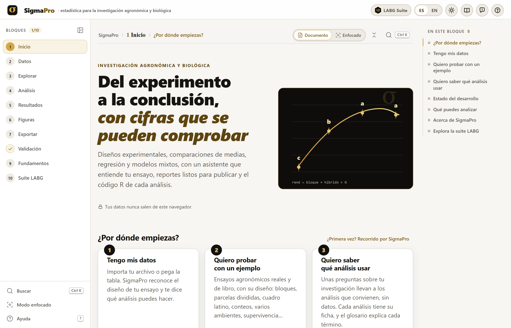
Figura 1.1. El bloque Inicio, tal como aparece al abrir SigmaPro. La barra de la izquierda lleva a los diez bloques; el contenido del bloque ocupa el centro.
Botón o texto
Qué hace
Empezar con tus datos
Lleva al bloque 2 (Datos), donde se importa un archivo, se pega una tabla o se abre uno de los 27 ejemplos (capítulo 2).
Ver la validación
Lleva al bloque 8 (Validación): la lista de los casos en que cada método se comparó contra R, con la mayor diferencia encontrada (capítulo 8).
Ver la maqueta del flujo
Abre, en la misma pestaña, la maqueta con la que se diseñó el recorrido de la app: una página fija con el ejemplo del maíz, de los datos al reporte. Sirve para ver el flujo completo de un vistazo; para volver, se usa el botón «atrás» del navegador.
Tus datos nunca salen de este navegador.
Recuerda que todo se calcula en la computadora de quien usa la app (sección 1.2).
Al final de cada bloque hay dos botones, ← Anterior y Siguiente →, con el nombre del bloque al que llevan; en Inicio solo aparece el segundo y en Suite LABG, el último, solo el primero. El recorrido natural es el de la barra: de los datos al análisis, al reporte, a las figuras y a la exportación. Pero cada bloque se puede abrir en cualquier momento.
1.2Los tres compromisos
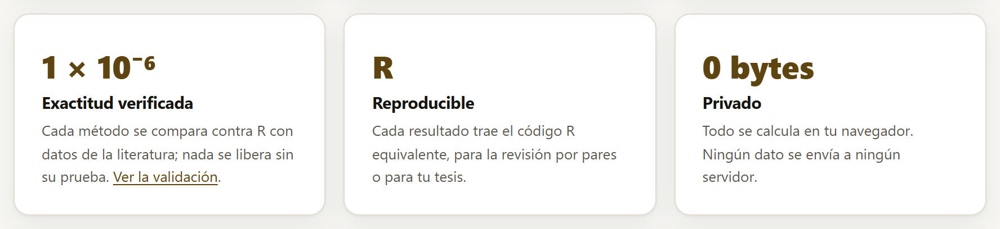
Figura 1.2. Las tres tarjetas de Inicio. Cada una es una promesa que la app cumple de forma comprobable.
Bajo el título, tres tarjetas resumen lo que distingue a SigmaPro. No son lemas: cada una se puede comprobar.
10⁻⁶
Exactitud verificada
Cada método se compara contra R, con datos de la literatura y con casos construidos a propósito, antes de ofrecerse en el catálogo. La regla es que ningún número difiera del de R en más de una millonésima (relativa a su tamaño). Un método sin sus casos aprobados no aparece en la app. El bloque 8 muestra el resultado de esas comparaciones.
RReproducible
Cada resultado trae el código R que da lo mismo, con los datos, el modelo y las opciones que se usaron. Sirve para que un revisor, un asesor de tesis o uno mismo años después repita el análisis sin SigmaPro. El proyecto .labg guarda además un guion que repite todos los análisis del reporte (capítulo 7).
0Privado
Todo se calcula en el navegador: los datos no se envían a ningún servidor, ni siquiera para los modelos que corren en el motor R, que también funciona dentro del navegador (introducción I.7). Abierta con doble clic, la app no hace ninguna petición fuera de la computadora, salvo la primera descarga del motor R.
Que la diferencia sea de una millonésima significa que, en la práctica, las cifras de SigmaPro y las de R son las mismas en todos los decimales que se publican. Una F de 60.635 en SigmaPro es una F de 60.635 en R; un valor p de 0.0034 es 0.0034. Cuando un método no puede alcanzar esa exactitud porque el propio R introduce un ruido numérico mayor (por ejemplo, ciertos ajustes iterativos), el caso lleva una tolerancia propia con su motivo escrito, y así aparece en la validación (capítulo 8).
1.3El estado del desarrollo
Más abajo, la tarjeta Estado del desarrollo explica cómo se construye SigmaPro: por hitos, y cada hito se cierra solo cuando todas sus comparaciones contra R y todas sus pruebas automáticas pasan. La lista marca con ✓ los hitos terminados y con ○ los pendientes; el número de cada hito dice a qué fase pertenece. Están terminados todos, del 1.0 al 5.0; el último de la lista es la publicación de la versión 1.0.0.
Fase
Hitos
Qué trajo
Fase 1
1.0 a 1.12
Los cimientos y lo que más se usa en el campo: la hoja de datos, los descriptivos, los supuestos con semáforo, las pruebas t y no paramétricas, el análisis de varianza de los diseños experimentales, las comparaciones de medias, la ANCOVA, la regresión, la correlación, las tablas de contingencia, el asistente, el constructor de modelos, el reporte, las figuras y las exportaciones.
Fase 2
2.0 a 2.10
Los modelos que piden más cálculo: los mixtos (en el motor R dentro del navegador), las medidas repetidas, los componentes de varianza y la heredabilidad, los modelos lineales generalizados y sus versiones mixtas, la regresión no lineal y la dosis-respuesta, las superficies de respuesta y los ensayos multiambiente con su estabilidad.
Fase 3
3.0 a 3.9
El tamaño de muestra y la potencia, el muestreo, la supervivencia, las series de tiempo, el multivariado (MANOVA y discriminante) y, como ampliación, los estratos en la supervivencia, la prueba M de Box, los modelos ARIMA, Cox y la MANOVA en el constructor y el guardado automático del trabajo.
Fase 4
4.0 a 4.5
Los cálculos completos: la regresión no lineal con hormesis, Michaelis-Menten y la dosis económica; el multiambiente con imputación de celdas, WAAS y el análisis en dos etapas; el generador de diseños de superficies, las mezclas, la deseabilidad y la superficie en 3D; los generalizados con intervalos perfilados y la corrección de Firth; el asistente que reconoce las parcelas divididas en los datos; y la interfaz en inglés.
Fase 5
5.0
La app que explica lo que calcula: las fichas de Fundamentos de los 78 análisis, el bloque Suite LABG con las sugerencias de las apps hermanas, la pantalla de apertura, las ilustraciones del catálogo y los temas de las gráficas.
El número que aparece al pie de cada página de la app (SigmaPro v1.0.0) es la versión. Este manual describe la versión 1.0.0.
1.4Si quedó un trabajo guardado
Mientras se trabaja, SigmaPro guarda solo, en el propio navegador, los datos, los análisis del reporte y los ajustes de las figuras (el guardado automático, sección 7.6). Si la pestaña se cerró sin guardar el proyecto, o la computadora se apagó, al volver a abrir la app aparece este aviso en la parte de arriba de Inicio y de Datos:
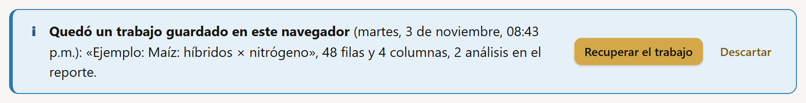
Figura 1.3. El aviso del guardado automático: cuándo se guardó, de qué datos, cuántas filas y columnas y cuántos análisis tenía el reporte.
Recuperar el trabajo vuelve a cargar los datos tal como estaban (con sus tipos, sus columnas calculadas y su filtro), los análisis del reporte y los ajustes de las figuras. Los resultados se recalculan con esos datos, así que son exactamente los de antes. La app se abre en Resultados, o en Datos si el reporte estaba vacío.
Descartar borra lo guardado y deja la app vacía.
Si no se elige nada y se empieza otro trabajo, el anterior no se pierde: el aviso sigue a la vista y se puede recuperar mientras la pestaña esté abierta. Recuperarlo con otros datos ya cargados pide confirmación, porque los reemplaza.
!El guardado automático no reemplaza al proyecto
Lo guardado vive en ese navegador de esa computadora. No viaja a otra máquina, se pierde si se borran los datos del navegador y, en una ventana privada, se borra al cerrarla. Para conservar un trabajo, compartirlo o llevarlo a otro equipo, se guarda el proyecto .labg en el bloque Exportar (sección 7.5).
1.5Qué puedes analizar
La tarjeta Qué puedes analizar lista los 78 análisis de SigmaPro, agrupados en sus 18 familias, de los descriptivos a la supervivencia y las series de tiempo. Sirve para ver de un vistazo lo que hace el programa antes de cargar datos.
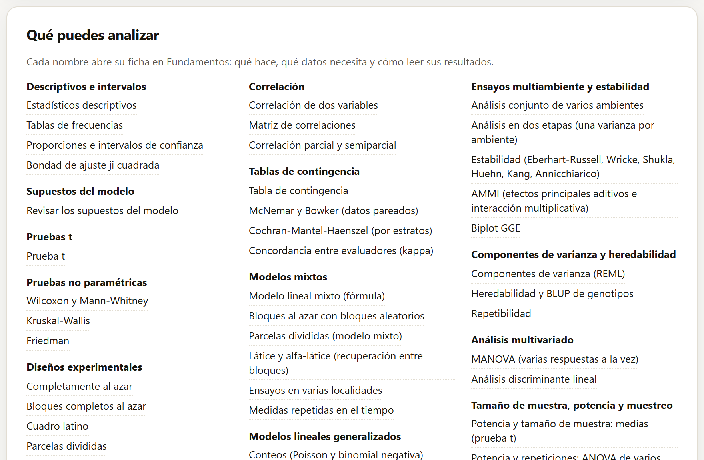
Figura 1.4. El principio de la tarjeta Qué puedes analizar. Cada nombre es un enlace a la ficha de ese análisis.
Cada nombre abre la ficha del análisis en el bloque 9, Fundamentos: para qué sirve, el modelo y sus supuestos, los datos que necesita, cómo se lee el resultado y sus referencias (capítulo 9). Desde la ficha, Abrir este análisis lleva al análisis y Cargar los datos de ejemplo lo abre ya con su ejemplo cargado, así que esta lista es también un atajo para probar cualquier método.
1.6Acerca de SigmaPro y la pantalla de apertura
La tarjeta Acerca de SigmaPro dice quién hizo el programa y con qué licencia, y reúne los controles de la pantalla de apertura.
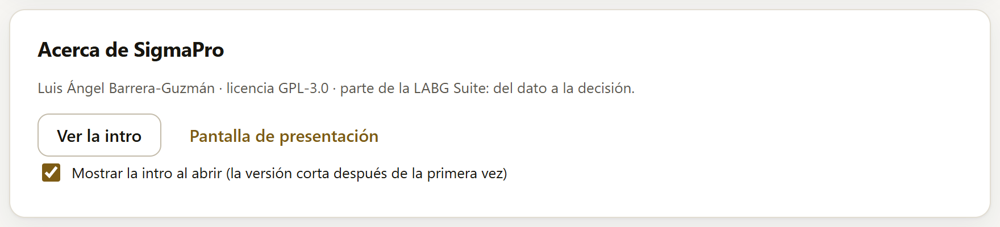
Figura 1.5. La tarjeta Acerca de SigmaPro.
Control
Qué hace
Ver la intro
Muestra otra vez la pantalla de apertura completa, hasta Start.
Pantalla de presentación
La escena de la apertura en bucle, sin botón, para proyectarla en una clase o en un stand. Se sale con cualquier tecla o con un clic.
Mostrar la intro al abrir
Marcada (como viene), la apertura sale al abrir la app: completa la primera vez y en versión corta (un segundo y medio) las siguientes. Desmarcada, SigmaPro abre directo en Inicio. La elección se recuerda en el navegador.
iNota
La apertura nunca estorba el trabajo: Saltar o Esc la quitan en cualquier momento, no se repite al recargar la misma pestaña y, si el sistema pide reducir el movimiento, aparece quieta. Mientras se ve, la app termina de cargar detrás.
1.7Explora la suite LABG
Al final de Inicio, el recuadro negro y dorado Explora la suite LABG presenta cuatro apps hermanas de SigmaPro, las que más a menudo continúan un análisis agronómico: PCAPro (componentes principales), ClusteringPro (conglomerados), AgriDesign (diseño y sorteo de experimentos) y CorrelationPro (correlación). Cada tarjeta trae su logo, su versión, sus funciones y los botones Abrir app, Manual y Citar; una app que todavía no tiene versión pública aparece con Próximamente en lugar de los botones. Es el mismo recuadro del bloque 10; el capítulo 10 lo explica completo (Figura 10.1).
2
Bloque 2 · Datos
Datos: la tabla del ensayo
Todo análisis empieza con una tabla bien hecha. En este bloque se importa un archivo, se pega una tabla o se abre un ejemplo; se revisa el tipo de cada variable, que decide cómo se analiza; se crean variables calculadas y transformadas; se filtran filas sin borrarlas; se cambia la forma de la tabla y se lee lo que SigmaPro reconoce del diseño del ensayo. Al pie, según lo que tenga la tabla, el bloque sugiere la app de la suite que puede continuar el trabajo. Nada de esto toca el archivo original.
2.1Cuatro maneras de empezar
2.2Cómo debe verse la tabla
2.3Importar un archivo
2.4Pegar una tabla y la hoja vacía
2.5Los 27 ejemplos
2.6La hoja de trabajo
2.7Los cinco tipos de variable
2.8Variables calculadas
2.9Transformar una variable
2.10Filtrar filas
2.11Tabla ancha y tabla larga
2.12Deshacer, rehacer y volver
2.13Lo que SigmaPro ve en tu ensayo
2.14Continúa en la suite LABG
2.1Cuatro maneras de empezar
Mientras no hay datos, el bloque muestra su barra de herramientas y, debajo, un recuadro con las tres formas más comunes de empezar. Los botones de la barra hacen lo mismo y siguen a la vista cuando ya hay una tabla cargada.
Figura 2.1. El bloque Datos sin datos. Las herramientas de la segunda fila se activan al cargar una tabla.
Botón
Qué hace
Sección
Importar archivo…
Abre un archivo de texto (CSV, TSV, TXT) o un libro de hoja de cálculo (.xlsx, .xlsm, .ods). El archivo se lee en la computadora; no se sube a ningún lado.
2.3
Pegar tabla…
Recibe un rango copiado de una hoja de cálculo, con su fila de nombres.
2.4
Ejemplos ▾
Abre uno de los 27 ensayos de ejemplo, cada uno pensado para un tipo de análisis.
2.5
Hoja vacía…
Crea una tabla en blanco con los nombres de columna y el número de filas que se pidan, para capturar a mano.
2.4
Cargar datos nuevos reemplaza la tabla anterior. Si la anterior tenía cambios, el reporte y los análisis abiertos se recalculan con los datos nuevos; por eso conviene guardar el proyecto (capítulo 7) antes de cambiar de ensayo.
2.2Cómo debe verse la tabla
SigmaPro lee la forma de tabla que piden casi todos los programas de estadística: una fila por unidad experimental (la parcela, la maceta, la planta, el animal) y una columna por variable. Las columnas son de dos clases: las que describen el diseño (bloque, tratamiento, variedad, dosis, fecha) y las que se midieron (rendimiento, altura, número de frutos).
Cuadro 2.1. Las primeras filas del ejemplo del maíz: una parcela por fila.
bloque
hibrido
dosis
rend
1
H-40
0
4.61
1
H-40
60
5.71
1
H-40
120
6.41
1
H-40
180
6.56
1
H-52
0
4.80
✓Buenas prácticas para la tabla
Una fila de nombres, arriba
Nombres cortos, sin repetir: rend, altura_30dds, peso_seco. Los espacios y acentos se admiten, pero los nombres simples se leen mejor en las fórmulas y en el código R.
Nada más en la hoja
Sin títulos encima de la tabla, sin totales abajo, sin celdas combinadas ni notas al costado.
Los faltantes, vacíos
Una celda vacía es un faltante. También se aceptan NA, . y -, o los códigos que se indiquen al importar. Nunca un cero en lugar de un dato perdido.
Un tipo por columna
Una columna de rendimiento con números solamente; si hay un texto suelto («s/d», «perdida»), se toma como faltante y la app lo avisa.
Los códigos de grupo, claros
Si el bloque o el tratamiento se escribieron con números (1, 2, 3), revisar que la app los haya tomado como factor (sección 2.7).
Forma larga
Si la misma variable se midió varias veces (fechas, años, cosechas), una fila por medición. Si la tabla viene ancha (una columna por fecha), el bloque la convierte (sección 2.11).
2.3Importar un archivo
Importar archivo… abre el selector de archivos del sistema. SigmaPro acepta:
Texto separado (.csv, .tsv, .txt): por comas, punto y coma, tabuladores o barras verticales. La app detecta sola el separador de columnas, el separador decimal y la codificación del texto (UTF-8, UTF-16 o la de Windows en español, Windows-1252), así que los acentos y la ñ llegan bien aunque el archivo venga de una hoja de cálculo antigua.
Libros de hoja de cálculo (.xlsx, .xlsm y .ods): si el libro tiene varias hojas, se elige cuál importar. Los libros del formato viejo (.xls) no se pueden abrir; se guardan antes como .xlsx o .csv.
Antes de cargar nada, la ventana Importar datos muestra cómo quedará la tabla:
Figura 2.2. La ventana de importar con un archivo separado por punto y coma y con coma decimal. Cada columna trae el tipo que la app propone y la razón; la celda «s/d» de plantas se marca porque quedará como faltante.
Opción
Para qué
Separador de columnas
Coma, punto y coma, tabulador o barra vertical (solo en archivos de texto). Si la vista previa muestra todo en una sola columna, el separador no es el correcto.
Hoja
En un libro, la hoja que se importa.
Separador decimal
Punto (4.25) o coma (4,25). En México lo usual es el punto; los archivos de otros países o de hojas de cálculo configuradas en español de España traen coma.
Códigos de faltante
Los textos que significan «sin dato», separados por comas (por omisión NA, ., -). La celda vacía siempre es faltante.
La primera fila tiene los nombres
Si se desmarca, las columnas se llaman V1, V2… y la primera fila se toma como datos.
Tipo de cada columna
El selector arriba de cada columna. Lo que se elija aquí manda; la app solo propone (sección 2.7).
La vista previa muestra las primeras ocho filas como quedarán: los números con el decimal elegido, las fechas en la forma AAAA-MM-DD y, en otro color, cada celda que no se pueda convertir y se volverá faltante (s/d → faltante). Al pulsar Importar, la tabla se carga y el bloque pasa a la hoja de trabajo. Si alguna columna numérica tenía textos sueltos, un aviso lo dice, y la explicación de esa variable cuenta cuántos fueron.
iEl archivo original no cambia
SigmaPro trabaja con una copia en memoria. Ningún cambio del bloque (tipos, columnas nuevas, filtros, celdas editadas) se escribe en el archivo que se importó. Para guardar la tabla con sus cambios se usa el proyecto .labg (sección 7.5), que trae además los datos en CSV.
2.4Pegar una tabla y la hoja vacía
Pegar tabla… abre un cuadro de texto donde se pega, con Ctrl+V, un rango copiado de una hoja de cálculo (con su fila de nombres). Al pulsar Continuar aparece la misma ventana de importar de la sección anterior, con el tabulador como separador. Es la forma más rápida de pasar unos datos sin guardar antes un archivo. También se puede pegar directo sobre la rejilla vacía: la app lo reconoce como una tabla nueva y abre la misma ventana.
Hoja vacía… pide los nombres de las columnas, separados por comas (por omisión bloque, tratamiento, rend), y el número de filas (hasta 100 000). Las columnas cuyo nombre indica un factor del diseño (bloque, tratamiento, variedad, repetición, lote…) nacen como factores; las demás, como numéricas. Luego se escribe en la rejilla como en cualquier hoja de cálculo (sección 2.6).
2.5Los 27 ejemplos
Ejemplos ▾ despliega la lista de los ensayos de ejemplo, con una línea que dice para qué sirve cada uno. Seis son datos publicados (Mendel, Box y Cox, Yates, Cornell y dos de un paquete de R para ensayos multiambiente); los demás son ficticios, construidos para que cada análisis tenga un caso claro. Todos los resultados de este manual salen de ellos, así que cualquier número se puede repetir con un clic.
Cuadro 2.2. Los ejemplos de SigmaPro y para qué sirve cada uno.
Ejemplo
Filas
Diseño y variables
Para
Maíz: híbridos × nitrógeno
48
Factorial 3 × 4 en 4 bloques; rendimiento (t/ha)
ANOVA, comparaciones, polinomios, figuras
Frijol: germinación (%)
20
5 tratamientos, 4 cajas de 50 semillas
Arcoseno, modelo binomial
Trigo: cuadro latino 5 × 5
25
5 variedades, hileras y columnas
Cuadro latino
Jitomate: altura en invernadero
18
3 sustratos; altura a 15, 30, 45 y 60 días, en forma ancha
Ancha → larga, fechas, faltantes
Aguacate: trips por brote
30
5 tratamientos en 6 bloques; conteos con ceros
√(x + 0.5), modelos de conteos
Venenos × tratamientos
48
Box y Cox (1964): 3 venenos × 4 tratamientos
Transformación de Box-Cox
Chícharo: segregación de Mendel
4
Mendel (1866): 556 semillas ya contadas
Bondad de ajuste 9:3:3:1
Avena en parcelas divididas
72
Yates (1935): 3 variedades × 4 dosis de N, 6 bloques
Parcelas divididas
Sorgo: variedades y plantas
24
6 variedades en 4 bloques; plantas cosechadas
ANCOVA
Café: rendimiento y sitio
40
40 fincas con 7 variables del sitio
Regresión múltiple, selección de variables
Frijol: semilla tratada en cuatro lotes
16
Germinación por lote y tratamiento, ya contada
Contingencia, Cochran-Mantel-Haenszel
Roya: dos evaluadores
80
Severidad 0 a 3 calificada por dos técnicos
Kappa, Bowker
Alfa-látice: 24 genotipos
72
Olivoto y Lúcio (2020): 3 repeticiones, bloques de 4
Látice mixto, heredabilidad
Avena en 14 ambientes
420
Olivoto y Lúcio (2020): 10 genotipos, 3 repeticiones
Multiambiente, estabilidad, AMMI, GGE
Maíz: altura en cinco fechas
80
4 dosis en 4 bloques; la misma planta en 5 fechas
Medidas repetidas
Guayabo: 20 árboles, cuatro cosechas
80
Kilogramos por árbol y cosecha, con 5 perdidos
Repetibilidad
Herbicidas: peso seco por dosis
56
7 dosis de 2 herbicidas, 4 repeticiones
Dosis-respuesta (DE50)
Tomate: nitrógeno × potasio
13
Central compuesto rotable con 5 centros
Superficie de respuesta
Aguacate: muestreo en tres huertas
38
Árboles al azar de 3 huertas; peso y trips (0/1)
Muestreo estratificado
Frijol: días a la germinación
120
3 tratamientos; días hasta germinar, con censura
Kaplan-Meier, log-rank, Cox
Estación: lluvia y temperatura
96
Valores mensuales de 2017 a 2024
Series de tiempo, ARIMA
Chile: medidas del fruto
60
4 variedades en 3 bloques, 5 frutos por parcela
MANOVA, discriminante
Hilo: alargamiento de tres polímeros
15
Cornell (2002): simplex-látice {3, 2} con repeticiones
Mezclas (modelos de Scheffé)
Fruto: rendimiento, costo y pH
13
Central compuesto rotable: nitrógeno × riego, tres respuestas
7 bloques de 3 parcelas; cada par de líneas coincide una vez (λ = 1)
Bloques incompletos balanceados
2.6La hoja de trabajo
Con una tabla cargada, el bloque se divide en tres partes: la lista de variables a la izquierda, la rejilla con los datos al centro y, debajo de la lista, el detalle de la variable elegida. La figura 2.3 las señala.
1234567
Figura 2.3. La hoja de trabajo con el ejemplo del maíz.
1Cargar: importar, pegar, ejemplos y hoja vacía (2.1).
2Preparar: variable calculada, transformar, filtrar y ancha ⇄ larga (2.8–2.11).
3Deshacer y rehacer (2.12).
4Variables: cada columna con su tipo, sus niveles y sus faltantes. Un clic la elige.
5Detalle de la variable elegida: por qué tiene ese tipo, el selector para cambiarlo y su resumen.
6La rejilla: los datos, con el tipo bajo cada nombre y el menú ⋮ de cada columna.
7Estado: filas, columnas, celdas faltantes y de dónde vienen los datos.
La lista de variables y el detalle
Cada variable de la lista lleva su tipo en color (factor · 4 quiere decir factor con cuatro niveles), las celdas faltantes si las hay (2 falt.) y una marca si es calculada (ƒ) o transformada (↻). Al elegir una, el detalle muestra:
la razón del tipo, en una frase («Son códigos enteros con 4 valores repetidos y el nombre "bloque" indica un factor»), y, si es calculada o transformada, de dónde salió (ƒ = rend / 1000);
el selector Tipo, que cambia el tipo igual que el menú ⋮;
en una numérica, n, faltantes, media, desviación estándar, mínimo y máximo, y el botón Transformar…; en un factor, sus niveles en orden con cuántas filas tiene cada uno y el botón Ordenar niveles…; en una fecha, el intervalo de fechas.
Si hay un filtro activo (sección 2.10), estos resúmenes se calculan solo con las filas que pasan el filtro.
La rejilla
La rejilla funciona como una hoja de cálculo y se maneja con el teclado. Dibuja solo las filas visibles, así que una tabla de 100 000 filas se recorre igual de rápido que una de 100.
Teclas
Qué hacen
Flechas, Inicio, Fin, RePág, AvPág
Moverse por la tabla; Ctrl+Inicio y Ctrl+Fin van a la primera y a la última celda. Con Mayús, se selecciona un rango.
Doble clic, Intro, F2 o empezar a escribir
Editar la celda. Intro guarda; Esc cancela.
Tab y Mayús+Tab
Celda siguiente y anterior.
Supr o Retroceso
Vaciar las celdas seleccionadas (quedan como faltantes).
Ctrl+C y Ctrl+V
Copiar y pegar rangos con una hoja de cálculo, separados por tabuladores.
Ctrl+Z y Ctrl+Y
Deshacer y rehacer.
Ctrl+A
Seleccionar toda la tabla.
Lo que se escribe en una celda se interpreta según el tipo de la columna: en una numérica, un texto que no es número no se acepta y la app explica por qué (para un dato perdido, la celda se deja vacía); en una fecha, se aceptan AAAA-MM-DD y DD/MM/AAAA. Al pegar un rango, las celdas que no son del tipo de su columna se dejan como estaban y un aviso dice cuántas fueron. Cuando la tabla tiene cambios sin guardar, el navegador pregunta antes de cerrar la pestaña.
2.7Los cinco tipos de variable
El tipo de una columna decide cómo entra a los análisis. Es la decisión más importante del bloque: un bloque escrito con números (1, 2, 3, 4) tomado como numérico convierte un análisis de bloques en una regresión sin sentido.
Tipo
Qué es
Cómo entra a los análisis
numérica
Una medición: rendimiento, altura, peso, conteo, porcentaje. También una dosis que se quiera estudiar como curva.
Como respuesta o como covariable. Una dosis numérica con pocos valores repetidos puede usarse además como factor del diseño (el análisis lo ofrece).
factor
Un grupo: bloque, tratamiento, variedad, lote, sitio, año del ensayo.
Como factor del diseño; sus niveles tienen un orden que decide el de las medias en cuadros y figuras.
fecha
Una fecha (siembra, trasplante, cosecha), en AAAA-MM-DD o DD/MM/AAAA.
Para ordenar series de tiempo y para calcular días entre fechas; nunca como factor del diseño.
texto
Notas libres, sin valores repetidos.
No entra, salvo que se use explícitamente; entonces cuenta como factor.
identificador
La clave de cada unidad: número de parcela, folio, planta.
No entra a los análisis. Sirve para reconocer cada fila y, en la tabla larga, como sujeto de las medidas repetidas.
Cómo propone el tipo la app
Al importar, SigmaPro propone un tipo para cada columna y explica siempre por qué. Las reglas, en orden:
Si todos los valores son números, la columna es numérica, salvo dos casos: si son enteros, cada fila tiene uno distinto y el nombre indica una clave (parcela, id, folio, número, planta…), es identificador; si son enteros con hasta 30 valores que se repiten y el nombre indica un factor del diseño (bloque, rep, tratamiento, variedad, lote, sitio, año…), es factor.
Si al menos ocho de cada diez valores son números y el resto son textos sueltos («s/d», «perdida»), es numérica y esos textos quedan como faltantes, con aviso.
Si todos son fechas, es fecha.
Si son textos que se repiten, es factor. Si cada fila tiene uno distinto, es identificador cuando parecen códigos (P01, P02…), cuando el nombre indica una clave o cuando hay más de 30 filas; si no, es texto.
!Revisa siempre los códigos numéricos
Si una columna de enteros con pocos valores no tiene un nombre reconocible (por ejemplo T o grupo2), la app la deja como numérica y lo advierte: «Son números, pero solo hay 4 valores distintos repetidos: si son códigos de grupo, cámbiala a factor». Conviene leer la razón de cada variable una vez, al cargar los datos.
El menú ⋮ de cada columna
Figura 2.4. El menú ⋮ de una columna numérica.
El botón ⋮ junto al nombre de cada columna abre su menú:
Renombrar… cambia el nombre (sin repetir uno existente).
Transformar… (en numéricas) abre la ventana de la sección 2.9.
Ordenar niveles… (en factores) cambia el orden de los niveles.
Tipo de variable: los cinco tipos, con el actual marcado.
Eliminar la columna. Ctrl+Z la regresa.
Al cambiar a numérica o a fecha, los valores que no se puedan convertir quedan como faltantes y un aviso dice cuántos; el cambio se puede deshacer.
El orden de los niveles
El orden de los niveles decide el de las medias en los cuadros y las figuras, y cuál es el nivel de referencia: el primero, contra el que se comparan los demás en una prueba de Dunnett, en las razones de riesgo de Cox o en los coeficientes de un modelo. Por eso conviene poner primero al testigo.
Los botones Numérico, Alfabético y Como aparecen ordenan de una vez; las flechas ↑ y ↓ mueven un nivel. Aplicar guarda el orden (y se puede deshacer).
Figura 2.5. El orden de los niveles de un factor. El primero es el nivel de referencia.
2.8Variables calculadas
ƒ Variable calculada… crea una columna nueva a partir de las que ya existen, con una expresión escrita en la misma notación de R. Mientras se escribe, la ventana muestra si la expresión es válida, qué tipo de columna dará y sus primeros valores; un clic en el nombre de una columna o de una función la inserta donde está el cursor.
Figura 2.6. Una variable calculada con una condición: dosis de 120 kg/ha o más, «alta»; menos, «baja».
Se escribe
Significa
+ - * / ^ y %%
Suma, resta, producto, cociente, potencia y resto de la división.
== != < <= > >=
Comparaciones (dan verdadero o falso).
& | !
Y, o, no.
x %in% c("a", "b")
Pertenencia a una lista.
`peso seco`
Un nombre con espacios, entre comillas invertidas.
Logaritmos (natural por omisión), exponencial, raíz y valor absoluto.
round(x, 2), floor, ceiling, trunc, sign
Redondeos y signo.
sin, cos, tan, asin, acos, atan
Funciones trigonométricas (en radianes).
pmin(a, b), pmax(a, b)
El menor o el mayor, fila por fila.
ifelse(cond, sí, no)
Un valor si la condición se cumple y otro si no.
is.na(x), as.numeric(x)
¿Falta el dato? · Convertir a número.
paste(a, b, sep = "-"), paste0
Unir textos (por ejemplo, para combinar dos factores).
mean, sd, var, median, min, max, sum, length
Resúmenes de toda la columna: dan un solo número, que se repite en cada fila.
Algunas funciones tienen también nombre en español: raiz, si (= ifelse), media, de (= sd), mediana, minimo, maximo, suma, varianza, redondear, exponencial, absoluto y faltante (= is.na).
✎Ejemplos
rend * 1000 / 10.5
Kilogramos por hectárea de una parcela de 10.5 m² (si rend estuviera en kg/parcela).
(rend - mean(rend)) / sd(rend)
El rendimiento estandarizado.
germinadas / sembradas * 100
Porcentaje de germinación.
ifelse(trips == 0, "sin", "con")
Presencia o ausencia (queda como factor).
paste(hibrido, dosis, sep = "_")
Un factor con las 12 combinaciones de híbrido y dosis.
El resultado se guarda según lo que dé la expresión: un número, como columna numérica; un texto, como factor; un verdadero o falso, como factor con los niveles VERDADERO y FALSO. Los faltantes siguen las reglas de R: cualquier operación con un faltante da faltante, y NA & FALSE es FALSE. Una diferencia con R: los resúmenes (mean, sd…) ignoran los faltantes salvo que se escriba na.rm = FALSE, porque casi siempre es lo que se quiere.
2.9Transformar una variable
Cuando los residuales de un análisis no tienen varianza constante o no son normales (capítulo 4, los supuestos), una transformación de la respuesta suele resolverlo. ↻ Transformar… crea una columna nueva con la variable transformada; la original no cambia, así que se pueden comparar los dos análisis.
Transformación
Cuándo conviene
ln(x)
Datos positivos cuya desviación estándar crece en proporción a la media (pesos, biomasa, cargas de patógeno).
log₁₀(x)
Lo mismo, en base 10 (más fácil de leer en órdenes de magnitud).
ln(x + c)
Cuando hay ceros. Se elige la constante c (por omisión 1).
√x
Conteos cuya varianza es proporcional a la media (distribución de Poisson).
√(x + 0.5)
Conteos con ceros o con valores pequeños (insectos, malezas, lesiones).
asin(√p)
Proporciones y porcentajes (germinación, incidencia, mortalidad). La ventana detecta si los datos vienen en porcentaje (0 a 100) y deja elegir el resultado en grados o en radianes.
1/x
Tiempos (días a floración, a germinación) cuya varianza crece mucho con la media.
Box-Cox
Cuando no se sabe cuál usar: estima la potencia que mejor estabiliza la varianza y normaliza los residuales.
(x − media)/DE
Pasar a unidades de desviación estándar (para comparar variables de escalas distintas).
Box-Cox
La transformación de Box y Cox (1964) es una familia de potencias, xλ, que incluye a las anteriores como casos particulares: λ = 1 deja los datos como están, λ = 0.5 es la raíz, λ = 0 el logaritmo y λ = −1 el recíproco. El valor de λ se estima por máxima verosimilitud con los residuales del modelo del experimento, no con los datos crudos: lo que debe estabilizarse es la variación dentro de los tratamientos, no la diferencia entre ellos.
Figura 2.7. Box-Cox para el tiempo de supervivencia del ejemplo de los venenos. El máximo está en λ̂ = −0.82; el intervalo de 95 % incluye a −1, así que la app propone el recíproco.
Se elige la variable y se marca Box-Cox.
Se marcan los factores (y el bloque) que se usarán en el análisis. La app arma el modelo: los bloques, filas y columnas se suman; los tratamientos se cruzan. En el ejemplo, tiempo ~ veneno * tratamiento.
Estimar λ calcula λ̂, su intervalo de confianza de 95 % (los λ con 2[L(λ̂) − L(λ)] ≤ χ²0.95; 1 = 3.84) y la curva de la verosimilitud, con el máximo y el intervalo marcados.
La app sugiere una potencia sencilla (ninguna, raíz, logaritmo, recíproco de la raíz, recíproco o cuadrado) si cae dentro del intervalo, porque es más fácil de interpretar que λ̂ y casi igual de buena. El valor que se use queda en la casilla λ, que se puede cambiar a mano.
Crear la columna guarda (xλ − 1)/λ (o ln x si λ = 0) con el nombre que se elija; el detalle de la variable recuerda el λ usado.
iLas medias de una variable transformada
Las medias y sus diferencias quedan en la escala transformada. Para presentarlas en las unidades originales se aplica la transformación inversa a las medias (por ejemplo, el cuadrado de las medias de √x), sabiendo que el resultado es una mediana, no una media. Una alternativa que evita el problema son los modelos lineales generalizados (sección 4.17), que modelan los conteos y las proporciones en su propia escala.
2.10Filtrar filas
Filtrar filas… deja fuera de los análisis las filas que no cumplen una condición, sin borrarlas. Sirve para analizar un solo sitio de un ensayo en varios, quitar un bloque dañado o excluir las parcelas con un problema registrado. La condición se escribe con la notación de la sección 2.8, y la ventana dice al momento cuántas filas pasan.
Figura 2.8. Un filtro que quita el bloque 4 y el testigo sin nitrógeno: pasan 27 de las 48 filas.
Con el filtro activo, un aviso arriba de la rejilla lo recuerda, con la condición y cuántas filas pasan, y el botón Quitar el filtro. Las filas que no pasan siguen en la rejilla, rayadas y con su número tachado; se pueden ver y corregir.
Todo lo que viene después usa solo las filas que pasan: los resúmenes del detalle, el diagnóstico de la sección 2.13, Explorar, Análisis y el reporte. El proyecto .labg guarda la condición del filtro.
Algunas condiciones útiles:
sitio == "Norte"
bloque != "4"
!is.na(rend)
hibrido %in% c("H-52", "H-66")
dosis > 0 & dosis < 180
Una fila cuyo resultado sea faltante (por ejemplo, rend > 5 con rend vacío) no pasa. Un filtro que no deja ninguna fila no se aplica.
Figura 2.9. El filtro activo: las filas que no pasan quedan rayadas.
2.11Tabla ancha y tabla larga
Una variable medida varias veces en la misma unidad suele capturarse en forma ancha: una fila por planta y una columna por fecha (altura_15dds, altura_30dds…). Los análisis piden la forma larga: una fila por medición, con una columna que dice la fecha y otra con el valor. Ancha ⇄ larga… hace el cambio en los dos sentidos.
En Ancha → larga, se marcan las columnas que identifican cada unidad (las que se repetirán en cada fila nueva: aquí sustrato y planta) y las columnas que se apilan (las mediciones).
Se nombran la columna nueva con los nombres de las columnas apiladas (aquí dds, días después del trasplante) y la columna de valores (altura).
Si cada columna apilada trae un número en su nombre, la casilla Quedarse con el número de cada nombre guarda solo ese número (altura_15dds → 15), y la columna nueva sale numérica, lista para una curva en el tiempo; sin la casilla, guarda el nombre completo como factor.
Cambiar la forma carga la tabla nueva. Los identificadores conservan su tipo; uno que era identificador (una planta por fila) pasa a factor, porque en la tabla larga cada planta se repite: es el sujeto de las medidas repetidas.
Figura 2.10. Las alturas del jitomate, de ancha a larga: cada planta pasará a tener cuatro filas, una por fecha.
Figura 2.11. El resultado: 72 filas (18 plantas × 4 fechas). El botón Volver a la tabla anterior regresa la tabla ancha.
En Larga → ancha se eligen las columnas que identifican cada unidad, la columna cuyos valores darán nombre a las columnas nuevas y la columna con los valores. Si una combinación de identificadores se repite, la app se detiene y lo explica: la tabla ancha no sabría qué valor poner, y hace falta otra columna que distinga esas filas.
2.12Deshacer, rehacer y volver
Cada cambio de la hoja (una celda, un pegado, un tipo, una columna nueva o eliminada, un orden de niveles) se puede deshacer con ↶ Deshacer o Ctrl+Z, y rehacer con ↷ Rehacer o Ctrl+Y. Al pasar el puntero sobre los botones se lee qué se va a deshacer («Deshacer: Cambiar "dosis" a factor»).
Cambiar la forma de la tabla crea una tabla nueva. Para regresar a la anterior está el botón Volver a la tabla anterior, que aparece en la barra mientras se pueda volver.
2.13Lo que SigmaPro ve en tu ensayo
Al final del bloque, la tarjeta Lo que SigmaPro ve en tu ensayo resume la estructura que la app reconoce en la tabla. Es la misma lectura que usan el asistente y el constructor de modelos (capítulo 4) para proponer el análisis, y conviene revisarla antes de analizar: si algo no corresponde con el diseño real, es momento de corregir un tipo o una columna.
Figura 2.12. Lo que SigmaPro ve en el ensayo del maíz: un factorial 3 × 4 balanceado en cuatro bloques completos al azar.
Cada línea lleva un símbolo: ✓ lo que está bien, ! lo que merece atención e i una nota. Lo que se revisa:
Revisión
Qué puede decir
La respuesta
Qué columna se tomó como respuesta y si tiene faltantes (el análisis usará las observaciones completas).
Columnas que no son factores
Un identificador (un valor distinto en cada fila), unas submuestras (el número de fruto o de planta dentro de cada parcela, 1, 2, …, que no es un tratamiento) o una numérica con pocos valores repetidos tomada como factor del diseño (una dosis).
Combinaciones y balance
Si es un factorial y si cada combinación tiene el mismo número de observaciones. Si no, avisa que las sumas de cuadrados tipo I, II y III darán resultados distintos (sección 4.10); si hay combinaciones vacías, que la tipo III no está definida.
Bloques
Si cada bloque tiene todos los tratamientos (bloques completos al azar), cuántos están incompletos y si un tratamiento aparece más de una vez en un bloque.
Cuadro latino
Con columnas de fila y columna, si cada tratamiento aparece una vez en cada fila y en cada columna.
Dosis
Si los niveles de un factor numérico están igualmente espaciados, que se puede estudiar la tendencia con polinomios ortogonales (sección 4.11).
El terreno
Sin columnas de fila y columna de campo no se puede revisar si quedó un gradiente en el terreno.
Figura 2.13. El ensayo de avena de Yates: la tarjeta lo lee como un factorial en bloques completos. Que las variedades estén en parcelas grandes no se ve en estos datos; hay que indicarlo (o agregar la columna de la parcela, abajo).
!Lo que los datos no dicen
La tarjeta lee la tabla, no el croquis del campo. Un ensayo en parcelas divididas tiene las mismas columnas que un factorial en bloques (figura 2.13): la diferencia está en cómo se aleatorizó, y eso no queda en los datos. Lo mismo pasa con las medidas repetidas sin una columna que diga cuál es la unidad medida. En esos casos el diseño se indica en el asistente, en el catálogo o en el constructor de modelos (capítulo 4); analizar unas parcelas divididas como un factorial en bloques daría pruebas F equivocadas para el factor de la parcela grande.
iUna columna que numere las parcelas
Si la tabla trae una columna que numera las parcelas grandes (o las franjas), con un nombre como parcela, parcela_grande, pg, subparcela o franja, SigmaPro no la toma como tratamiento y el asistente la usa para reconocer solo las parcelas divididas, subdivididas o en franjas: si un factor no cambia dentro de cada parcela, es el de la parcela grande (sección 4.2). Así viene el ejemplo «Trigo: riego × variedad». La tarjeta de esta sección no lo dice; lo dice el asistente al proponer el análisis.
2.14Continúa en la suite LABG
Debajo de la tarjeta del ensayo puede aparecer la franja Continúa en la suite LABG, con la app hermana que aprovecha la estructura de la tabla. Cada tarjeta dice qué vio en los datos y por qué conviene esa app.
Figura 2.14. Con el ejemplo del maíz, que tiene tratamientos y bloques, Datos sugiere AgriDesign.
Si la tabla tiene…
Sugiere
tratamientos y bloques o repeticiones
AgriDesign: la aleatorización, el croquis y la hoja de campo del diseño.
8 o más variables numéricas
PCAPro, CorrelationPro y ClusteringPro: reducir dimensiones, ver las relaciones entre muchas variables o formar grupos.
columnas de latitud y longitud
BioModellingPro: mapear los sitios, extraer variables de clima y suelo y modelar la distribución de una especie.
fechas
PhenologyPro: con fechas y clima diario, grados día, evapotranspiración, etapas fenológicas y riesgo de heladas.
Enviar datos a … guarda la tabla en un archivo CSV (con el filtro activo, si lo hay) y abre la app en una pestaña nueva; los datos no viajan por internet. El botón ✕ oculta esa sugerencia en este lugar. El capítulo 10 explica todo esto con detalle.
3
Bloque 3 · Explorar
Explorar: mirar los datos antes de analizarlos
Antes de probar hipótesis conviene conocer los datos: dónde está el centro, cuánto varían, si hay valores raros, cuántas observaciones tiene cada grupo. Explorar ofrece cuatro resúmenes (descriptivos, frecuencias, proporciones y bondad de ajuste), cada uno con su intervalo de confianza, su conclusión en palabras, el código R que da lo mismo y su ficha en Fundamentos. Todo lo que aquí se calcula también puede ir al reporte.
3.1Los cuatro resúmenes
3.2Cómo se lee un resultado
3.3Estadísticos descriptivos
3.4Tablas de frecuencias
3.5Proporciones e intervalos
3.6Bondad de ajuste
3.1Los cuatro resúmenes
Arriba del bloque, cuatro botones eligen el resumen. A la izquierda quedan sus opciones y a la derecha el resultado, que se recalcula al cambiar cualquier opción.
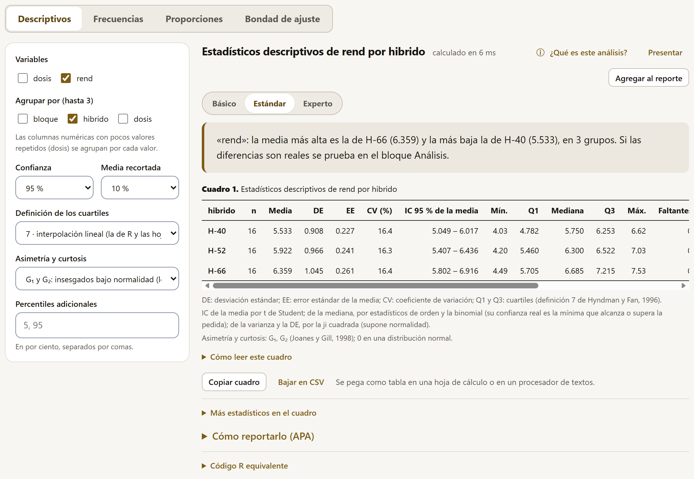
Figura 3.1. Descriptivos del rendimiento del maíz por híbrido. Al cargar datos, el bloque propone la primera respuesta numérica agrupada por el primer factor de tratamiento.
Resumen
Para qué
Sección
Descriptivos
Centro, dispersión y forma de variables numéricas, en total o por grupos, con el intervalo de la media, de la mediana y de la varianza.
3.3
Frecuencias
Cuántas observaciones hay de cada nivel de un factor, o de cada combinación de dos (tabla cruzada), en conteos o porcentajes.
3.4
Proporciones
Una proporción (germinación, incidencia, mortalidad) con su intervalo de confianza, por grupo, con seis métodos de intervalo.
3.5
Bondad de ajuste
Si unas frecuencias observadas siguen una proporción esperada (por ejemplo, la segregación 9:3:3:1).
3.6
Si en el bloque Datos hay un filtro activo, una nota arriba de las opciones lo recuerda: «Con el filtro del bloque Datos: se usan 27 de 48 filas». Sin datos cargados, el bloque ofrece ir a Datos y, para quien está planeando un ensayo, el botón Calcular un tamaño de muestra o una potencia, que no necesita datos (sección 4.22).
iExplorar describe; Análisis decide
Los resúmenes de este bloque dicen cómo son los datos, no si las diferencias entre grupos son reales. Que el híbrido H-66 tenga la media más alta es una descripción; que sea significativamente mayor que H-52 lo dice un análisis de varianza con su comparación de medias, en el bloque Análisis (capítulo 4). Por eso las conclusiones de Explorar terminan, cuando hay grupos, con «Si las diferencias son reales se prueba en el bloque Análisis».
3.2Cómo se lee un resultado
Todos los resultados de SigmaPro, aquí y en Análisis, tienen las mismas partes y en el mismo orden. Conviene conocerlas una vez:
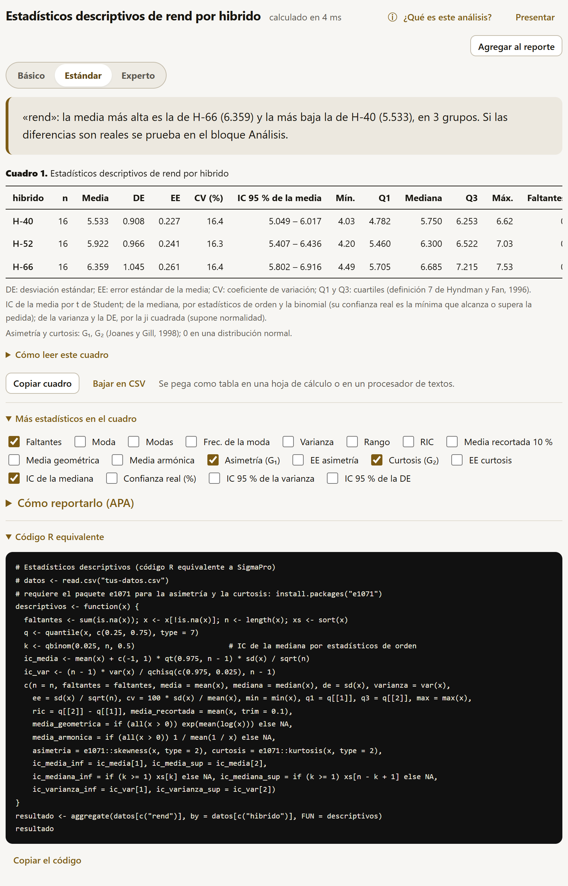
Figura 3.2. Un resultado con sus dos secciones plegables abiertas: más estadísticos y el código R.
Parte
Qué es
Título
Qué se calculó y sobre qué variables. Junto a él, el tiempo de cálculo en milisegundos.
Cambiar las opciones ↓
Lleva a las opciones del resumen; útil en una pantalla angosta, donde quedan debajo del resultado.
ⓘ ¿Qué es este análisis?
Abre la ficha del resumen en Fundamentos: para qué sirve, qué supone, qué datos necesita y cómo se lee (capítulo 9).
Agregar al reporte
Lleva el resultado al bloque Resultados (capítulo 5). El botón cambia a En el reporte ✓; el reporte guarda el análisis, no los números, y lo recalcula si los datos cambian.
Conclusión
El resultado en palabras, con las cifras que lo sostienen. Es lo primero que conviene leer.
Cuadro
Numerado y con sus notas al pie, en el formato de una revista: líneas solo arriba, abajo y bajo los encabezados; cifras alineadas; decimales según la precisión de los datos. Si es más ancho que la pantalla, se desplaza a los lados; con el teclado, Tab lo enfoca y las flechas lo recorren.
Botones de vista
Cuando un resultado tiene varios cuadros, unos botones eligen cuál se ve (por ejemplo, frecuencias o porcentajes).
Copiar cuadro
Copia el cuadro con todas sus cifras, listo para pegarse en una hoja de cálculo o en un procesador de textos.
Bajar en CSV
Guarda el cuadro como archivo CSV, con los valores sin redondear, para abrirlo en otro programa. El archivo va en UTF-8, así que los acentos llegan bien a una hoja de cálculo.
Más estadísticos en el cuadro
(En descriptivos.) Casillas que agregan columnas al cuadro.
Código R equivalente
El código que da los mismos números en R, con el botón Copiar el código. Empieza con un comentario sobre cómo leer los datos y los paquetes que pide.
3.3Estadísticos descriptivos
Describen una o varias variables numéricas, en total o por grupos. Las opciones:
Opción
Qué decide
Variables
Las columnas numéricas que se describen; una fila del cuadro por variable y grupo.
Agrupar por (hasta 3)
Los factores que forman los grupos. Una columna numérica con pocos valores repetidos (una dosis) se agrupa por cada valor. Con dos o tres factores, los grupos son sus combinaciones presentes.
Confianza
El nivel de los intervalos (90, 95 o 99 %).
Media recortada
La fracción que se quita de cada extremo para la media recortada (5, 10, 20 o 25 %).
Definición de los cuartiles
Las nueve definiciones de Hyndman y Fan (1996). La 7 (interpolación lineal) es la de R y de las hojas de cálculo; la 6 es la de muchos libros de texto. Con muestras grandes coinciden; con pocas observaciones pueden diferir un poco.
Asimetría y curtosis
Tres definiciones (Joanes y Gill, 1998): G₁ y G₂, insesgadas bajo normalidad y las de uso común; g₁ y g₂, de momentos; b₁ y b₂, corregidas por (n − 1)/n.
Percentiles adicionales
Otros percentiles que se agregan al cuadro, en por ciento y separados por comas (por ejemplo 5, 95).
Lo que trae el cuadro
El cuadro principal tiene, para cada variable y grupo: n, media, desviación estándar (DE), error estándar de la media (EE), coeficiente de variación (CV, en %), el intervalo de confianza de la media, el mínimo, los cuartiles Q1 y Q3, la mediana y el máximo. En Más estadísticos en el cuadro se pueden agregar: faltantes, moda (y cuántas modas hay y su frecuencia), varianza, rango, rango intercuartílico (RIC), media recortada, media geométrica, media armónica, asimetría y curtosis con sus errores estándar, el intervalo de la mediana con su confianza real, y los intervalos de la varianza y de la DE.
ΣLas fórmulas
Con n observaciones de media x̄ y desviación estándar s:
EE = s / √n · CV = 100 s / x̄ · IC de la media: x̄ ± t1−α/2; n−1 · EE
El intervalo de la mediana se forma con dos observaciones ordenadas, x(k) y x(n−k+1), con k tomado de la distribución binomial (n, ½); por eso su confianza real («Confianza real (%)») es la primera que alcanza o supera la pedida, no exactamente ella. El de la varianza sale de la ji cuadrada, (n − 1)s² / χ²; supone normalidad, y el de la DE es su raíz.
Las conclusiones
Sin grupos, la conclusión resume la variable: ««rend» (n = 48): media 5.938 (IC 95 %: 5.644 a 6.232), desviación estándar 1.013 y coeficiente de variación 17.1 %». Con grupos, dice cuál tiene la media más alta y cuál la más baja. Además, avisa en dos casos: cuando en un grupo de ocho o más observaciones la asimetría es mayor que el doble de su error estándar (señal de valores atípicos o de que conviene una transformación, sección 2.9), y cuando algunas filas quedaron fuera por no tener nivel en un factor de agrupación.
iEl CV en experimentos agrícolas
El CV de un grupo describe la variación de los datos crudos; mezcla la variación entre bloques y la del error. El CV que se publica para un ensayo es otro: el del análisis de varianza, calculado con el cuadrado medio del error (en el maíz, 3.6 % contra el 16 % de los datos crudos por híbrido). Ese lo da el análisis del diseño en el bloque Análisis.
3.4Tablas de frecuencias
Cuentan cuántas observaciones hay de cada nivel de un factor (Variable) o, con Cruzar con, de cada combinación de dos. La casilla Contar los faltantes como una categoría agrega una fila y una columna para las celdas vacías. Las columnas numéricas con pocos valores aparecen en las listas con la marca «(numérica)».
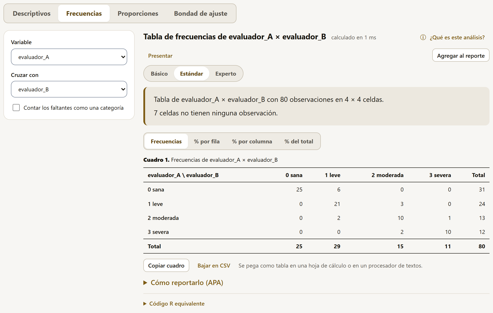
Figura 3.3. Las calificaciones de roya de los dos evaluadores, cruzadas. Las celdas de la diagonal son las hojas en que coincidieron.
Una tabla cruzada tiene cuatro vistas, que eligen sus botones: Frecuencias, % por fila (cada fila suma 100), % por columna y % del total. La conclusión dice el tamaño de la tabla y cuántas celdas no tienen ninguna observación. Una tabla de un solo factor trae, además del conteo, el porcentaje y los acumulados.
La tabla de frecuencias describe; para probar si dos factores están asociados (por ejemplo, si la germinación depende del tratamiento), o si dos evaluadores concuerdan, están la tabla de contingencia, la prueba de McNemar y Bowker y el kappa de Cohen, en el bloque Análisis (sección 4.14).
3.5Proporciones e intervalos
Una proporción se puede pedir de dos maneras, que eligen los botones de arriba de las opciones:
Categorías de un factor: la proporción de cada nivel de una variable categórica (por ejemplo, qué fracción de las hojas tiene cada grado de roya).
Éxitos sobre ensayos: dos columnas numéricas, una con los éxitos (semillas germinadas, plantas muertas, frutos dañados) y otra con los ensayos (semillas sembradas, plantas observadas). Las filas se suman dentro de cada grupo.
Por grupo calcula una proporción por nivel de un factor, y Confianza fija el nivel de los intervalos. En Intervalos se marcan los métodos que se quieren ver, una columna cada uno.
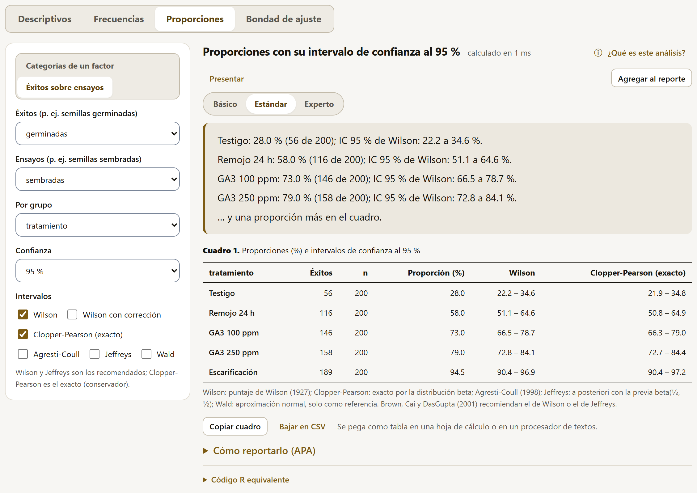
Figura 3.4. La germinación de cinco tratamientos (200 semillas cada uno), con los intervalos de Wilson y de Clopper-Pearson.
Intervalo
Cómo es
Wilson
Invierte la prueba de puntaje (Wilson, 1927). Su cobertura real queda muy cerca de la pedida aun con pocos ensayos o proporciones extremas. Recomendado.
Wilson con corrección
El de Wilson con corrección de continuidad: más ancho y conservador.
Clopper-Pearson (exacto)
Por la distribución beta. Garantiza al menos la confianza pedida, a cambio de ser más ancho de lo necesario.
Agresti-Coull
El de Wald con dos éxitos y dos fracasos agregados (Agresti y Coull, 1998); fácil de calcular a mano.
Jeffreys
El intervalo bayesiano con la previa beta(½, ½). Recomendado, con propiedades parecidas a las del de Wilson.
Wald
La aproximación normal de los libros, p̂ ± z√(p̂(1 − p̂)/n). Solo como referencia: con menos de 30 ensayos o proporciones cercanas a 0 o 1 falla, y la app lo advierte.
La recomendación de Wilson y Jeffreys viene de la revisión de Brown, Cai y DasGupta (2001), que compararon la cobertura real de estos intervalos. La conclusión muestra las primeras cuatro proporciones en palabras, con el intervalo de Wilson (si se quitó Wilson, con el del primer método marcado), y avisa cuántas más hay en el cuadro.
3.6Bondad de ajuste
La prueba ji cuadrada de bondad de ajuste dice si unas frecuencias observadas son compatibles con una proporción esperada. El caso clásico en agronomía es la segregación mendeliana: en la F2 de un dihíbrido se esperan los fenotipos en proporción 9:3:3:1.
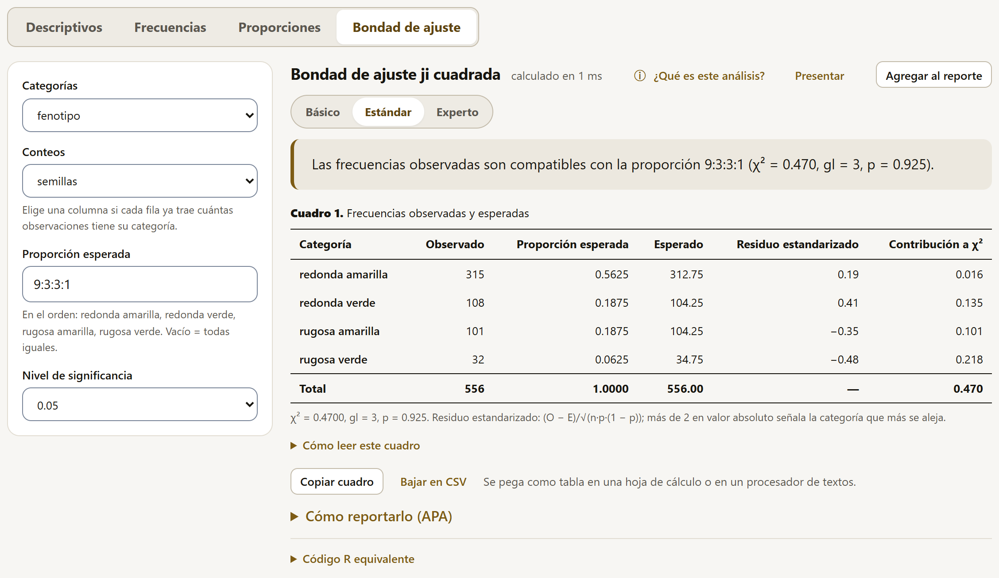
Figura 3.5. Las 556 semillas de Mendel (1866) contra la proporción 9:3:3:1: χ² = 0.470 con 3 grados de libertad, p = 0.925.
Opción
Qué decide
Categorías
La variable con las categorías (los fenotipos).
Conteos
Si cada fila ya trae cuántas observaciones tiene su categoría (como en el ejemplo de Mendel, con cuatro filas), la columna de los conteos. Si cada fila es una observación, se deja en «una fila por observación».
Proporción esperada
Una proporción por categoría, en el orden de los niveles que la ayuda muestra debajo, separadas por dos puntos: 9:3:3:1, 3:1, 1:2:1. También se aceptan decimales (0.5625:0.1875:0.1875:0.0625). Vacía, se prueban proporciones iguales.
Nivel de significancia
El α con el que la conclusión decide (0.05, 0.01 o 0.10).
El cuadro tiene, por categoría, lo observado, la proporción esperada, lo esperado (n × proporción), el residuo estandarizado y la contribución a χ²:
χ² = Σ (O − E)² / E, gl = k − 1, residuo = (O − E) / √(n p (1 − p))
Un residuo mayor que 2 en valor absoluto señala la categoría que más se aleja de lo esperado; cuando la prueba rechaza, la conclusión la nombra. Si alguna categoría espera menos de cinco observaciones, la aproximación ji cuadrada puede no ser buena, y la app lo advierte: conviene juntar categorías o usar una prueba exacta.
i«Compatible» no es «demostrado»
Un valor p alto dice que los datos no contradicen la proporción esperada, no que la prueben. Con pocas observaciones, la prueba no tiene poder para rechazar casi nada. Las 556 semillas de Mendel bastan para distinguir 9:3:3:1 de proporciones muy distintas, no de proporciones parecidas.
4
Bloque 4 · Análisis
Análisis: del diseño a la conclusión
El corazón de SigmaPro: 74 análisis en 17 familias, del análisis de varianza de un diseño experimental a los modelos mixtos, la supervivencia y las series de tiempo (los otros 4 resúmenes están en Explorar, capítulo 3). Se eligen con el asistente, en el catálogo o en el constructor de modelos, y todos responden igual: conclusión en palabras, cuadros, gráficas, supuestos, el código R que da los mismos números y su ficha en Fundamentos.
4.1Tres maneras de elegir un análisis
4.2El asistente
4.3El catálogo
4.4El constructor de modelos
4.5Cómo se lee un resultado
4.6El motor R dentro del navegador
4.7–4.11Supuestos, pruebas, diseños y medias
4.12–4.17Regresión, contingencia, mixtos y generalizados
4.18–4.24No lineal, multiambiente, multivariado, muestreo, supervivencia y series
4.1Tres maneras de elegir un análisis
Arriba del bloque, tres botones eligen cómo se llega al análisis. Las tres llevan al mismo lugar (el mismo método con las mismas opciones) y se puede pasar de una a otra en cualquier momento.
Manera
Para quién
Sección
Asistente
Para quien sabe qué quiere saber de su ensayo pero no qué análisis usar. Unas cuantas preguntas en lenguaje del campo (¿qué mediste?, ¿agrupaste en bloques?, ¿algún factor se aplicó a parcelas grandes?) y una recomendación con sus razones. Es el modo con que abre el bloque.
4.2
Catálogo
Para quien ya sabe qué análisis quiere: la lista completa, agrupada por familias, con el formulario de cada método.
4.3
Constructor de modelo
Para quien piensa en términos de modelo: se arrastran las variables a sus papeles (respuesta, factores, bloques, aleatorios, covariables…) y la app escribe la fórmula y elige el análisis. La fórmula también se puede escribir a mano.
4.4
Sin datos cargados, el bloque ofrece ir a Datos; los cálculos que no necesitan datos (tamaño de muestra, potencia, repeticiones) se abren desde Explorar con Calcular un tamaño de muestra o una potencia, que lleva a este bloque con Potencia y tamaño de muestra: medias (prueba t) ya elegido (sección 4.22). Si en Datos hay un filtro activo, todo el bloque trabaja con las filas que lo pasan.
4.2El asistente
El asistente hace las preguntas que haría un estadístico al ver un ensayo por primera vez, en orden, y solo las que hacen falta: cada respuesta decide la siguiente pregunta. A la derecha, la recomendación se actualiza con cada respuesta. Las respuestas vienen ya propuestas a partir de los datos (lo que la tarjeta de la sección 2.13 reconoce), así que muchas veces basta con revisarlas.
Figura 4.1. El asistente con el ensayo del maíz. Con las respuestas propuestas recomienda un factorial en bloques completos al azar.
Las preguntas
La primera pregunta, ¿Qué quieres saber?, abre uno de diez caminos:
Objetivo
Qué pregunta después y qué suele recomendar
Comparar tratamientos o grupos
La respuesta y su clase (continua, conteo, porcentaje, escala ordenada), los factores (hasta 3), los bloques (ninguno, en una dirección, en dos, incompletos), si hubo parcelas grandes o franjas, si hay una covariable medida antes del tratamiento, si se midió la misma unidad en varias fechas, si los bloques son aleatorios y cómo comparar (todos contra todos, contra un testigo, contrastes, o la curva de una dosis). Recomienda el diseño que corresponde (secciones 4.10 y 4.11), una ANCOVA, unas medidas repetidas, un modelo mixto, un modelo generalizado o una prueba no paramétrica.
Comparar genotipos en varios ambientes
Respuesta, genotipo, ambiente, repeticiones y qué interesa: el análisis conjunto, la estabilidad, AMMI o GGE (sección 4.20).
Relación entre variables numéricas
Si hay una respuesta que explicar: con un predictor, la forma (recta, curva, crecimiento, dosis-respuesta, meseta); con varios, todos, paso a paso, todas las combinaciones o una superficie de respuesta. Sin respuesta: una correlación, parcial si se descuentan otras variables (secciones 4.12, 4.13, 4.18 y 4.19).
Asociación entre categorías
Si son casos distintos, el mismo caso clasificado dos veces, dos evaluadores o una asociación en varios lotes, y si los datos ya vienen contados (sección 4.14).
Tiempo hasta un evento
El tiempo, el evento (1 sí, 0 censura), si se comparan grupos y si hay covariables: Kaplan-Meier o Cox (sección 4.23).
Una variable medida en el tiempo
La serie, el tiempo y qué interesa: tendencia, ciclo o autocorrelación (sección 4.24).
Varias respuestas a la vez
MANOVA o discriminante (sección 4.21).
Estimar la media o el total de una población muestreada
La variable y si hubo estratos (sección 4.22).
Planear un ensayo
Qué variable se medirá, para tomar su variación de los datos cargados: número de repeticiones o potencia (sección 4.22).
Solo describir los datos
Lleva al bloque Explorar (capítulo 3).
La recomendación
La tarjeta de la derecha trae el análisis recomendado y todo lo necesario para decidir si se acepta:
el título y, debajo, con qué nombre aparece en el catálogo;
una frase con lo que se va a analizar (2 factores cruzados (híbrido × dosis) sobre «rend»);
Por qué: las razones, en términos del ensayo (la variación entre bloques sale del error; «dosis» es numérica: se descompone en lineal y cuadrática);
Se revisará: los supuestos que el análisis pone a prueba, y un recuadro con qué hacer si fallan;
avisos, cuando algo de los datos merece atención;
los botones Usar y calcular, que abre el análisis en el catálogo ya con sus variables, y, cuando aplica, Ajustar en el constructor, que lo lleva al constructor de modelos (sección 4.4);
Después: los análisis que suelen seguir (la comparación de medias, la curva de la dosis, la revisión de los supuestos), cada uno como un botón que lo abre directamente.
Figura 4.2. Otro camino: tiempo hasta un evento. Con una covariable (el peso de la semilla), el asistente recomienda el modelo de Cox y deja las curvas de Kaplan-Meier para después.
iLas preguntas que más cambian el análisis
Dos preguntas merecen especial cuidado, porque los datos casi nunca las contestan (sección 2.13): si algún factor se aplicó a parcelas grandes (riego, labranza, fecha de siembra: entonces son parcelas divididas o franjas, y cada factor tiene su propio error) y si la misma unidad se midió varias veces (medidas repetidas). Responderlas mal no produce un error visible, sino pruebas F equivocadas.
La excepción son las parcelas: si la tabla trae una columna que las numera (parcela, subparcela, franja…), el asistente reconoce en los datos las parcelas divididas (un factor que no cambia dentro de cada parcela del bloque), las subdivididas y las franjas, las propone en su pregunta y en la recomendación dice lo que vio. Sin bloques, la parcela queda como la repetición de cada parcela grande. Lo que contestes en la pregunta manda. El ejemplo «Trigo: riego × variedad» viene así.
4.3El catálogo
El catálogo muestra los 74 análisis del bloque, agrupados en sus 17 familias, y dice cuáles se pueden hacer con la tabla cargada.
Arriba, dos tarjetas leen los datos:
Con tus datos: lo que hay en la tabla (filas, columnas numéricas, factores con sus niveles, bloques, parcelas, fechas, conteos, proporciones y columnas 0/1) y cuántos análisis se pueden hacer con ella (con el maíz, «Puedes hacer 57 de los 74 análisis del catálogo con esta tabla.»).
Recomendado para tus datos: el análisis que propone el asistente con lo que ve en la tabla, con su porqué y, en Después:, los análisis que suelen seguir, cada uno como un botón. Con las preguntas del asistente se afina la elección (sección 4.2).
Abajo, cada familia muestra sus análisis en tarjetas, con la ilustración del análisis, su nombre, para qué sirve y su estado: Listo con tus datos; Le falta, con lo que falta (con el maíz, la MANOVA dice «Falta: al menos dos respuestas numéricas.»); o No necesita datos. Los que corren en el motor R lo dicen (motor R, sección 4.6). El ícono ⓘ de cada tarjeta abre la ficha del análisis en Fundamentos (capítulo 9). Junto al nombre de cada familia se lee cuántos de sus análisis se pueden hacer (con el maíz, Diseños experimentales dice «8 de 9 con tus datos»).
Tres controles acotan la lista: la búsqueda por texto (Buscar: Tukey, bloques, conteos, regresión…), la casilla Solo los que puedo hacer con mis datos, que se recuerda, y el selector de familia (Todas las familias).
Un clic en una tarjeta abre el análisis: el catálogo se recoge en una barra con el Análisis elegido y el botón Ver el catálogo (74 análisis) para volver a abrirlo, y debajo aparecen, a la izquierda, su formulario (el modelo del experimento: qué columna es la respuesta, cuáles son los tratamientos, el bloque y las opciones) y, a la derecha, el resultado, que se recalcula al cambiar cualquier campo. Sin datos cargados, el catálogo solo ofrece los cálculos que no los necesitan: el tamaño de muestra y la potencia (sección 4.22).
Figura 4.3. El catálogo abierto con el ejemplo del maíz: arriba, lo que hay en los datos y la recomendación; abajo, las familias con sus tarjetas. Los descriptivos, frecuencias, proporciones y la bondad de ajuste están en Explorar (capítulo 3).
Al abrir un método, la app propone las variables de su formulario a partir de los datos (la respuesta, los factores, el bloque que reconoce), igual que el asistente. Con otra tabla, las propuestas se rehacen; con cambios en la misma tabla, se respetan las elecciones hechas.
!Solo se ofrece lo que está validado
Un método aparece en el catálogo solo si todos sus casos de validación contra R pasaron (capítulo 8). Si por alguna razón uno no estuviera validado, en su lugar se lee «Este análisis todavía no tiene su validación contra R aprobada». Es la regla de exactitud de la sección 1.2 aplicada a la interfaz.
Las secciones 4.7 a 4.24 recorren las familias en el orden del catálogo. Para cada método se explica para qué sirve, qué pide el formulario, qué entrega y cuál es su equivalente en R.
4.4El constructor de modelos
El constructor parte de una idea sencilla: un análisis es un modelo, y un modelo dice qué papel tiene cada variable. A la izquierda están las variables de la tabla; a la derecha, ocho zonas, una por papel. Debajo, la fórmula que resulta y el análisis que la app eligió para ella.
Figura 4.4. El constructor con el maíz. La app ya puso cada variable en su zona: la fórmula es rend ~ bloque + hibrido * dosis y el análisis, bloques completos al azar.
Poner cada variable en su zona
Hay tres formas, para que funcione con ratón, con teclado y en el celular:
arrastrar la variable de la lista a la zona;
elegirla en el menú Agregar… de cada zona;
con la variable enfocada (con Tab o un clic), pulsar la tecla de la zona: R, E, M, B, A, F, P o C. Supr la quita de su zona.
Una variable ya usada se ve atenuada en la lista; la ✕ de cada ficha la regresa. Las zonas que solo admiten numéricas (respuesta, evento, más respuestas, covariables) solo ofrecen esas en su menú.
Zona
Tecla
Para qué
Respuesta
R
La variable que se midió (o el tiempo hasta un evento).
Evento (0/1)
E
Con tiempo hasta un evento: 1 si ocurrió (germinó, murió), 0 si no (censura). Arma el modelo de Cox.
Más respuestas
M
Otras variables medidas en las mismas unidades, para analizarlas juntas (MANOVA).
Bloques o repeticiones
B
Uno (bloques completos), o dos (filas y columnas: cuadro latino).
Efectos aleatorios
A
Bloques, localidades o años vistos como muestra de muchos posibles: modelo mixto, en el motor R.
Factores de tratamiento
F
Los factores que se aplicaron; varios se cruzan (×).
Parcela grande
P
El factor que se aplicó a parcelas grandes (parcelas divididas); debe estar también en los factores.
Covariables
C
Numéricas medidas antes del tratamiento (ANCOVA) o predictores (regresión).
El selector Distribución de la respuesta dice cómo es la respuesta: Normal (una medida continua), Conteo (Poisson) o Positiva y asimétrica (gamma). Las dos últimas llevan a los modelos lineales generalizados (sección 4.17).
Qué análisis elige
La app lee las zonas y elige el análisis del catálogo que corresponde, con la misma lógica que un estadístico:
Si las zonas tienen…
…el análisis es
Factores, sin bloques
Completamente al azar (factorial si son varios)
Factores y un bloque
Bloques completos al azar
Factores y dos bloques (fila y columna)
Cuadro latino (hasta dos factores)
Dos factores, uno en parcela grande, y un bloque
Parcelas divididas (con dos bloques, en cuadro latino)
Tres factores, uno en parcela grande, y un bloque
Parcelas subdivididas
Solo covariables
Regresión lineal (con bloques, el modelo lineal general)
Factores y covariables (hasta 2 y 2, con un bloque como máximo)
ANCOVA
Algún efecto aleatorio
Modelo lineal mixto (motor R); con parcela grande, también su error (1 | bloque:parcela)
Distribución de conteo o gamma
Modelo lineal generalizado; con aleatorios, el generalizado mixto (de Poisson o gamma, en el motor R)
Un evento
Modelo de Cox (el bloque como estrato); sin factores ni covariables, Kaplan-Meier
Más respuestas
MANOVA (con el bloque y los factores cruzados)
Cualquier otra combinación (más de tres factores, covariables con parcelas…)
El modelo lineal general, con un aviso
Debajo de la fórmula, el recuadro del análisis lo nombra, explica la decisión («Factorial en bloques completos al azar: hibrido × dosis cruzados») y trae Usar y calcular, que lo abre en el catálogo con todo ya puesto.
Escribir la fórmula a mano
Editar la fórmula cambia la fórmula por un campo de texto con la notación de R. Mientras se escribe, la app explica cada término: qué variable es, si es un factor o una covariable, si es una interacción o un efecto anidado.
Figura 4.5. La fórmula escrita a mano, con la lectura de cada término.
Se escribe
Significa
a + b
Los efectos principales de a y b.
a * b
Cruza: a, b y su interacción a × b.
a:b
Solo la interacción.
a / b
Anida b dentro de a.
(a + b + c)^2
Los efectos principales y todas las interacciones dobles.
- 1
Quita la intercepción.
(1 | bloque)
Un efecto aleatorio: la fórmula se ajusta con el modelo mixto en el motor R.
Las casillas Numéricas que son tratamientos (factor) dicen qué columnas numéricas se tratan como factor (una dosis con cuatro niveles) y cuáles como covariable. Usar y calcular esta fórmula la analiza con el modelo lineal general (sin estratos de error: para unas parcelas divididas conviene el método propio) o, si tiene efectos aleatorios, con el modelo mixto; con distribución de conteo o gamma, con el modelo generalizado. Volver a la del constructor deshace lo escrito. Con un evento o con varias respuestas, la fórmula sale de las zonas y no se edita a mano.
Cuando el modelo no se puede armar
Si las zonas piden algo que ningún análisis de SigmaPro hace, el recuadro no ofrece un análisis sino el problema y su arreglo:
Figura 4.6. Varias respuestas con una covariable: la app explica que no hace MANCOVA y propone el arreglo.
4.5Cómo se lee un resultado
Los resultados del bloque Análisis tienen las partes de los de Explorar (sección 3.2) y algunas más. La figura 4.7 muestra la parte de arriba del análisis del maíz en bloques completos al azar.
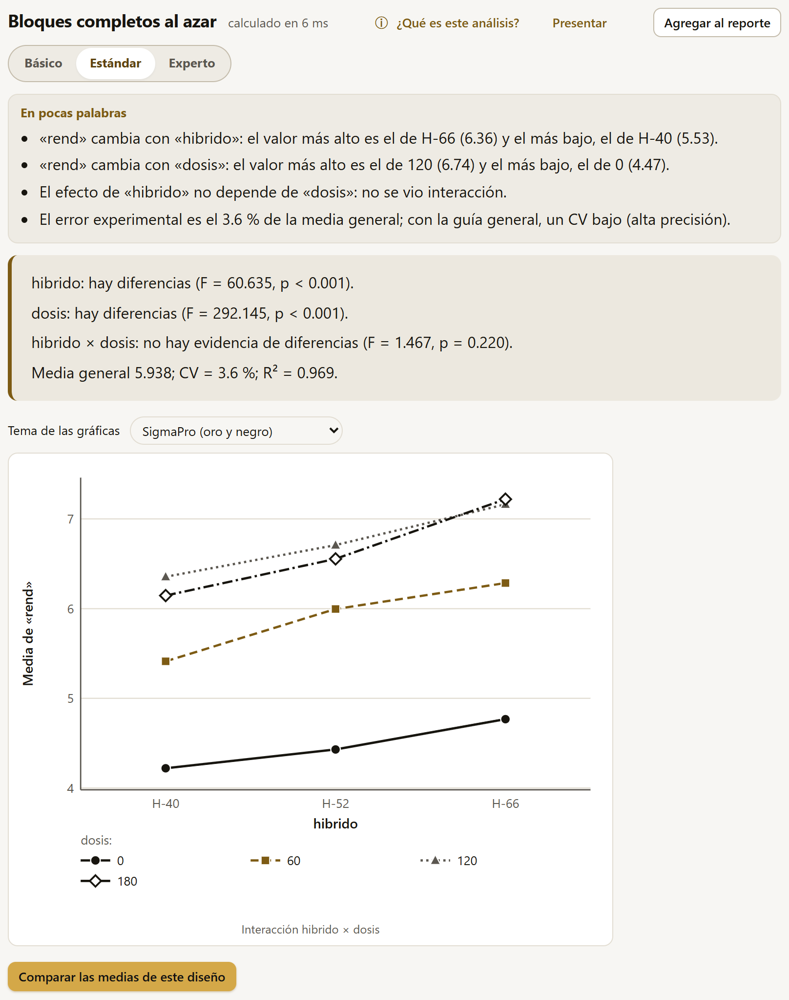
Figura 4.7. La parte de arriba de un resultado: título, conclusión, gráfica y el siguiente paso.
Parte
Qué es
Título
El análisis, con el tiempo de cálculo, ⓘ ¿Qué es este análisis?, que abre su ficha en Fundamentos (capítulo 9), y Agregar al reporte.
Conclusión
Una frase por efecto o por resultado clave, con su estadístico y su valor p: «hibrido: hay diferencias (F = 60.635, p < 0.001)». Al final, los indicadores de ajuste (media general, CV, R²).
Semáforo de los supuestos
En las pruebas que dependen de supuestos (pruebas t, regresión, ANCOVA, modelos generalizados…), un renglón por supuesto en verde, ámbar o rojo, con la prueba que lo decide (sección 4.7). En los diseños, el análisis de varianza no trae semáforo: sus supuestos se revisan con Revisar los supuestos del modelo (sección 4.7); en el reporte, los de completamente al azar y bloques completos al azar se revisan solos.
Gráficas
Las que corresponden al análisis: la interacción de dos factores, las medias con su error estándar, la recta de regresión con sus bandas, el diagnóstico de los residuos, las curvas de supervivencia… Arriba, el selector Tema de las gráficas cambia el estilo de todas a la vez (los seis temas están en el cuadro 6.1). Cada gráfica tiene su leyenda y el botón ✎ del editor de figuras (capítulo 6).
Siguiente paso
Botones que llevan al análisis que suele seguir: Comparar las medias de este diseño en los diseños, Analizar el modelo elegido tras una selección de variables, el CSV para otras apps en el multivariado.
Cuadros
Numerados, cada uno con Copiar cuadro y Bajar en CSV (con los números completos, sin el redondeo de la pantalla): el análisis de varianza, el resumen del ensayo, las medias, las comparaciones… Un cuadro más ancho que la pantalla se desplaza a los lados; con el teclado, Tab lo enfoca y las flechas lo recorren.
Código R equivalente
Plegado al final, con Copiar el código.
Continúa en la suite LABG
Al pie de algunos análisis, una franja con la app de la suite que continúa el trabajo: AgriDesign tras un diseño experimental, CorrelationPro y PCAPro tras una correlación o una regresión, PCAPro y ClusteringPro tras el multivariado o el multiambiente. Cada tarjeta dice por qué conviene y se puede ocultar (capítulo 10).
Figura 4.8. Los dos primeros cuadros del mismo análisis: el ANOVA y el resumen del ensayo. Siguen las medias marginales de cada factor y de sus combinaciones.
iEl párrafo para la tesis está en el reporte
En el bloque Análisis el resultado se explora: se cambian opciones, se prueban modelos. Al agregarlo al reporte (capítulo 5), SigmaPro le suma lo que pide un documento: el párrafo de métodos y resultados con la cita de cada prueba, los detalles técnicos y la numeración de cuadros y figuras de todo el reporte.
4.6El motor R dentro del navegador
Casi todos los análisis de SigmaPro están programados en el propio núcleo de la app, en JavaScript, y validados contra R. Unos cuantos, los que piden la maquinaria de ajuste de los modelos mixtos, corren en un R completo que funciona dentro del navegador (webR, R compilado a WebAssembly): los modelos lineales mixtos y sus diseños (sección 4.15), las medidas repetidas y los modelos lineales generalizados mixtos (sección 4.17). Los datos tampoco salen del equipo: R corre en la misma pestaña.
Figura 4.9. La primera vez que se usa un análisis del motor R, la app pide permiso antes de descargarlo.
La primera vez, en lugar del resultado aparece el aviso de la figura 4.9. Cargar el motor R y calcular descarga R y sus paquetes (unos 25 MB) y calcula.
Mientras tanto, arriba del resultado se lee cada paso («Descargando el motor R (la primera vez tarda más)…», «Instalando lme4 en el motor R (solo la primera vez)…», «Calculando en el motor R…») y un botón Cancelar. La primera carga tarda de unos segundos a un par de minutos, según la conexión; un cálculo, unos segundos.
Después, el motor queda en la caché del navegador: ya no hace falta internet ni vuelve a preguntar.
Cuando SigmaPro se usa publicado en una página web (no con doble clic), trae su propio repositorio del motor R y funciona sin internet desde la primera visita (introducción I.7).
4.7Los supuestos del modelo
El análisis de varianza, las comparaciones de medias y la regresión descansan en supuestos sobre los residuos (lo que el modelo no explica): que se distribuyan como una normal, que tengan la misma varianza en todos los tratamientos, que sean independientes entre sí y que ninguno sea extremo. Revisar los supuestos del modelo, el primer método del catálogo, los pone a prueba todos a la vez y dice qué hacer si alguno falla.
Opción
Qué decide
Variable de respuesta
La respuesta del modelo.
Tratamientos (hasta 3, cruzados)
Los factores; las varianzas se comparan entre sus combinaciones.
Bloques
El bloque, si lo hay (— sin bloques — si no). Con bloques se revisa además la aditividad bloque × tratamiento.
Orden para la independencia
En qué orden se buscan residuos vecinos parecidos: — el de las filas — o el de una columna numérica o de fechas (la posición en el campo, la fecha de medición).
Nivel de significancia
El α de las pruebas (0.05, 0.01 o 0.10), que también fija los cortes de los colores del semáforo.
La revisión ajusta el modelo respuesta ~ bloque + A * B * C con lo elegido; la cabecera del resultado lo escribe, con el número de residuos (n), y una línea avisa cuántas filas con algún faltante no entran.
Figura 4.10. Los supuestos del ensayo del maíz se cumplen: los cinco renglones del semáforo en verde.
iQué modelos revisa
La revisión admite tratamientos y un solo factor de bloque: revisa bien los diseños completamente al azar, en bloques y sus factoriales. En un cuadro latino (pon una de las dos direcciones en Bloques), un látice o unas parcelas divididas la revisión es aproximada, porque no separa los otros bloqueos ni el error de la parcela grande; tampoco acepta covariables. Al agregar al reporte (capítulo 5) un diseño completamente al azar o en bloques completos, el reporte le agrega por su cuenta el semáforo de esta revisión, con el mismo modelo. La ficha de cada análisis en Fundamentos (capítulo 9) dice, supuesto por supuesto, cómo revisarlo aquí y qué alternativa usar si falla.
El semáforo
Arriba del resultado, un renglón por supuesto, cada uno con su color, su estado y una frase con la prueba que lo decide. El color global es el del peor renglón: Los supuestos se cumplen, Hay supuestos que revisar o Hay supuestos que no se cumplen.
Supuesto
Prueba que decide
También se calculan
Normalidad de los residuos
Shapiro-Wilk (de 3 a 5000 residuos; con más, Anderson-Darling)
Lilliefors, Anderson-Darling; la asimetría G₁ y la curtosis G₂
Varianzas iguales entre tratamientos
Brown-Forsythe (Levene con la mediana)
Levene, Bartlett (sensible a la falta de normalidad), Fligner-Killeen (por rangos); cuántas veces es la mayor varianza la menor
Aditividad bloque × tratamiento
No aditividad de Tukey (con bloques)
—
Independencia de los residuos
Durbin-Watson, contra la autocorrelación positiva; p exacto con menos de 100 residuos
Rachas arriba y abajo de la mediana (p exacto con menos de 30 residuos)
Valores atípicos
El mayor residuo estudentizado, con p de Bonferroni
—
Los colores siguen el valor p de la prueba principal y el α elegido: verde si p ≥ α (BIEN), ámbar si queda entre α/5 y α (REVISAR) y rojo si p < α/5 (PROBLEMA). Con α = 0.05, los cortes son 0.05 y 0.01. Un renglón en gris dice NO APLICA (la aditividad sin bloques; las varianzas sin tratamientos o con algún tratamiento de una sola observación) o que hay muy pocas observaciones para la prueba.
La normalidad tiene una excepción: con 50 residuos o más y una forma casi normal (|G₁| < 0.5 y |G₂| < 1), el renglón no pasa de ámbar aunque la prueba rechace, y su frase dice que la desviación es pequeña. Con tantos datos cualquier desviación resulta significativa y el análisis de varianza la tolera.
Qué hacer
Debajo del semáforo, el recuadro Qué hacer traduce el resultado en acciones concretas. Cada recomendación aparece solo cuando se cumple su condición:
Cuándo
Qué propone
Todo en verde
Que el análisis de varianza y las comparaciones de medias serán confiables.
Falla la normalidad o las varianzas y la respuesta es positiva
La transformación de Box-Cox estimada con el mismo modelo (λ con su intervalo de 95 %) y la transformación sencilla que le corresponde (raíz cuadrada, logaritmo, recíproco de la raíz, recíproco…), para hacerla en el bloque Datos (sección 2.9) y volver a revisar.
Falla la normalidad o las varianzas y la respuesta son conteos (enteros no negativos)
√(x + 0.5), o un modelo de Poisson o binomial negativo (sección 4.17).
Falla la normalidad o las varianzas y la respuesta es un porcentaje (el nombre de la columna lo dice y los valores van de 0 a 100)
El arcoseno de la raíz, o un modelo binomial con el total de cada fila (sección 4.17).
Varianzas distintas con un solo factor y sin bloques
Comparar las medias con Games-Howell (sección 4.11) o usar Kruskal-Wallis (sección 4.9): ninguna supone varianzas iguales.
Varianzas distintas con varios factores o bloques, sin Box-Cox posible
Transformar la respuesta; un modelo con varianzas distintas por tratamiento aún no está en SigmaPro.
Falla solo la normalidad
Con 30 residuos o más, que el análisis de varianza es robusto a esa falta de normalidad; con menos, comparar con Kruskal-Wallis o, con bloques, Friedman (sección 4.9).
Falla la aditividad
El logaritmo (vuelve aditivo un efecto multiplicativo) o, con repeticiones dentro de cada bloque, incluir la interacción en el modelo.
Falla la independencia
Revisar el orden de las filas; bloques más chicos (el análisis espacial aún no está en SigmaPro).
Hay un atípico
Revisar esa fila: primero que no sea un error de captura; si el valor es real, analizar con y sin ella y reportarlo.
Con los venenos de Box y Cox, por ejemplo, la normalidad y las varianzas fallan y hay un residuo atípico (figura 4.11): la app estima la transformación de Box-Cox con ese mismo modelo (λ = −0.816, intervalo de −1.294 a −0.341), sugiere el recíproco y recuerda que la columna original no cambia; para la fila 24, propone revisar primero que no sea un error de captura. Si se revisa solo el veneno, sin el tratamiento, el modelo queda de un factor y las varianzas salen en ámbar (Brown-Forsythe, p = 0.021): entonces el recuadro agrega Games-Howell y Kruskal-Wallis.
Figura 4.11. El caso contrario: los tiempos de supervivencia de los venenos no cumplen los supuestos, y la app propone el recíproco.
Las gráficas y el cuadro
Q-Q normal de los residuos estandarizados: si los residuos son normales, los puntos siguen la diagonal. La banda sombreada es la región de confianza; los puntos que salen de ella van marcados y los más alejados llevan su número de fila.
Residuos contra valores ajustados: debe verse una nube sin forma. Un embudo (más dispersión con valores mayores) delata varianzas desiguales; las líneas en ±2 señalan los residuos grandes.
Residuos en el orden de las filas o de la columna elegida: rachas largas de un mismo signo delatan dependencia (parcelas vecinas parecidas).
Arriba de las tres gráficas está el selector Tema de las gráficas, el mismo de los demás resultados (cuadro 6.1). Este resultado no lleva la franja de la suite LABG al pie: ninguna app de la suite continúa la revisión de los supuestos.
El cuadro 1 trae todas las pruebas, con su estadístico, su valor, sus grados de libertad, su p y qué revisa; la principal de cada supuesto va marcada como «(principal)», y la nota recuerda los cortes del semáforo. En Varianza de los residuos por tratamiento (plegado) está la varianza de cada combinación, para ver cuál es la que se aparta.
Figura 4.12. El cuadro de las pruebas, con la principal de cada supuesto marcada.
ΣPor qué Brown-Forsythe y no Bartlett
La prueba de Bartlett es muy sensible a la falta de normalidad: con residuos de colas pesadas rechaza la igualdad de varianzas aunque las varianzas sean iguales. La de Brown-Forsythe (la de Levene con la mediana en lugar de la media) es robusta a eso, y por eso decide el renglón; Bartlett queda en el cuadro como referencia. Por una razón parecida, con datos muy grandes conviene mirar las gráficas además de los valores p: con miles de residuos, desviaciones mínimas de la normal ya resultan significativas (de ahí la excepción de la normalidad con 50 residuos o más).
4.8Pruebas t
La Prueba t compara medias en tres situaciones, que elige Tipo de comparación:
Tipo
Qué pide
Ejemplo
Dos grupos independientes
La Variable de respuesta, la Columna de los grupos y, si esa columna tiene más de dos niveles, los que se comparan en Grupo 1 y Grupo 2.
Tiempo de supervivencia con los tratamientos A y B.
Mediciones pareadas
La Primera medición y la Segunda medición, dos columnas medidas en las mismas unidades (cada fila, una unidad); se compara primera − segunda.
Altura de la misma planta a los 15 y a los 30 días.
Una muestra contra un valor
La Variable y el Valor de referencia (μ₀).
¿La germinación media difiere del 50 %?
Las demás opciones: la Diferencia bajo H₀ (en dos grupos y en pareadas; normalmente 0), la Hipótesis alternativa (Bilateral (≠), Menor (<) o Mayor (>)), el Nivel de confianza del intervalo (95, 99 o 90 %), el Nivel de significancia y, con dos grupos, la casilla Suponer varianzas iguales (t de Student). Sin marcar, se usa la t de Welch, que no supone varianzas iguales y es la recomendada: con varianzas iguales da casi lo mismo que la de Student, y con varianzas distintas sigue siendo válida.
Figura 4.13. La t de Welch: el tratamiento B prolonga la supervivencia frente a A. La gráfica muestra cada valor, la caja de cuartiles y la media (rombo).
El resultado trae:
la conclusión con las dos medias, la diferencia y su intervalo, y t, gl y p;
el tamaño del efecto en palabras, según la g de Hedges y la guía de Cohen: muy pequeño (menos de 0.2), pequeño (desde 0.2), mediano (desde 0.5) o grande (desde 0.8). En pareadas se calcula sobre las diferencias (dz) y en una muestra, contra el valor de referencia;
el semáforo: la normalidad de cada grupo (o de las diferencias, en pareadas) por Shapiro-Wilk y, con dos grupos, la comparación de las varianzas con la prueba F. Con la t de Welch, ese renglón (Varianzas (t de Welch)) queda en verde aunque las varianzas difieran, porque Welch no las supone iguales; con la de Student (Varianzas iguales) se colorea según la F y, si difieren, aconseja Welch;
la gráfica de los valores de cada grupo (en pareadas, de las diferencias), con la caja de cuartiles y la media; en pareadas y en una muestra, una línea discontinua marca el valor de referencia;
los cuadros: la prueba elegida (con dos grupos, la otra t abajo como referencia), las medias y desviaciones, y el tamaño del efecto: la d de Cohen y la g de Hedges (la d corregida por el sesgo de las muestras chicas), con intervalos por la t no central (Steiger y Fouladi, 1997).
Con los tratamientos A y B de los venenos, las varianzas difieren mucho (F = 0.102, p < 0.001). Con Welch, la prueba usa 13.21 gl (p = 0.002) y el renglón de las varianzas dice que sigue siendo válida; si se marca la casilla de Student, la prueba usa 22 gl (p = 0.001) y el mismo renglón sale en rojo con «Conviene la t de Welch, que no las supone iguales».
iUna prueba t no es para más de dos tratamientos
Con tres tratamientos o más, comparar de dos en dos con pruebas t infla la probabilidad de encontrar diferencias que no existen. El camino es el análisis de varianza del diseño (sección 4.10) seguido de una comparación de medias que controle ese error (sección 4.11).
4.9Pruebas no paramétricas
Cuando los datos no cumplen la normalidad y una transformación no la logra, o cuando la respuesta es una escala ordenada (daño de 1 a 5, una calificación), las pruebas de rangos comparan grupos sin suponer una distribución. Ordenan todos los valores y trabajan con su posición. SigmaPro calcula sus distribuciones exactas cuando el tamaño lo permite, como R. Ninguna de las tres trae semáforo.
Prueba
Equivale a
Cuándo
Wilcoxon y Mann-Whitney
La prueba t
Dos grupos independientes (suma de rangos, Mann-Whitney), dos mediciones pareadas o una muestra contra un valor (rangos con signo).
Kruskal-Wallis
El ANOVA completamente al azar
Tres o más tratamientos sin bloques.
Friedman
El ANOVA en bloques
Tres o más tratamientos con un dato de cada uno en cada bloque (parcela, juez, fecha).
Wilcoxon y Mann-Whitney
El formulario es el de la prueba t (sin la casilla de las varianzas), con dos opciones más: Valor p (Exacto si se puede, Exacto o Aproximación normal) y Corrección por continuidad, marcada de entrada, para la aproximación normal. Con Exacto si se puede, el p exacto se usa con menos de 50 datos por grupo y sin empates (ni diferencias iguales al valor de referencia, en los rangos con signo), como en R; con empates la app usa la aproximación normal aunque se pida el exacto, y la nota del cuadro dice cuál se usó.
El resultado da el estadístico (W en dos grupos, V en pareadas y una muestra), el p y, como medida del efecto, el estimador de Hodges-Lehmann del desplazamiento entre los grupos (la mediana de todas las diferencias entre un valor de cada grupo; en pareadas y una muestra, la seudomediana) con su intervalo, más un cuadro de medianas y cuartiles y una gráfica de cajas. Si con tan pocos datos el intervalo no alcanza la confianza pedida, una nota dice cuál alcanza. Con los tratamientos A y B de los venenos, que tienen empates: W = 20.5, p = 0.003, y un desplazamiento de −0.360 (IC 95 %: −0.610 a −0.090), con la aproximación normal corregida por continuidad y por empates.
Kruskal-Wallis
Figura 4.14. Kruskal-Wallis con los tres venenos: el veneno III acorta la supervivencia frente a I y II (letras distintas).
Se eligen la Variable de respuesta, los Tratamientos, el método de Comparaciones por pares (Dunn, Conover-Iman o Nemenyi) y el Ajuste de los valores p por las comparaciones múltiples: Holm (de entrada), Bonferroni, Benjamini-Hochberg (FDR) o Sin ajuste; con Conover-Iman, también Tukey (un paso). Nemenyi no pide ajuste: su p ya sale del rango estudentizado. El resultado da H con sus grados de libertad y su p (corregido por empates), el tamaño del efecto η² de H, y las comparaciones: el cuadro Tratamientos ordenados por rango medio, con la mediana, los cuartiles y sus letras (tratamientos con una letra en común no difieren), que también aparecen sobre la gráfica, y el de cada par, con la diferencia de rangos medios, el estadístico, el p sin ajustar y el ajustado.
Friedman
Pide además la columna de los Bloques, con un dato por tratamiento en cada bloque. Las comparaciones por pares pueden ser de Conover, Nemenyi o Wilcoxon pareada, con los mismos ajustes; Tukey (un paso) solo con Conover. Además de χ² y su p, da la W de Kendall, la concordancia entre bloques (de 0, ninguna, a 1, todos los bloques ordenan igual a los tratamientos), y el cuadro de los tratamientos ordenados por su suma de rangos, con sus letras.
Los datos tienen que formar una tabla completa de bloques por tratamientos:
Un bloque con la respuesta vacía en algún tratamiento queda fuera, como en R, y una nota dice cuántos. Con los trips del aguacate, dos de los seis bloques tienen una parcela sin dato: la prueba usa los otros cuatro (χ² = 8.308, gl = 4, p = 0.081; W = 0.519) y la gráfica muestra solo esos bloques.
Si falta la fila de alguna combinación de bloque y tratamiento, la app se detiene: «Friedman necesita los mismos tratamientos en todos los bloques, y faltan combinaciones».
Si un tratamiento tiene más de un dato en un bloque (repeticiones, o un factorial en bloques), también se detiene, y propone promediar las repeticiones de cada tratamiento en cada bloque en la hoja de cálculo, importar esa tabla de medias y volver a intentarlo. Es lo que pasa con el maíz si se piden los híbridos en bloques: cada bloque tiene cuatro parcelas de cada híbrido, una por dosis.
iLo que se pierde con los rangos
Las pruebas de rangos dicen si un grupo tiende a tener valores más altos que otro, no cuánto difieren sus medias, y con datos normales tienen algo menos de potencia que el ANOVA. Antes de recurrir a ellas conviene intentar la transformación que sugiere la revisión de los supuestos (sección 4.7), o un modelo lineal generalizado si la respuesta es un conteo o una proporción (sección 4.17).
4.10Diseños experimentales
El análisis de varianza de un diseño experimental separa la variación de la respuesta en la que se debe a los tratamientos, la que se debe a la forma en que se acomodó el ensayo (bloques, filas, columnas, parcelas grandes) y la que queda sin explicar (el error). Cada diseño tiene su modelo y, en algunos, más de un error. SigmaPro trae los ocho diseños más usados en la investigación agrícola y, para lo que no encaja en ellos, el modelo lineal general.
Diseño
Modelo
Cuándo
Completamente al azar
y ~ A * B * C
Unidades homogéneas (macetas en cámara, cajas de germinación); hasta tres factores cruzados.
Bloques completos al azar
y ~ bloque + A * B * C
El más común en campo: cada bloque tiene todos los tratamientos y agrupa parcelas parecidas.
Cuadro latino
y ~ fila + columna + A * B
Variación en dos direcciones (pendiente y fertilidad); cada tratamiento una vez en cada fila y en cada columna.
Parcelas divididas
Error(bloque/A)
Un factor que solo se puede aplicar a parcelas grandes (riego, labranza, fecha de siembra) y otro dentro de ellas.
Parcelas subdivididas
Error(bloque/A/B)
Tres factores, cada uno en parcelas más chicas que el anterior.
Parcelas en franjas
Error(bloque/(A + B))
Dos factores aplicados en franjas que se cruzan (labranza en un sentido, riego en el otro).
Bloques incompletos balanceados
y ~ bloque + trat
Más tratamientos que parcelas por bloque, con cada par de tratamientos juntos el mismo número de veces.
Látice y alfa-látice
y ~ rep + rep:bloque + trat
Muchos genotipos (mejoramiento): bloques incompletos dentro de repeticiones completas.
Modelo lineal general
La fórmula que se escriba
Lo que no encaja en los anteriores: anidados, covariables con interacciones, factores extra.
El formulario
Todos piden la Variable de respuesta y los papeles del diseño. Cada campo se llama como en pantalla:
Diseño
Papeles
Completamente al azar, bloques
Factores de tratamiento (hasta 3, cruzados); en bloques, además, Bloques.
Cuadro latino
Factores de tratamiento (hasta 2), Filas y Columnas.
Parcelas divididas
Las parcelas grandes están en (bloques completos al azar, un diseño completamente al azar o un cuadro latino), Factor de la parcela grande, Factor de la subparcela y, según dónde estén las parcelas grandes, Bloques, la Repetición de la parcela grande (el número de cada parcela grande dentro de su tratamiento) o Filas y Columnas.
Parcelas subdivididas
Factor de la parcela grande, Factor de la subparcela, Factor de la sub-subparcela y Bloques.
Parcelas en franjas
Factor en franjas horizontales, Factor en franjas verticales y Bloques.
Bloques incompletos balanceados
Tratamientos (un factor) y Bloques.
Látice y alfa-látice
Tratamientos (un factor), Repeticiones y Bloques incompletos (dentro de cada repetición).
Una columna numérica con pocos valores (una dosis) aparece marcada «(numérica)» y se usa como factor. El completamente al azar, los bloques y el cuadro latino ofrecen además las Sumas de cuadrados (Tipo III (medias marginales), Tipo II (marginalidad) o Tipo I (secuenciales)); los bloques incompletos usan siempre las secuenciales (más abajo), y todos piden el Nivel de significancia. Cuando una columna identifica las parcelas, el asistente (sección 4.2) reconoce en los datos las parcelas divididas, subdivididas y en franjas y las propone.
ΣLos tres tipos de suma de cuadrados
Con datos balanceados (el mismo número de observaciones en cada combinación), los tres tipos dan lo mismo y la nota del cuadro lo dice. Con datos desbalanceados (parcelas perdidas, tratamientos con distinto número de repeticiones), cada tipo prueba una hipótesis distinta:
Tipo I (secuencial): cada término ajustado por los que van antes; el orden importa.
Tipo II (marginalidad): cada término ajustado por los demás que no lo contienen; es la más potente si no hay interacción.
Tipo III (medias marginales, la opción por omisión): cada término ajustado por todos los demás, con contrastes de suma cero; prueba las medias marginales con pesos iguales, que es lo que casi siempre se quiere en un experimento.
Lo que trae el resultado
La conclusión por efecto («hibrido: hay diferencias (F = 60.635, p < 0.001)») y los indicadores del ensayo: media general, coeficiente de variación (uno por error en los diseños con estratos: CV(a), CV(b)…) y, con un solo error, R².
La gráfica: con un factor, cajas con los puntos de cada tratamiento y su media; con dos o más, la gráfica de interacción de los dos primeros, una línea por nivel del segundo (figura 4.7). Arriba de ella está el selector Tema de las gráficas (sección 4.5).
El botón Comparar las medias de este diseño, que abre la comparación de medias (sección 4.11) con el mismo diseño y las mismas variables.
Los cuadros: el análisis de varianza; el resumen del ensayo (media general, observaciones, CV, R² y la eficiencia relativa, si aplica); las medias de cada factor y de las combinaciones de los dos primeros; y, con dos o más factores en un diseño de un solo error, los efectos simples: la prueba F de cada factor dentro de cada nivel del otro. Con un solo error las medias son las marginales estimadas, con su error estándar (una media que no se puede estimar sale como «—»); en los diseños con estratos son los promedios de cada nivel, con su número de datos.
Al pie de los ocho diseños (no del modelo lineal general), la franja Continúa en la suite LABG sugiere AgriDesign, que genera la aleatorización, el croquis y la hoja de campo del diseño antes de sembrar; con datos cargados, su botón Enviar datos a AgriDesign descarga la tabla y abre la app (capítulo 10).
Con dos o más factores, si la interacción es significativa la conclusión lo advierte. En los diseños de un solo error remite a los efectos simples y a las medias de las combinaciones; en los diseños con estratos, que no tienen el cuadro de efectos simples, dice que se compare un factor dentro de cada nivel del otro en Comparaciones de medias, con Dentro de cada nivel de (sección 4.11).
La eficiencia relativa
El resumen del ensayo dice cuánto ganó el ensayo por bloquear (Gomez y Gomez, 1984), en por ciento y con el factor de ajuste por grados de libertad cuando el error tiene menos de 20:
En bloques completos al azar, frente a completamente al azar. En el maíz es de 160 %: un diseño completamente al azar habría necesitado 60 % más repeticiones para la misma precisión. No se calcula con parcelas perdidas ni con bloques generalizados.
En el cuadro latino, tres: frente a completamente al azar, frente a bloques con las filas como bloques y frente a bloques con las columnas como bloques. Con las filas como bloques, la variación entre columnas pasaría al error: por eso esa eficiencia depende del cuadrado medio de las columnas (y la otra, del de las filas). En el trigo, con las hileras como filas: 128.4 % frente a completamente al azar, 111.1 % con las hileras como bloques y 123.7 % con las columnas como bloques; bloquear solo por columnas habría perdido más. Se calcula con el cuadro completo (t² parcelas).
Algunas situaciones se reconocen solas y se explican en un aviso: más de una parcela por tratamiento en cada bloque (bloques generalizados: se estima la interacción bloque × tratamiento), combinaciones de bloque y tratamiento perdidas (las medias se ajustan), celdas vacías (la suma de cuadrados tipo III no existe y se usa la II) o un término confundido con otro.
Parcelas divididas, subdivididas y en franjas
En estos diseños cada factor se aplicó a unidades de distinto tamaño, así que cada uno tiene su propio error: el factor de la parcela grande se prueba contra el error a y el de la subparcela y la interacción contra el error b (la variación dentro de las parcelas grandes). El error a es bloque × parcela grande con las parcelas grandes en bloques, parcela grande × repetición si están al azar y fila × columna si están en cuadro latino. La nota del cuadro dice contra qué error se prueba cada término, y los bloques no se prueban porque su estrato no tiene error propio. Analizar estos ensayos como un factorial común usaría un solo error y daría pruebas F falsas, casi siempre a favor del factor de la parcela grande.
Figura 4.15. La avena de Yates (1935) en parcelas divididas: el nitrógeno, en las subparcelas, tiene un efecto claro; las variedades, en las parcelas grandes, se prueban contra el error a, con solo 10 grados de libertad.
Las subdivididas agregan un tercer estrato (Error(bloque/A/B), con errores a, b y c) y las franjas tienen tres errores: el a para el factor de las franjas horizontales (bloque × A), el b para el de las verticales (bloque × B) y el c para su interacción. Con el maíz acomodado en franjas, por ejemplo, los errores a, b y c tienen 6, 9 y 18 grados de libertad. En las subdivididas, el cuadro de medias de las combinaciones y la gráfica de interacción muestran solo los dos primeros factores (A × B); las demás interacciones se estudian en Comparaciones de medias.
El ejemplo Arroz: riego × variedad × nitrógeno (parcelas subdivididas), ficticio y para practicar, lo muestra (figura de abajo): el riego, en las parcelas grandes, se prueba con solo 2 grados de libertad del error a (F = 95.839, p = 0.010); la interacción riego × nitrógeno es significativa (F = 23.273, p < 0.001), y la conclusión pide comparar un factor dentro de cada nivel del otro; la gráfica y el cuadro de las combinaciones, en cambio, muestran riego × variedad. Los coeficientes de variación bajan del error a al c: 8.5, 3.1 y 2.2 %. Para las parcelas divididas hay otro ejemplo de práctica, Trigo: riego × variedad (parcelas divididas).
Figura 4.16. Las parcelas subdivididas del arroz (datos ficticios): un error por estrato. La interacción riego × nitrógeno es significativa y la conclusión manda a compararlos dentro de cada nivel. La gráfica de la interacción, que la app muestra entre la conclusión y el cuadro, se omite aquí.
Con datos desbalanceados (parcelas perdidas o sobrantes), las pruebas F de los estratos dejan de ser exactas y la app lo advierte; en ese caso conviene el modelo mixto de la sección 4.15, que maneja el desbalance. Si un término del error queda confundido con otro, un aviso dice que el modelo de error es singular.
Bloques incompletos: BIB, látice y alfa-látice
Cuando hay más tratamientos que parcelas caben en un bloque homogéneo, cada bloque recibe solo algunos. El análisis intrabloque compara los tratamientos dentro de los bloques: su suma de cuadrados es secuencial (tipo I), con los tratamientos al final, ajustados por los bloques, y sus medias son medias ajustadas. La nota del cuadro lo recuerda. La F de los bloques, en cambio, no está ajustada por los tratamientos y solo es un indicio.
En los bloques incompletos balanceados, el resumen del ensayo trae además el factor de eficienciaE = λt/(rk) y λ, las veces que coincide cada par de tratamientos en un bloque. Con el ejemplo Sorgo: siete líneas en bloques incompletos (BIB), ficticio y para practicar (7 líneas en 7 bloques de 3), las líneas difieren (F = 8.604, p = 0.004), con E = 0.778 y λ = 1. Si el diseño no es un BIB exacto (bloques de distinto tamaño o pares que no coinciden el mismo número de veces), la app lo dice y no calcula la eficiencia; el análisis intrabloque sigue siendo válido.
Figura 4.17. El alfa-látice de 24 genotipos (Olivoto y Lúcio, 2020). El genotipo va al final del cuadro, ajustado por los bloques incompletos.
En estos dos diseños, la gráfica de cajas muestra los datos crudos de cada tratamiento, sin ajustar por los bloques; las medias que corresponde publicar son las ajustadas del cuadro, con su error estándar. El análisis intrabloque desperdicia la información que hay entre los bloques. Para recuperarla, con los bloques como efecto aleatorio, está Látice y alfa-látice (recuperación entre bloques), en los modelos mixtos (sección 4.15); para la heredabilidad de los genotipos, la sección 4.16.
El modelo lineal general
Para los modelos que no son un diseño del catálogo, Modelo lineal general (fórmula) pide la Variable de respuesta y los Términos del modelo (lo que va después de «~»), con la notación de la sección 4.4; debajo, la app explica cómo leyó cada término. Pide también las Numéricas que son tratamientos (factor), las Sumas de cuadrados, el Nivel de confianza y el Nivel de significancia. No admite estratos de error (Error(…): para eso están los diseños de parcelas) ni funciones dentro de la fórmula (la transformación se hace en el bloque Datos); sin intercepto, usa las sumas de cuadrados tipo I.
Entrega el análisis de varianza, los coeficientes (con contrastes de tratamiento: cada nivel comparado con el primero), una gráfica de las medias marginales (de la primera interacción entre dos factores o, si no hay, del factor con la mayor F; sin factores, los observados contra los ajustados) y las medias de cada factor con su intervalo de confianza. No trae el resumen del ensayo, la eficiencia ni la franja de la suite. Es también lo que usa el constructor cuando la fórmula se escribe a mano.
4.11Comparaciones de medias y contrastes
Un análisis de varianza dice si los tratamientos difieren, no cuáles. Para eso están los cuatro métodos de esta familia, que trabajan sobre el modelo de cualquiera de los ocho diseños de la sección anterior: el formulario empieza por el Diseño del experimento y sus papeles, y luego pide qué comparar.
Método
Para qué
Comparaciones de medias
Todos los tratamientos entre sí (o contra un testigo), con las letras de grupos.
Contrastes
Comparaciones planeadas de antemano (el testigo contra el resto, un grupo contra otro).
Polinomios ortogonales
La forma de la respuesta a un factor cuantitativo (una dosis): lineal, cuadrática, cúbica, y la dosis óptima.
Medias ajustadas
Las medias marginales estimadas con su intervalo de confianza, sin comparar.
Dos campos son comunes. El primero es qué se compara: en las comparaciones y las medias ajustadas, Medias de, con una casilla por factor (uno o dos a la vez; con dos se comparan sus combinaciones, como «H-66 : 180»); en los contrastes, Factor, y en los polinomios, Factor cuantitativo (dosis). El segundo es Dentro de cada nivel de, que de entrada dice — todos juntos — y admite un solo factor. Si la interacción es significativa, comparar las medias de un factor promediando sobre el otro puede engañar; entonces se compara un factor dentro de cada nivel del otro (las dosis dentro de cada híbrido), y el resultado trae una conclusión, sus cuadros y una gráfica por nivel (hasta seis gráficas).
Figura 4.18. «Dentro de cada nivel de»: las dosis del maíz comparadas dentro de cada híbrido. En los tres, 120 y 180 kg/ha no difieren entre sí y superan a 60 y a 0.
Comparaciones de medias
Figura 4.19. Tukey con los híbridos del maíz: los tres difieren entre sí. Las letras van sobre la gráfica y en el cuadro; medias con una letra en común no difieren.
La Prueba elige cómo se controla el error de hacer muchas comparaciones a la vez:
Prueba
Cómo es
Tukey
Todos los pares, con el error de toda la familia de comparaciones controlado (Tukey-Kramer si las repeticiones difieren). La opción por omisión y la más recomendada para comparar todo contra todo.
DMS de Fisher y DMS protegida
La diferencia mínima significativa, sin ajuste por multiplicidad (encuentra más diferencias, también falsas). La protegida solo separa medias si la F de ese término fue significativa; si no, todas las medias quedan con la misma letra y una nota lo dice. Esa F sale del análisis con sumas de cuadrados secuenciales (tipo I), que en un factorial desbalanceado puede no ser la tipo III que muestra el diseño.
Duncan y Student-Newman-Keuls
Pruebas por pasos, tradicionales en agronomía; controlan peor el error que Tukey. Usan un error estándar común (con la media armónica de las repeticiones) y el estadístico q.
Scheffé
Prueba los pares con el criterio de Scheffé (F con k − 1 gl), que protege cualquier contraste; por eso es muy conservadora.
Bonferroni, Šidák y Holm
Ajustes generales del valor p de la DMS; Holm es el más potente de los tres.
Dunnett (contra un testigo)
Cada tratamiento contra un testigo, que se elige en Testigo; la Hipótesis puede ser Distinto del testigo, Mayor que el testigo o Menor que el testigo. Más potente que Tukey para esa pregunta.
Games-Howell (varianzas distintas)
Todos los pares sin suponer varianzas iguales: cada par con su propio error y sus grados de libertad. Solo con un factor en un diseño completamente al azar.
El resultado trae la conclusión con los grupos («c: H-40; b: H-52; a: H-66»), la gráfica de las medias con su error estándar y sus letras, el cuadro de medias ordenadas de mayor a menor con su grupo y el de las comparaciones por pares (diferencia, EE, gl, el estadístico t —o q en Duncan, SNK y Games-Howell—, p ajustado y si difieren). Las medias son las marginales estimadas del modelo del diseño y el error es el de ese diseño: en unas parcelas divididas, cada comparación usa el error que le corresponde y los grados de libertad de Satterthwaite, y la nota del cuadro lo dice. En los diseños con estratos, el cuadro de medias no trae su error estándar y la gráfica va sin barras.
Con el arroz de la sección anterior, por ejemplo, Medias de nitrógeno Dentro de cada nivel de riego muestra la interacción: la dosis N80 supera a N0 por 0.731 en temporal y por 1.156 con riego (ambas con p < 0.001, con los 12 gl del error c).
Dunnett
Los p de Dunnett son exactos y de un solo paso: salen de la distribución t multivariada de las comparaciones contra el testigo y se calculan en unos segundos, también en los bloques incompletos balanceados. Con los trips del aguacate (bloques completos con dos parcelas perdidas), la hipótesis Menor que el testigo encuentra que solo el Spinosad reduce los trips frente al Testigo (−6.333 trips por brote, p = 0.016).
iCuándo no corre una prueba
Dunnett necesita un solo error. En parcelas divididas, subdivididas o en franjas, la app se detiene y explica que Bonferroni y Holm, que ajustan todos los pares, sirven en su lugar aunque contra el testigo resultan conservadoras. También se detiene cuando las comparaciones contra el testigo no tienen la correlación que exige el cálculo exacto, como en el alfa-látice de 24 genotipos o con ciertas parcelas perdidas: el mensaje propone lo mismo.
Duncan y Student-Newman-Keuls también necesitan un solo error; en parcelas divididas, la app propone Tukey, DMS o Bonferroni.
Games-Howell es solo para un factor en un diseño completamente al azar, sin Dentro de cada nivel de; en otros diseños, la app propone Tukey o Bonferroni.
Medias ajustadas necesita un solo error; en parcelas divididas, subdivididas o en franjas, las medias se comparan con Comparaciones de medias.
Contrastes
Un contraste compara grupos de tratamientos con coeficientes que suman cero. Se escriben en el campo Contrastes (uno por renglón), con la forma nombre: coeficientes en el orden de los niveles que la ayuda muestra debajo (los coeficientes se separan con espacios, comas o punto y coma; un renglón sin nombre se llama «Contraste 1», «Contraste 2»…). Con el campo vacío, la app muestra de ejemplo el primer nivel contra el resto:
I y II vs III: 1 1 -2
I vs II: 1 -1 0
Figura 4.20. Dos contrastes ortogonales entre los venenos: el III difiere del promedio de I y II; I y II no difieren.
Cada contraste trae su estimación, EE, gl, t, p y, en los diseños de un solo error, su suma de cuadrados. Si los contrastes son ortogonales entre sí (con el mismo número de repeticiones por nivel, sus coeficientes multiplicados término a término suman cero; la app lo revisa con las repeticiones reales de cada nivel), sus sumas de cuadrados se reparten sin traslaparse la de los tratamientos, y la nota lo dice; si no, avisa que se traslapan. Un renglón que no suma cero también se calcula, con la nota de que es una combinación lineal y no un contraste. Los contrastes se planean antes de ver los datos; elegidos después, tienen el problema de las comparaciones múltiples.
Polinomios ortogonales
Con un factor cuantitativo (dosis de nitrógeno, densidades, temperaturas), lo interesante no son las diferencias entre dosis sino la forma de la respuesta. Los polinomios ortogonales descomponen la variación entre dosis en un componente lineal, uno cuadrático, uno cúbico… (tantos como dosis menos una), cada uno con su prueba. Se elige el Factor cuantitativo (dosis), cuyos niveles deben ser números (al menos tres), y el Grado de la curva (Recta, Cuadrática (con la dosis óptima) o Cúbica), que decide la curva ajustada; el cuadro trae siempre todos los componentes.
Figura 4.21. La respuesta del maíz al nitrógeno es cuadrática; el máximo está en 147.7 kg/ha, con 6.77 t/ha estimadas.
Los coeficientes ortogonales se calculan sobre los niveles reales de la dosis, también si no están igualmente espaciados. Con la curva cuadrática, la app ajusta la ecuación a las medias (y = 4.454 + 0.03133·x − 1.060·10−4·x² en el maíz, con R² = 0.998) y da la dosis del máximo o del mínimo; si cae fuera de las dosis probadas, lo advierte, porque no conviene extrapolar. Con Dentro de cada nivel de sale una curva por nivel: en el maíz, el máximo de cada híbrido está en 147.5 (H-40), 139.5 (H-52) y 157.7 kg/ha (H-66). Para una respuesta que se estabiliza en una meseta, conviene el modelo lineal-meseta (sección 4.18).
Medias ajustadas
Las medias marginales estimadas son los promedios que predice el modelo para cada nivel, con pesos iguales sobre los demás factores. Con datos balanceados son las medias de siempre; con parcelas perdidas, bloques incompletos o covariables, son las que corresponde publicar. El método da, para el factor elegido (y dentro de cada nivel de otro, si se pide), la media, su EE, los grados de libertad y su intervalo de confianza con el Nivel de confianza elegido, con una gráfica de las medias y sus intervalos. En el alfa-látice, por ejemplo, las 24 medias ajustadas tienen errores estándar de 0.194 a 0.195, con 31 gl.
4.12Análisis de covarianza y regresión
Cuando la respuesta depende de una variable numérica medida en cada parcela (el número de plantas, la altitud del sitio, la dosis), el análisis cambia de pregunta: ya no basta con saber si los tratamientos difieren, sino cuánto cambia la respuesta por cada unidad de esa variable. En el catálogo, la familia ANCOVA y regresión trae cinco métodos.
Método
Para qué
Análisis de covarianza (ANCOVA)
Comparar tratamientos descontando una o dos covariables que no controlan los tratamientos (plantas cosechadas, peso inicial, rendimiento del año anterior).
Regresión lineal simple y múltiple
Explicar o predecir la respuesta con uno o varios predictores numéricos, con el diagnóstico completo.
Regresión polinomial
Una curva de grado 2 a 4 sobre una sola variable (la respuesta a la dosis), con su máximo o mínimo.
Selección paso a paso
Quedarse con los predictores que importan entre muchos candidatos, por AIC o por valor p.
Mejores subconjuntos
Revisar todas las combinaciones de predictores y comparar los mejores modelos de cada tamaño.
Análisis de covarianza
El formulario pide la Variable de respuesta, los Factores de tratamiento (hasta 2, cruzados), los Bloques (con — sin bloques (completamente al azar) — si el ensayo no los tiene) y las Covariables (hasta 2). Las opciones son las Sumas de cuadrados (Tipo III (medias marginales) por omisión, Tipo II (marginalidad) o Tipo I (tratamientos ajustados por la covariable)), la Comparación de las medias ajustadas (Tukey, DMS de Fisher, Bonferroni, Šidák, Holm, Scheffé o Ninguna), el Nivel de confianza y el Nivel de significancia. Con celdas vacías la suma de cuadrados tipo III no existe: se usa la tipo II y la nota del cuadro lo dice.
El ejemplo del sorgo compara seis variedades (cinco líneas y un testigo) en cuatro bloques; en cada parcela se contaron las plantas cosechadas, que no fueron las mismas en todas. Una parcela con más plantas rinde más, sin que eso tenga que ver con la variedad: la covariable separa las dos cosas.
ΣLos dos supuestos de la covarianza
El semáforo del resultado revisa los dos supuestos propios de la ANCOVA:
Pendientes iguales. La covariable debe pesar lo mismo en todos los tratamientos: se compara el modelo con una pendiente común contra uno con una pendiente por tratamiento (en el sorgo, F = 0.649 con 5 y 9 gl, p = 0.670). Si las pendientes difieren, el efecto de la variedad depende del número de plantas y una sola media ajustada no lo resume.
La covariable no depende de los tratamientos. Se analiza la covariable con el mismo diseño (F = 1.391 con 5 y 15 gl, p = 0.283). Si los tratamientos la cambiaran (una variedad que emerge peor), ajustar por ella le quitaría a la variedad parte de su efecto real.
El semáforo no prueba la normalidad ni la varianza constante de los residuos, y Revisar los supuestos del modelo (sección 4.7) no acepta covariables. Como aproximación, revisa ahí los residuos del mismo diseño sin la covariable y mira en la gráfica que los puntos de cada tratamiento sigan su recta con un ancho parejo; si la relación con la covariable es curva, transforma la covariable en Datos (sección 2.9).
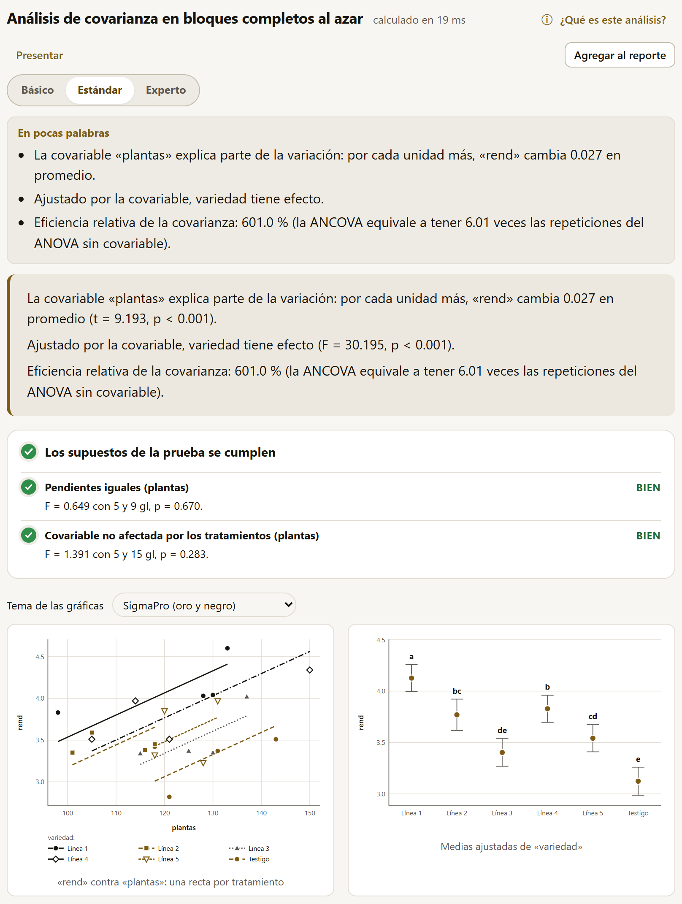
Figura 4.22. La covarianza del sorgo: cada planta más suma 0.027 al rendimiento; ajustadas por las plantas, las variedades difieren (F = 30.195, p < 0.001).
Las medias ajustadas son las que valdría cada tratamiento si todas sus parcelas tuvieran el mismo número de plantas (la media general de la covariable). Son las que se publican, y pueden cambiar el orden de las medias sin ajustar:
Cuadro 4.1. Medias del sorgo sin ajustar y ajustadas por el número de plantas, con las letras de Tukey (α = 0.05), como las da SigmaPro (cuadro 4 del resultado).
variedad
Media sin ajustar
Media de plantas
Media ajustada
EE
IC 95 %
Grupo
Línea 1
4.125
122.3
4.127
0.06143
3.995 – 4.259
a
Línea 2
3.442
110.0
3.770
0.07099
3.617 – 3.922
bc
Línea 3
3.520
126.8
3.403
0.06274
3.268 – 3.537
de
Línea 4
3.833
122.5
3.828
0.06143
3.696 – 3.960
b
Línea 5
3.593
124.3
3.542
0.06168
3.409 – 3.674
cd
Testigo
3.280
128.3
3.123
0.06376
2.986 – 3.260
e
La Línea 2 tuvo menos plantas (110 en promedio): sin ajustar parecía de las peores (3.442) y ajustada queda en segundo grupo (3.770). La Línea 3, con más plantas que el promedio, baja de 3.520 a 3.403.
Los cuadros son cinco. El primero es el análisis de covarianza, con el efecto de los tratamientos ya ajustado (la variedad, F = 30.19 con 5 y 14 gl). El segundo, la pendiente común de cada covariable (0.02652 por planta, t = 9.19, IC 95 %: 0.02033 a 0.03270). El tercero, los supuestos de la covarianza, con las dos pruebas del semáforo. El cuarto, las medias ajustadas (cuadro 4.1). El último, el resumen del ensayo: media general, CV, R² y los dos cuadrados medios del error que dan la eficiencia relativa de la covarianza. En el sorgo, el cuadrado medio del error baja de 0.0991 sin la covariable a 0.0151 con ella, y la ANCOVA equivale a tener 6.01 veces las repeticiones del ANOVA sin covariable (Cochran y Cox, 1957). La eficiencia se calcula solo con una covariable; con dos, el resumen no la trae.
Las dos gráficas muestran la respuesta contra la covariable (la primera, si hay dos), con una recta por variedad y todas con la misma pendiente, y las medias ajustadas con sus letras. Con dos factores de tratamiento, el análisis de covarianza trae su interacción y, si es significativa, un cuadro más compara el primer factor dentro de cada nivel del segundo, con las medias ajustadas.
Regresión lineal simple y múltiple
Se elige la Variable de respuesta (y) y los Predictores (hasta 15); con uno es la regresión simple y con más, la múltiple. Los predictores entran al modelo en el orden en que aparecen en la lista, que es el de las columnas de la tabla, no el orden en que se marcaron. El campo Predecir en (opcional) recibe un renglón por punto, con los valores de los predictores en ese mismo orden y separados por espacios; la ayuda bajo el campo los nombra en su orden. Completan el formulario el Nivel de confianza y el Nivel de significancia. Con el ejemplo del café, el rendimiento de 40 fincas se explica por su altitud, la materia orgánica del suelo y el porcentaje de sombra.
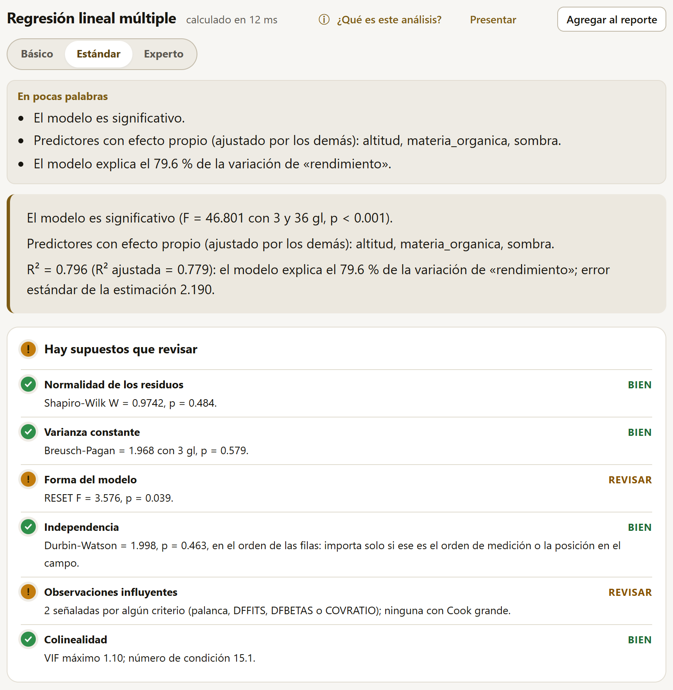
Figura 4.23. La regresión del café explica el 79.6 % de la variación del rendimiento; el semáforo pide revisar la forma del modelo y dos observaciones.
La conclusión dice si el modelo es significativo en conjunto, qué predictores tienen efecto propio (ajustado por los demás) y cuánto explica (R² y R² ajustada). En la regresión simple dice, en cambio, cuánto sube o baja la respuesta por cada unidad del predictor, con su intervalo. El semáforo de la regresión tiene seis renglones:
Forma del modelo: la prueba RESET (con ŷ² y ŷ³), y la falta de ajuste cuando hay valores repetidos de los predictores. En el café, RESET da F = 3.576 y p = 0.039: quizá falta una curva o una interacción.
Independencia: Durbin-Watson, con p exacto si hay menos de 100 datos. Mide la autocorrelación en el orden de las filas, así que solo importa si ese es el orden en que se midió o la posición en el campo; por eso este renglón nunca pasa de ámbar.
Observaciones influyentes: los criterios de R (palanca, DFFITS, DFBETAS, COVRATIO y distancia de Cook). Se pone en rojo si alguna tiene una distancia de Cook grande y en ámbar si solo la señalan los otros criterios. En el café, dos fincas, la 17 y la 6, salen señaladas por el COVRATIO y ninguna por la distancia de Cook.
Colinealidad, con dos o más predictores: el VIF de cada predictor y el número de condición; el renglón se pone en ámbar con un VIF mayor que 5 y en rojo con uno mayor que 10 (VIF máximo 1.10 y número de condición 15.1 en el café: sin problema).
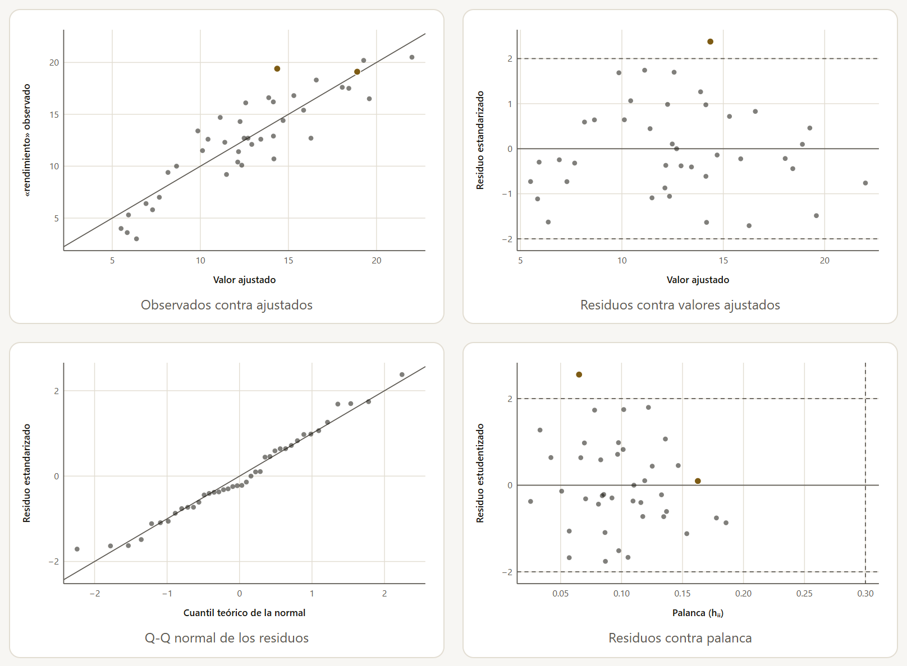
Figura 4.24. Las cuatro gráficas de diagnóstico. Las dos fincas señaladas salen en dorado: la 17, por su residuo estudentizado de 2.55, y la 6, con un residuo casi nulo (0.10) pero una palanca de 0.16; a las dos las señala el COVRATIO y a ninguna la distancia de Cook.
Con un solo predictor, la primera gráfica no es la de observados contra ajustados sino la recta ajustada sobre los datos, con la banda de confianza de la media (sombreada) y la de predicción (de borde discontinuo); las otras tres son las mismas.
Los cuadros son siete: los coeficientes, con su intervalo, el coeficiente estandarizado (β) y el VIF; el análisis de varianza de la regresión; la bondad de ajuste (R², R² ajustada, error estándar de la estimación, CV, AIC, BIC y el número de observaciones); el aporte de cada predictor, con la suma de cuadrados secuencial (tipo I, en el orden del modelo) y la parcial (tipo II); las pruebas de los supuestos; las observaciones influyentes, con el criterio que las señaló (solo si hay alguna); y los índices de condición con las proporciones de varianza de Belsley, Kuh y Welsch (1980), con dos o más predictores. Con valores en Predecir en (opcional) se agrega el cuadro de predicciones, con el intervalo de confianza de la media y el intervalo de predicción de una observación nueva.
Cuadro 4.2. Los coeficientes de la regresión del café (cuadro 1 del resultado).
Término
Estimado
EE
t
p
IC 95 %
β
VIF
(Intercepto)
−7.324
2.164
−3.38
0.002
−11.71 – −2.934
—
—
altitud
0.01118
0.001467
7.62
< 0.001
0.008209 – 0.01416
0.59
1.07
materia_organica
1.841
0.2157
8.53
< 0.001
1.403 – 2.278
0.65
1.02
sombra
−0.04835
0.02369
−2.04
0.049
−0.09640 – −0.0003028
−0.16
1.10
Cada coeficiente es el cambio del rendimiento (en quintales de café oro por hectárea) por unidad del predictor, con los otros fijos: 1.841 por cada unidad de materia orgánica, 0.01118 por metro de altitud y −0.04835 por cada unidad de sombra. Los β permiten comparar predictores medidos en escalas distintas: la materia orgánica (0.65) y la altitud (0.59) pesan mucho más que la sombra (−0.16).
Regresión polinomial
Ajusta una curva a una sola Variable x, con el Grado del polinomio que se elija (2 (cuadrático), 3 (cúbico) o 4 (cuártico)), y prueba cada grado: el último que entra debe ser significativo para que la curva lo necesite. Con los datos de cada parcela del maíz, la curva cuadrática del rendimiento contra la dosis explica el 81.7 % de la variación (F = 100.377 con 2 y 45 gl) y tiene su máximo en 147.747 kg/ha, con 6.769 t/ha estimadas: el mismo máximo que dan los polinomios ortogonales sobre las medias (sección 4.11), porque los datos están balanceados. Con grado 3, la conclusión dice que el término cúbico no es significativo (p = 0.529) y que basta un grado menor. El máximo o mínimo se busca en las curvas de grado 2 y 3 cuando su último término es significativo; si cae fuera del intervalo de los datos, la conclusión lo dice y pide no extrapolarlo.
Como la dosis se repite (cuatro dosis, doce parcelas cada una), la app separa el error en falta de ajuste y error puro: la falta de ajuste no es significativa (F = 0.402, p = 0.529), así que la parábola describe bien las medias de las cuatro dosis. La primera gráfica trae la curva con su banda de confianza y la de predicción, y el campo Predecir en (opcional) recibe valores de x separados por espacios. Lo demás es como en la regresión lineal: el semáforo (sin el renglón de colinealidad), las otras tres gráficas de diagnóstico y los mismos cuadros, salvo los β, el VIF y los índices de condición, que no tienen sentido entre las potencias de una misma variable.
iCuando Durbin-Watson se enciende sin motivo
En el maíz, el semáforo de la regresión polinomial marca la independencia en ámbar (Durbin-Watson = 0.982, p < 0.001). No es una falla del ensayo: las filas del ejemplo están ordenadas por bloque, híbrido y dosis, y los residuos de un mismo bloque e híbrido se parecen entre sí porque el modelo no incluye al híbrido. La prueba solo tiene sentido si el orden de las filas es el orden de medición o la posición en el campo; por eso la app lo advierte en el propio renglón.
Selección paso a paso
Con muchos Predictores candidatos (de 2 a 15), la selección paso a paso agrega o quita uno por paso hasta que ningún cambio mejora el modelo. El Criterio puede ser AIC (como step de R), el de omisión, que en cada paso hace el cambio que más baja el AIC, o Valor p de la F parcial, con un Nivel para entrar (0.05 por omisión) y un Nivel para salir (0.10). Las opciones de la Dirección cambian con el criterio:
Criterio
Dirección
Cómo avanza
AIC
Ambas direcciones, desde el modelo completo (por omisión)
Parte de todos los candidatos; en cada paso puede quitar uno o volver a meter uno que ya salió.
AIC
Hacia atrás
Parte de todos los candidatos y solo quita.
AIC
Hacia adelante
Parte del modelo con solo la media y solo agrega.
Valor p
Mixta (entra y sale) (por omisión)
Parte de solo la media: entra el candidato de menor p si es menor que el nivel para entrar y, después de cada entrada, sale el de mayor p si pasa del nivel para salir. El nivel para entrar no puede ser mayor que el de salir.
Valor p
Hacia adelante
Parte de solo la media y agrega mientras el menor p quede bajo el nivel para entrar.
Valor p
Hacia atrás
Parte de todos los candidatos y quita mientras el mayor p pase del nivel para salir.
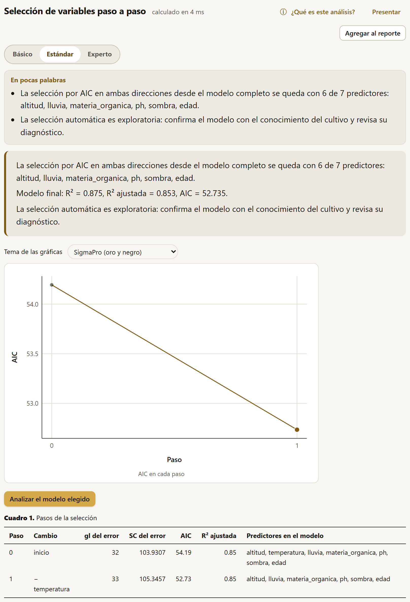
Figura 4.25. Con los siete predictores del café, la selección por AIC quita la temperatura en un paso y se detiene.
En el café sale primero la temperatura: está casi determinada por la altitud (r = −0.967, sección 4.13) y, con la altitud en el modelo, no aporta nada. El cuadro de pasos dice qué cambió en cada uno, con los grados de libertad y la suma de cuadrados del error, el AIC, la R² ajustada y los predictores que quedan (con el criterio del valor p, también la F y el p de cada cambio); el segundo cuadro da los coeficientes del modelo final. El botón Analizar el modelo elegido abre la regresión lineal con esos predictores, para revisar su diagnóstico.
El camino importa. Con los mismos datos, hacia adelante por AIC entra primero la materia orgánica y después la temperatura, no la altitud, y la selección termina con cinco predictores (materia_organica, temperatura, edad, ph y lluvia; R² ajustada 0.843); por valor p, en la mixta, termina con cuatro (R² ajustada 0.831). Por eso conviene compararla con los mejores subconjuntos, que revisan todas las combinaciones.
iEl AIC de la selección no es el de la regresión
La selección usa el AIC de la función step de R, n·ln(SCE/n) + 2k; el cuadro de bondad de ajuste de la regresión lineal da el que sale de la log-verosimilitud, como AIC() de R. Difieren en una constante que solo depende de n: el modelo de seis predictores que eligió la selección tiene AIC = 52.735 en ella y 168.250 en la regresión lineal. Compara valores de AIC solo dentro de un mismo análisis.
!La selección automática es exploratoria
Los valores p del modelo elegido son optimistas, porque el mismo dato sirvió para elegir y para probar. La conclusión lo dice: el modelo se confirma con el conocimiento del cultivo, y conviene revisar su diagnóstico antes de usarlo. La selección no revisa los supuestos: el semáforo está en la regresión lineal del modelo elegido.
Mejores subconjuntos
En lugar de avanzar de uno en uno, revisa todas las combinaciones de los Predictores candidatos (de 2 a 15) (como leaps::regsubsets) y da los mejores modelos de cada tamaño: uno, dos o tres por tamaño, según Modelos por tamaño (con más de uno, el cuadro agrega la columna del lugar). Cada modelo trae su R², la R² ajustada (mayor es mejor), la Cp de Mallows (1973) y el BIC (menor es mejor).
Cuadro 4.3. El mejor modelo de cada tamaño con los siete predictores del café (cuadro 1 del resultado).
La columna Elegido por marca el tamaño que gana con cada criterio: la mayor R² ajustada, la menor Cp y el menor BIC. El BIC castiga más los predictores y se queda con cinco; la Cp y la R² ajustada, con seis (los mismos que eligió la selección paso a paso). Cuando no coinciden, el modelo del BIC es el más sencillo.
Figura 4.26. Los mejores subconjuntos del café: el BIC llega a su mínimo con cinco predictores; en la gráfica de la Cp, el modelo de seis queda debajo de la recta Cp = p. Los botones llevan cada modelo a la regresión lineal.
ΣCómo se lee la Cp
La Cp compara el error de cada modelo con el del modelo completo, que se toma como la varianza verdadera. Un modelo sin sesgo tiene una Cp cercana a su número de coeficientes p (los predictores más el intercepto), y el modelo completo siempre queda en Cp = p (8.00 con los siete predictores del café). SigmaPro marca la menor Cp; la regla clásica, una Cp cercana a p o debajo, se lee en la gráfica de la derecha. En el café, el modelo de seis predictores (p = 7) queda debajo de la recta, con 6.44, y el de cinco (p = 6) apenas arriba, con 6.95.
Los botones, Analizar el modelo de BIC (5 predictores) y Analizar el modelo de Cp (6 predictores) en el café, abren la regresión lineal con esos predictores y su diagnóstico completo. Cuando la R² ajustada elige un tamaño distinto de los otros dos, aparece un tercer botón para su modelo.
iContinúa en la suite LABG
Al pie de la regresión lineal, la selección paso a paso y los mejores subconjuntos, la franja Continúa en la suite LABG sugiere CorrelationPro, para explorar y visualizar las relaciones entre muchas variables a la vez (marcada Próximamente mientras no se publique), y PCAPro, que resume los predictores muy correlacionados (VIF alto) en componentes principales independientes. El análisis de covarianza y la regresión polinomial no tienen franja (capítulo 10).
4.13Correlación
La correlación mide qué tanto se mueven juntas dos variables, sin decir cuál depende de cuál. La familia trae la correlación de dos variables, la matriz de correlaciones de muchas y la correlación parcial, que descuenta el efecto de otras.
Correlación de dos variables
Se eligen la Variable x, la Variable y, el Coeficiente (Pearson (relación lineal), el de omisión; Spearman (rangos) o Kendall (rangos), para una relación que solo sube o solo baja) y la Hipótesis alternativa (Correlación distinta de cero, Correlación positiva o Correlación negativa). Con Pearson se elige además el Nivel de confianza del intervalo; con Spearman o Kendall, el Valor p (Exacto si se puede o Aproximado) y la casilla Corrección por continuidad (en el p aproximado).
En el café, la altitud y el rendimiento tienen una correlación de Pearson r = 0.565 (IC 95 %: 0.307 a 0.745; t = 4.217 con 38 gl, p < 0.001): comparten el 31.9 % de su variación (r² = 0.319). La conclusión la califica de fuerte con los cortes de Cohen (1988): menos de 0.1, despreciable; hasta 0.3, débil; hasta 0.5, moderada; de ahí en adelante, fuerte.
El resultado trae la gráfica de dispersión con la recta de mínimos cuadrados y dos cuadros: la prueba (el coeficiente, su intervalo con Pearson, el estadístico, el valor p, cómo se calculó el p y el número de pares) y los tres coeficientes a la vez (Pearson 0.565, Spearman 0.574 y Kendall 0.406 en el café). Si Pearson y Spearman difieren mucho, la relación no es lineal o hay valores que pesan demasiado. Sin empates, los valores p de Spearman (hasta 1290 datos) y de Kendall (menos de 50) son exactos, como en R. Con empates, como en el café, el p es aproximado y la conclusión lo dice: Spearman lo calcula con la t de Student y Kendall con la normal corregida por empates (z = 3.683).
Este análisis no tiene semáforo: la forma de la relación y los valores extremos se ven en la gráfica, y la regresión lineal da su diagnóstico completo.
Matriz de correlaciones
Con las Variables (de 2 a 30) que se marquen, da todas las correlaciones por pares con el Coeficiente que se elija (Pearson, Spearman o Kendall). Como son muchas pruebas a la vez, los valores p se ajustan (Ajuste de los valores p: Holm, el de omisión, Bonferroni, Benjamini-Hochberg (FDR) o Sin ajuste). En Filas con faltantes se elige entre Solo las completas en todas las variables (la opción por omisión) y Cada par con sus filas completas.
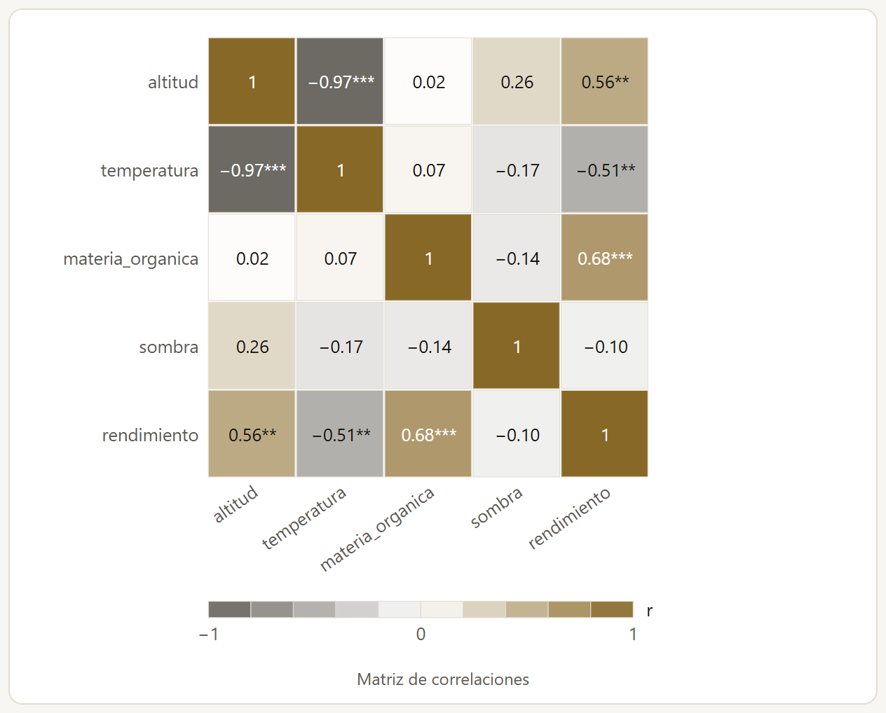
Figura 4.27. El mapa de calor de las correlaciones del café: dorado, positivas; gris, negativas; las estrellas, del p ajustado por Holm.
La conclusión dice cuántos pares tienen correlación significativa (en el café, 4 de 10) y cuál es la más fuerte.
El primer cuadro es la matriz, con estrellas según el p ajustado (* p < 0.05; ** p < 0.01; *** p < 0.001); el segundo da cada par con su p, su p ajustado y su número de pares, y con Pearson también su intervalo de confianza. Las pruebas son bilaterales. En el café, la altitud y la temperatura están casi en una recta (r = −0.967): por eso la selección paso a paso no quiere las dos.
Correlación parcial y semiparcial
Se eligen la Variable x, la Variable y, las Variables de control (de 1 a 10) y el Coeficiente (Pearson o Spearman; con Spearman, todo se calcula sobre los rangos). La correlación parcial es la de x con y después de quitarles a las dos lo que explican los controles; la semiparcial quita los controles de una sola, y su cuadrado es la parte de la variación de y que x explica por sí sola. Las pruebas usan n − 2 − k grados de libertad (k controles), como el paquete ppcor de R.
Cuadro 4.4. Temperatura y rendimiento del café, controlando la altitud y la sombra.
Correlación
Valor
t
gl
p
Simple
−0.512
−3.68
38
< 0.001
Parcial (controles quitados de las dos)
0.279
1.74
36
0.090
Semiparcial: «rendimiento» con «temperatura» sin los controles
0.219
1.35
36
0.186
Semiparcial: «temperatura» con «rendimiento» sin los controles
0.068
0.41
36
0.686
La temperatura parecía bajar el rendimiento (−0.512), pero descontando la altitud y la sombra ya no se correlacionan (parcial 0.279, p = 0.090): las fincas frescas rinden más porque están más altas, no por la temperatura misma. La conclusión agrega la semiparcial al cuadrado (0.048): la parte de la variación del rendimiento que la temperatura explica por sí sola, además de la altitud y la sombra. La gráfica de variable agregada muestra los residuos de las dos variables sin los controles; su correlación es la parcial.
iContinúa en la suite LABG
Al pie de los tres análisis de correlación, la franja Continúa en la suite LABG sugiere CorrelationPro, para explorar y visualizar las relaciones entre muchas variables a la vez (marcada Próximamente mientras no se publique), y PCAPro, para reducir las dimensiones de las variables y revisar sus relaciones en biplots (capítulo 10).
4.14Tablas de contingencia
Cuando las dos variables son categorías (germinó o no, sana o enferma, tratada o testigo), los datos se resumen en una tabla de conteos. Los cuatro métodos de la familia aceptan dos formas de datos: una fila por caso (cada semilla, cada hoja), con — cada fila es un caso — en Frecuencias, o la tabla ya contada, con una columna de conteos que se elige en ese mismo campo.
El campo Frecuencias solo ofrece columnas numéricas de enteros no negativos, y propone sola la que se llama como un conteo (n, frecuencia, conteo, casos, semillas…). Las variables de categorías deben tener de 2 a 50 categorías. Las tablas de contingencia no tienen semáforo ni franja de la suite.
Tabla de contingencia
Prueba si dos variables son independientes. Se eligen la Variable de las filas, la Variable de las columnas, las Frecuencias, la casilla Corrección de Yates (tablas 2 × 2) (marcada por omisión, como en R), el Nivel de confianza y el Nivel de significancia. El ejemplo de la semilla tratada cuenta cuántas semillas germinaron con fungicida y sin él en cuatro lotes; aquí se juntan los lotes.
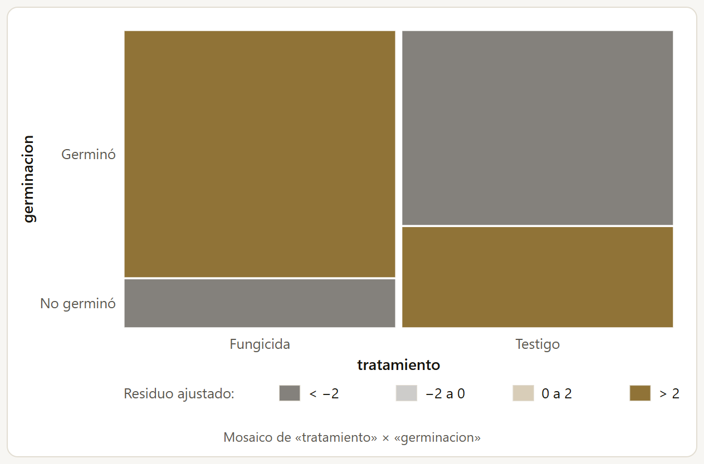
Figura 4.28. El mosaico de la semilla tratada: el dorado marca las celdas con más casos de los esperados bajo independencia.
La semilla tratada germina más (χ² = 31.326, p < 0.001). La conclusión dice si hay asociación, qué tan fuerte es (la V de Cramér: 0.201, débil) y cuál celda se aparta más de la independencia, por su residuo ajustado (más allá de ±1.96, la celda se aparta con α = 0.05; aquí, fungicida con germinó, 5.678). En las tablas de 2 × 2 agrega la razón de momios (2.589, IC 95 %: 1.854 a 3.615: las semillas tratadas tienen 2.6 veces los momios de germinar) y el riesgo relativo de la primera columna (1.266, IC 95 %: 1.165 a 1.376).
Los cinco cuadros son las frecuencias observadas; las esperadas con su residuo ajustado; las pruebas de independencia (ji cuadrada de Pearson, razón de verosimilitudes G² y la exacta de Fisher, con su razón de momios condicional en las tablas de 2 × 2); las medidas de asociación (φ, V de Cramér, coeficiente de contingencia, λ de Goodman y Kruskal y el coeficiente de incertidumbre); y las medidas para categorías ordenadas (γ, τ-b de Kendall, τ-c de Stuart y la d de Somers). SigmaPro calcula estas últimas en cualquier tabla, pero solo se leen si las dos variables tienen un orden natural (dosis, grados de daño).
La exacta de Fisher se calcula siempre en las tablas de 2 × 2; en las más grandes, solo con hasta 5000 casos y si alguna frecuencia esperada es menor que 5 o hay 300 casos o menos (si exige revisar demasiadas tablas, la nota lo dice y recomienda juntar categorías). Cuando alguna esperada es menor que 5, la nota avisa que la ji cuadrada es aproximada y la conclusión decide con la exacta de Fisher.
McNemar y Bowker: datos pareados
Cuando cada caso se clasifica dos veces (antes y después de un tratamiento, o con dos métodos), las dos clasificaciones no son independientes y la ji cuadrada no sirve. Se eligen la Primera clasificación (antes) y la Segunda clasificación (después), con las mismas categorías, las Frecuencias y la casilla Corrección por continuidad (marcada por omisión). Con dos categorías es la prueba de McNemar, con su versión binomial exacta; con más, la de simetría de Bowker, que pregunta si los cambios en un sentido son tan frecuentes como en el otro.
Cuadro 4.5. Severidad de la roya en 80 hojas, calificada por los técnicos A (filas) y B (columnas): 0 sana, 1 leve, 2 moderada, 3 severa.
A \ B
0
1
2
3
Total
0
25
6
0
0
31
1
0
21
3
0
24
2
0
2
10
1
13
3
0
0
2
10
12
Total
25
29
15
11
80
En las tablas de 2 × 2, el cuadro de la prueba da la ji cuadrada de McNemar (con la corrección, si está marcada y los dos tipos de cambio no son iguales) y la binomial exacta, que solo usa los casos que cambiaron; la conclusión decide con la binomial exacta, esté marcada o no la corrección.
Con la roya, Bowker da χ² = 6.533 con 3 gl y p = 0.088: no hay evidencia de que un técnico califique sistemáticamente más alto que el otro. Los pares de categorías sin ningún cambio (sana–moderada, sana–severa, leve–severa) no entran a la prueba; R daría NaN, y SigmaPro baja los grados de libertad a 3 y lo dice en la nota. El tercer cuadro da la proporción de cada categoría en cada clasificación: el técnico A calificó sanas 0.3875 de las hojas y el B, 0.3125, porque seis de las que A vio sanas el B las vio leves. La gráfica es un mapa de calor de la tabla, con la diagonal de los casos que no cambiaron.
Cochran-Mantel-Haenszel: asociación por estratos
Cuando los datos vienen de varios lotes, sitios o años, juntarlos puede crear o esconder una asociación. Se eligen la Variable de las filas, la Variable de las columnas, los Estratos (lotes, sitios, años) y las Frecuencias, con la casilla Corrección por continuidad (marcada por omisión) y el Nivel de confianza. La prueba de Cochran-Mantel-Haenszel mide la asociación dentro de cada estrato y la combina, con la razón de momios común. La prueba de Breslow-Day dice si la razón de momios es parecida en todos los estratos; el cuadro la da sin y con la corrección de Tarone, y la conclusión usa la corregida. Con tablas mayores que 2 × 2 en cada estrato, la prueba es la generalizada, con (I − 1)(J − 1) gl, sin razón de momios común, sin Breslow-Day y sin gráfica.
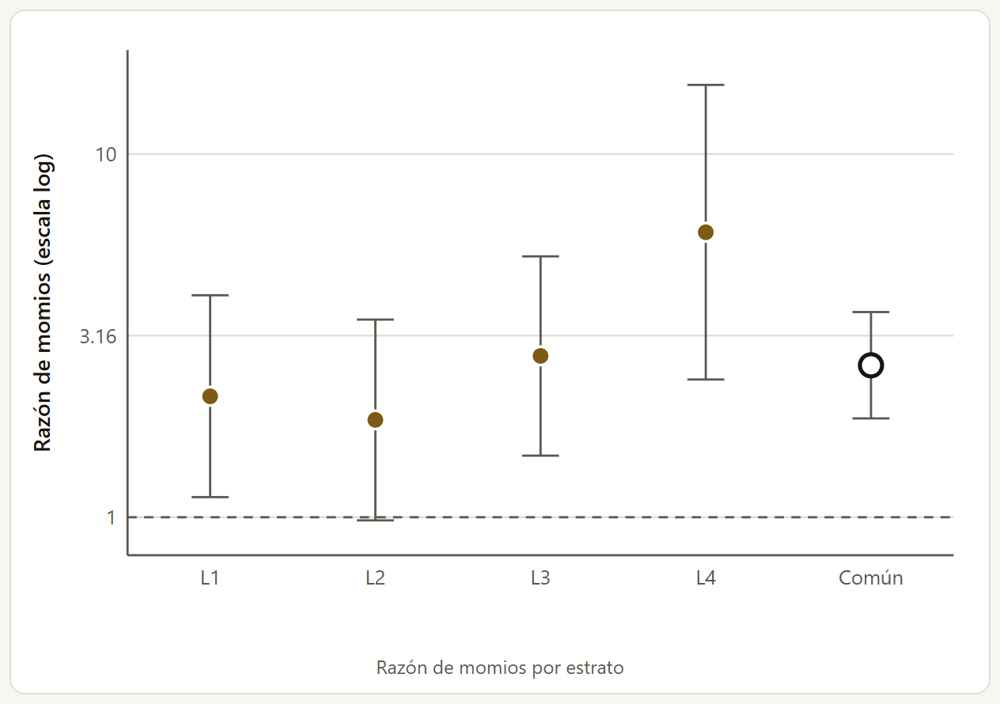
Figura 4.29. La razón de momios de cada lote y la común (2.621), con sus intervalos, en escala logarítmica.
Controlando por el lote, el tratamiento y la germinación siguen asociados (CMH χ² = 31.600, p < 0.001), con una razón de momios común de 2.621 (IC 95 %: 1.871 a 3.671). El lote 4 tiene la razón más alta (6.093), pero Breslow-Day no encuentra diferencias entre lotes (p = 0.186), así que la razón común los resume bien.
El cuadro de cada estrato da su tabla (a b / c d), su razón de momios y su intervalo; la línea discontinua de la gráfica marca el 1, donde no habría asociación.
Concordancia entre evaluadores: kappa
Mide qué tanto coinciden dos evaluadores (o dos métodos) más allá de lo que coincidirían por azar. Se eligen el Evaluador 1, el Evaluador 2, las Frecuencias, los Pesos de la kappa ponderada (Cuadráticos, los de omisión, o Lineales), el Nivel de confianza y el Nivel de significancia. Los pesos cuentan un desacuerdo entre categorías vecinas como menos grave que uno entre extremas: con los cuadráticos, un desacuerdo de dos grados pesa cuatro veces lo que uno de un grado; con los lineales, el doble. La ponderada aparece cuando hay más de dos categorías.
Con la roya (cuadro 4.5), los técnicos coinciden en el 82.5 % de las hojas, cuando por azar coincidirían en el 28.1 %. La kappa de Cohen es 0.757 (IC 95 %: 0.642 a 0.871), una concordancia considerable según Landis y Koch (1977). La ponderada sube a 0.920 con los pesos cuadráticos y a 0.846 con los lineales, porque casi todos los desacuerdos son entre categorías vecinas. El cuadro de concordancia trae cada kappa con su error estándar (Fleiss, Cohen y Everitt, 1969), su intervalo y su prueba z, que usa el error estándar de una concordancia por azar. La gráfica es el mapa de calor de la tabla, con las coincidencias en la diagonal.
Cuadro 4.6. La concordancia de los dos técnicos con la roya, con los pesos cuadráticos de omisión (cuadro 2 del resultado).
Medida
Valor
EE
IC 95 %
z
p
Kappa de Cohen
0.757
0.059
0.6419 – 0.8713
11.27
< 0.001
Kappa ponderada (cuadrática)
0.920
0.022
0.8763 – 0.9630
8.26
< 0.001
La kappa ponderada depende del orden de las categorías. SigmaPro arma una tabla cuadrada con las categorías de los dos evaluadores en el orden de las del evaluador 1, que es el de la columna en Datos (el de aparición, o el que se fije con Ordenar niveles…, sección 2.7). Una categoría que solo usó el evaluador 2 se intercala justo después de la que la precede en la columna de ese evaluador, y si todas las categorías son números, se ordenan de menor a mayor. Así, si el evaluador 1 calificó solo «leve», «media» y «alta» y el evaluador 2 además «sana», la tabla queda sana, leve, media, alta. Antes de leer la ponderada, revisa ese orden en el primer cuadro del resultado.
iKappas ponderadas de versiones anteriores
En las versiones de SigmaPro anteriores a la 0.5.0, una categoría que solo usaba el evaluador 2 quedaba al final de la tabla y la kappa ponderada se calculaba con un orden falso. Desde la 0.5.0, la categoría entra en su lugar. Si calculaste una kappa ponderada con una versión anterior y un evaluador no usó alguna categoría, vuelve a correrla. La kappa simple y las pruebas de McNemar y Bowker no dependen del orden.
4.15Modelos lineales mixtos
Un modelo mixto separa los efectos fijos, los que se eligieron a propósito y sobre los que se quiere concluir (los híbridos, las dosis), de los aleatorios, que representan una muestra de muchos posibles (los bloques, las localidades, los años, las plantas medidas varias veces). Con ellos, cada fuente de variación lleva su propio error, las parcelas perdidas no desarman el análisis y la información que hay entre bloques no se pierde.
Los seis métodos de la familia corren en el motor R dentro del navegador (sección 4.6), con los paquetes lme4, lmerTest y emmeans; las medidas repetidas usan nlme. La primera vez se descarga el motor; después funciona sin internet.
Método
Para qué
Modelo lineal mixto (fórmula)
Cualquier combinación de efectos fijos y aleatorios, escrita como fórmula.
Bloques al azar con bloques aleatorios
Uno a tres factores en bloques completos; con parcelas perdidas recupera la información entre bloques.
Parcelas divididas (modelo mixto)
Parcelas grandes, subparcelas y, si se pide, sub-subparcelas, con sus errores como efectos aleatorios.
Látice y alfa-látice (recuperación entre bloques)
Bloques incompletos aleatorios dentro de repeticiones: las medias recuperan la información entre bloques.
Ensayos en varias localidades
Genotipos fijos en localidades con repeticiones; la localidad y la interacción genotipo × localidad, aleatorias.
Medidas repetidas en el tiempo
La misma unidad medida en varias fechas: elige la estructura de covarianza entre fechas.
El modelo escrito como fórmula
Figura 4.30. La fórmula del modelo mixto y lo que la app entendió de ella, término por término.
El campo Términos del modelo (lo que va después de «~») recibe la parte derecha de la fórmula. Los efectos fijos se escriben como en el modelo lineal general (sección 4.10); cada efecto aleatorio va entre paréntesis con su agrupamiento:
(1 | bloque): un nivel propio para cada bloque (intercepto aleatorio).
(1 | bloque/parcela): parcelas dentro de bloques.
(dias | planta): una pendiente propia para cada planta, correlacionada con su intercepto; con (dias || planta), sin esa correlación.
Debajo del campo, la app explica cada término que leyó, para confirmar que el modelo es el que se quería. Las numéricas que son tratamientos (una dosis) se marcan en Numéricas que son tratamientos (factor).
Siguen Comparar las medias de (casillas con los factores fijos que entran como efecto principal; por omisión, los tres primeros), Dentro de cada nivel de (con dos factores o más, para comparar uno por separado en cada nivel de otro cuando interactúan), el Ajuste de las comparaciones (Tukey, Bonferroni, Holm, Šidák o Sin ajuste (DMS)), las Sumas de cuadrados (tipo III, II o I), los Grados de libertad de las pruebas (Satterthwaite, o Kenward-Roger, más exacto con pocos grupos y más lento) y la Estimación: REML, que da componentes de varianza sin sesgo, o máxima verosimilitud, para comparar modelos con distintos efectos fijos. Kenward-Roger solo funciona con REML. Al final van el Nivel de confianza y el Nivel de significancia.
Con el maíz y los bloques aleatorios (hibrido * dosis + (1 | bloque)), las pruebas de los híbridos, las dosis y su interacción dan las mismas F que el ANOVA de bloques (60.63, 292.15 y 1.47), porque los datos están balanceados. Lo que cambia es el error estándar de las medias: incluye la varianza de los bloques (el 43.9 % de la variación aleatoria), así que las medias de los híbridos llevan EE de 0.1079 con 4.25 grados de libertad, mientras que sus diferencias, en las que los bloques se cancelan, conservan los 33 del error.
Con los dos factores del maíz, el resultado trae diez cuadros: las pruebas de los efectos fijos, los componentes de varianza con su porcentaje, la prueba de los efectos aleatorios (razón de verosimilitudes, como lmerTest::ranova; su p es conservador, porque una varianza no puede ser negativa, y el verdadero suele ser la mitad), las medias marginales de cada factor con sus letras y sus comparaciones por pares, los coeficientes, las predicciones de los efectos aleatorios (BLUP) y el ajuste del modelo. Cuando un factor pasa de 45 pares, su cuadro de pares no se muestra, aunque las letras sí; con más de 50 niveles, solo las medias. Si los BLUP pasan de 120 renglones, su cuadro tampoco aparece: una nota bajo los coeficientes lo dice, y el código R equivalente los da con ranef().
Las gráficas son las medias marginales del primer factor comparado, con su intervalo y sus letras (con Dentro de cada nivel de, una línea por cada nivel del otro factor), los residuos contra los valores ajustados y su gráfico Q-Q. El semáforo revisa la normalidad de los residuos (Shapiro-Wilk), la de los efectos aleatorios (los BLUP del primer agrupamiento, si tiene 5 niveles o más), la igualdad de varianzas (Levene con la mediana, entre los niveles del primer factor fijo) y los avisos del optimizador; un ajuste singular sale en ámbar.
Los diseños como modelo mixto
Los otros cuatro métodos piden los papeles del diseño, arman la fórmula solos y la muestran bajo el formulario («Modelo: …»). Las columnas numéricas que hacen de tratamiento se toman como factor y las pruebas usan sumas de cuadrados tipo III; las demás opciones son las del modelo con fórmula. En los bloques al azar con dos o tres factores y en las parcelas divididas, el formulario ofrece también Dentro de cada nivel de.
Las parcelas divididas piden el Factor en las parcelas grandes, el Factor en las subparcelas, si hace falta el Factor en sub-subparcelas (opcional), y los Bloques (aleatorios); llevan los bloques y las parcelas grandes (y, con un tercer factor, las subparcelas) como efectos aleatorios. Si las parcelas grandes se sortearon sin bloques, se deja — sin bloques — y se elige la Repetición (identifica cada parcela grande). Con la avena de Yates (1935), las pruebas son las del análisis por estratos de la sección 4.10, pero el modelo mixto sigue siendo exacto con parcelas perdidas, cuando el análisis por estratos ya no lo es. Para ver el nitrógeno por separado en cada variedad se elige la variedad en Dentro de cada nivel de: el cuadro de medias da las letras del nitrógeno en cada variedad y la gráfica traza una línea por variedad.
Figura 4.31. La avena en parcelas divididas como modelo mixto: las variedades se prueban con 10 grados de libertad (los de las parcelas grandes) y el nitrógeno con 45.
Cuadro 4.7. Componentes de varianza (REML) de la avena en parcelas divididas.
Grupo
Varianza
DE
% del total
bloque:variedad (las parcelas grandes)
106.1
10.30
21.31
bloque
214.5
14.65
43.10
Residual
177.1
13.31
35.59
En el látice y alfa-látice se eligen los Tratamientos (genotipos, variedades), la Repetición y el Bloque incompleto (dentro de la repetición). Los bloques incompletos son aleatorios y las medias de los genotipos recuperan la información entre bloques, que el análisis intrabloque (sección 4.10) desperdicia; la casilla Repeticiones también aleatorias cambia el modelo cuando las repeticiones también son una muestra. Con el alfa-látice de 24 genotipos, los genotipos difieren (F(23, 34.7) = 5.45, p < 0.001) y los bloques dentro de las repeticiones se llevan el 42.1 % de la variación aleatoria.
Los ensayos en varias localidades piden los Genotipos (fijos), la Localidad o ambiente y la Repetición (dentro de cada localidad); ponen la localidad, la repetición dentro de cada localidad y la interacción genotipo × localidad como aleatorias. La casilla Localidades fijas (solo estas localidades interesan) las vuelve efecto fijo. En la avena de 14 ambientes, los genotipos difieren (F(9, 117) = 5.41) y el ambiente se lleva el 79.7 % de la variación, contra el 6.5 % de la interacción. Ahí los BLUP suman 196 renglones (14 ambientes, 42 repeticiones y 140 combinaciones genotipo × ambiente), así que su cuadro no se muestra y la nota bajo los coeficientes lo avisa. Para estudiar la interacción misma (estabilidad, AMMI, GGE) está la familia de multiambiente (sección 4.20).
Al pie de los bloques al azar, las parcelas divididas y el látice como modelo mixto, la franja «Continúa en la suite LABG» sugiere AgriDesign, que genera la aleatorización, el croquis y la hoja de campo del diseño (capítulo 10).
Medidas repetidas en el tiempo
Cuando la misma planta, parcela o animal se mide en varias fechas, las medidas de una unidad se parecen entre sí, y más cuanto más cercanas están las fechas. El método pide el Tiempo (fecha de medición) (numérico o factor), la Unidad medida en cada fecha (planta, parcela, animal) (su número puede repetirse en cada tratamiento: la unidad es la combinación de unidad, tratamiento y bloque), los Factores de tratamiento (hasta 2; pueden faltar) y los Bloques. La Estructura de covarianza entre fechas puede fijarse o dejarse en La mejor según el criterio (se comparan todas), que ajusta las candidatas y elige la de menor valor según el Criterio para elegirla (AIC o BIC). La AR(1) continua entra solo con el tiempo numérico, y la no estructurada, con 8 fechas o menos (salvo que se pida); la que no se puede ajustar queda marcada «no se pudo ajustar».
Cuadro 4.8. Las siete estructuras de covarianza comparadas con la altura del maíz en cinco fechas (REML, los mismos efectos fijos).
Estructura
Parámetros
AIC
BIC
Independientes
24
486.6
535.6
Simetría compuesta
25
474.3
525.4
Simetría compuesta heterogénea
29
431.4
490.6
AR(1)
25
451.8
502.8
AR(1) heterogénea
29
420.1
479.4
elegida
AR(1) continua
25
451.8
502.8
No estructurada
38
427.6
505.3
La conclusión dice cuál estructura ganó y prueba los tratamientos, el tiempo y su interacción. La AR(1) supone que la correlación baja con la distancia entre fechas (φ, φ², φ³…); la heterogénea deja además una varianza propia para cada fecha, lo que hace falta cuando la planta crece y su variación también. La AR(1) continua usa la distancia real entre fechas desiguales. En el maíz gana la AR(1) heterogénea, con φ = 0.778 entre fechas vecinas.
Figura 4.32. La altura del maíz en cinco fechas: las dosis se separan con el tiempo.
El tratamiento solo no tiene efecto (F(3, 57) = 1.39, p = 0.256), pero la interacción con el tiempo sí (F(12, 57) = 4.29, p < 0.001): a los 15 días las cuatro dosis miden lo mismo y desde los 30 días el testigo sin nitrógeno se queda atrás. Por eso la app propone comparar los tratamientos Dentro de cada nivel de la fecha, y su cuadro de medias da las letras de cada fecha por separado. Otro cuadro da la matriz estimada de covarianzas y correlaciones entre fechas.
Las pruebas usan los grados de libertad del error, N − p, para todos los términos, como nlme. El semáforo revisa la normalidad de los residuos normalizados (Shapiro-Wilk) y la igualdad de sus varianzas entre fechas (Levene); si alguno falla, propone una estructura heterogénea o una transformación.
4.16Componentes de varianza, heredabilidad y repetibilidad
Tres métodos para la genética cuantitativa y el mejoramiento, que corren en el navegador sin el motor R: estiman los componentes de varianza por REML (con el algoritmo de información promedio) y se validaron contra lme4.
Componentes de varianza
Dicen cuánta variación aporta cada factor aleatorio. Se eligen los Factores aleatorios (hasta 4), Cómo se relacionan (Cruzados; Anidados (cada uno dentro de los anteriores), en el orden de la tabla; o Cruzados, con sus interacciones dobles) y, si hace falta, los Factores fijos (opcional, hasta 3), que entran como efectos principales y no se prueban: para sus pruebas F está el modelo lineal mixto. En el alfa-látice, con los genotipos fijos y los bloques anidados en las repeticiones, la repetición aporta el 43.6 % de la varianza (σ² = 0.1139), los bloques dentro de la repetición el 23.7 % y el error el 32.6 %. Cada componente lleva su EE y su prueba de razón de verosimilitudes, con el p de la mezcla ½χ²0 + ½χ²1, porque una varianza no puede ser negativa: la repetición da χ² = 6.41 (p = 0.006) y los bloques, χ² = 5.01 (p = 0.013). Con solo tres repeticiones, la varianza de la repetición es muy imprecisa: su EE, 0.128, es mayor que la estimación. La gráfica muestra el porcentaje de la varianza total que aporta cada componente.
iDos valores p para una misma varianza
Para un intercepto aleatorio, la prueba de los modelos mixtos de la sección 4.15 (ranova) da el p de χ² con 1 grado de libertad, que es conservador; estos tres métodos dan el de la mezcla ½χ²0 + ½χ²1, que es la mitad. Con el mismo modelo (y REML), la varianza y el χ² coinciden: solo cambia la forma de calcular el p.
Heredabilidad y BLUP de genotipos
Con los genotipos como aleatorios, el método estima la varianza genética, la heredabilidad y el valor genotípico de cada uno. Se eligen los Genotipos (aleatorios), la Repetición o bloque completo (fijo), el Bloque incompleto dentro de la repetición (aleatorio), para el alfa-látice y otros diseños con bloques incompletos, y el Ambiente o localidad (fijo); con varios ambientes, la interacción genotipo × ambiente entra como aleatoria y la conclusión compara su varianza con la genética. Bajo los papeles, la app muestra el modelo que armó («Modelo: …») y el título del resultado dice el diseño que entendió. Para la ganancia por selección se elige la Proporción seleccionada (de 5 % a 50 %) y, en Se seleccionan los valores, los mayores (rendimiento, peso, contenido) o los menores (días a floración, altura, daño).
!Indica todas las columnas del diseño
Si falta la repetición o el bloque incompleto, su variación pasa al error, sin aviso, y la heredabilidad suele bajar: con el alfa-látice, la H² en medias es 0.840 con las repeticiones y los bloques, 0.780 solo con las repeticiones y 0.580 sin ninguno de los dos («completamente al azar», dice entonces el título). La app solo se detiene cuando hay una sola parcela por genotipo y ambiente, porque entonces la interacción genotipo × ambiente se confunde con el error.
Figura 4.33. Los BLUP de los 24 genotipos del alfa-látice, de mayor a menor (huecos, los dos seleccionados), y su relación con las medias ajustadas (BLUE).
La conclusión empieza por la varianza genética (σ²g = 0.1429, χ² = 23.62, p < 0.001). La heredabilidad en medias es 0.840 ± 0.063: el 84 % de la variación entre las medias de los genotipos es genética. Como el ensayo tiene bloques incompletos, el cuadro de heredabilidad da también las de Cullis (0.809) y de Piepho y Möhring (0.803), las más fieles con datos desbalanceados o bloques incompletos (Schmidt y col., 2019), y la heredabilidad por parcela (0.636). Los parámetros genéticos incluyen los coeficientes de variación genético (8.44 %) y del error (6.38 %); su razón, 1.323, mayor que 1, indica condiciones favorables para la selección.
La ganancia esperada al seleccionar 2 de los 24 genotipos (el 10 % de 24, redondeado; la nota del cuadro da el 8.3 % real y la intensidad de selección, i = 1.840) se calcula de tres maneras: con la media de los BLUP seleccionados (0.4881, el 10.90 % de la media), con la ecuación del criador i·H²·σF (0.6374) y con el diferencial de selección de los BLUE por H² (0.4981). El último cuadro ordena los genotipos con su BLUP, su EE, su confiabilidad y su media ajustada (BLUE), y marca los seleccionados (G01 y G05). Los BLUP se encogen hacia la media general en proporción a lo poco que se sabe de cada genotipo; por eso, en la gráfica, la nube de los BLUP contra los BLUE es más plana que la diagonal.
El semáforo de los tres métodos revisa la normalidad de los residuos y la de los efectos aleatorios del primer término (Shapiro-Wilk de sus BLUP, con 5 niveles o más), las observaciones atípicas (residuos de más de 3.5 desviaciones estándar) y el ajuste REML: si convergió y si algún componente quedó en cero, en la frontera y sin EE. Con el alfa-látice sale en ámbar la normalidad de los residuos (p = 0.011 en la heredabilidad): es una advertencia, no un error, y conviene revisar si hay parcelas fuera de lo común.
Repetibilidad
Cuando el mismo individuo se mide varias veces (las cosechas de un árbol, las lactancias de un animal), la repetibilidad es la correlación entre dos medidas del mismo individuo. Se eligen el Individuo medido varias veces (árbol, planta, animal) y, si hace falta, los Factores fijos (opcional: cosecha, año, evaluador). Con 20 guayabos en cuatro cosechas (la cosecha como factor fijo), r = 0.532 ± 0.116: el 53 % de la variación entre medidas se debe a diferencias permanentes entre árboles. Con 3.69 medidas por árbol (la media armónica), la determinación del valor permanente es R² = 0.807, y la conclusión agrega que para una determinación de 90 % harían falta 8 medidas por árbol.
Cuadro 4.9. Medidas necesarias por guayabo para cada determinación deseada (Cruz, Regazzi y Carneiro, 2012).
R² deseada
Medidas (η)
Redondeado
0.80
3.53
4
0.85
4.99
5
0.90
7.93
8
0.95
16.74
17
0.99
87.25
88
El último cuadro da el valor permanente predicho de cada árbol (la media general más su BLUP), con su EE y su confiabilidad. Las gráficas son ese valor de cada árbol, de mayor a menor con su intervalo, y la determinación según el número de medidas, de 1 a 10, que muestra cuánto se gana con cada cosecha más.
4.17Modelos lineales generalizados
Los conteos (insectos por brote, lesiones por hoja), las proporciones (semillas germinadas de las sembradas) y los tiempos o concentraciones no tienen la varianza constante ni la distribución normal que pide el ANOVA. En lugar de transformarlos, un modelo lineal generalizado usa la distribución que les corresponde y un enlace que conecta la media con los tratamientos, y presenta los resultados en la escala original: tasas, probabilidades y medias.
Método
Para qué
Conteos (Poisson y binomial negativa)
Poisson, cuasi-Poisson o binomial negativa, elegida por la sobredispersión; tratamientos en bloques, covariables y exposición.
Proporciones (binomial)
Binomial o cuasibinomial: éxitos de n ensayos o respuestas 0/1; enlace logit, probit o log-log complementario; corrección de Firth para la separación.
Respuestas positivas asimétricas (gamma)
Gamma o gaussiana inversa, para tiempos, concentraciones o pesos cuya varianza crece con la media.
Modelo lineal generalizado (fórmula)
Cualquiera de las siete familias desde una fórmula escrita.
Conteos o proporciones en bloques aleatorios (mixto)
Modelo mixto generalizado con bloques aleatorios y, si hace falta, un efecto por observación.
Modelo lineal generalizado mixto (fórmula)
Binomial, Poisson, binomial negativa o gamma con efectos aleatorios escritos como en lme4.
Los cuatro primeros corren en el navegador (mínimos cuadrados iterativamente reponderados, validados contra glm y glm.nb de R); los dos mixtos, en el motor R.
Conteos
Se eligen Respuesta: el conteo, los Factores de tratamiento (hasta 3, cruzados), los Bloques, las Covariables (opcional, hasta 2) y la Exposición (opcional: área o tiempo muestreado), cuando las unidades no se muestrearon igual: con ella, las medias son tasas por unidad. La Familia por omisión es Automática (por la sobredispersión): se ajusta la Poisson y, si la prueba de Pearson encuentra sobredispersión (más variación de la que la Poisson admite: p < 0.05 y χ²/gl mayor que 1.1), se pasa a la binomial negativa. También se puede fijar la Poisson, la cuasi-Poisson o la binomial negativa.
El Enlace es el logaritmo; la Poisson y la cuasi-Poisson admiten además la identidad, la raíz cuadrada y la potencia (μλ, con su Exponente λ del enlace (μ^λ)), y la binomial negativa, la identidad y la raíz. Con la familia automática, la lista solo ofrece los enlaces que también tiene la binomial negativa (logaritmo, identidad y raíz), porque a ella pasa el análisis si hay sobredispersión. Siguen el Análisis de devianza (tipo II por omisión, tipo III con contrastes de suma cero o tipo I secuencial), los Intervalos de los coeficientes (más adelante) y, como en los mixtos, Comparar las medias de, Dentro de cada nivel de y el Ajuste de las comparaciones.
Figura 4.34. Los trips por brote del aguacate con la binomial negativa: tasas, intervalos y letras de Tukey.
Con los trips del aguacate, la Poisson tenía sobredispersión (χ²/gl = 2.23, p = 0.002) y la app pasó a la binomial negativa (θ = 8.390). El bloque no tiene efecto (p = 0.468) y el tratamiento sí (χ² = 21.34, 4 gl, p < 0.001): el spinosad deja 1.483 trips por brote, contra 7.761 del testigo.
Las tasas se comparan en su escala, con intervalos asimétricos (calculados en la escala del enlace y regresados) y letras de Tukey. Los cuadros son el análisis de devianza, los coeficientes en la escala del enlace, la tasa de cada tratamiento, sus comparaciones por pares (como razones de tasas) y el ajuste del modelo. Además de la gráfica de las tasas, el resultado trae la de los residuos de Pearson contra los valores ajustados. El semáforo revisa la sobredispersión, los residuos de Pearson mayores que 3 y la convergencia.
Proporciones y respuestas asimétricas
Para las proporciones, la Respuesta: éxitos (germinadas, enfermas) o 0/1 son los éxitos y se elige la columna de los Ensayos de cada fila (semillas sembradas, plantas evaluadas), o — la respuesta es 0/1 —. La familia automática empieza con la binomial y pasa a la cuasibinomial si hay sobredispersión (con 0/1 se queda en la binomial); el enlace es logit, probit o log-log complementario. Con el frijol, la binomial basta (Pearson χ²/gl = 1.18, p = 0.281): el tratamiento cambia la germinación (χ² = 241.95, 4 gl), de 0.2800 en el testigo a 0.9450 con escarificación.
Las respuestas positivas asimétricas se analizan con la gamma, para tiempos y concentraciones cuya varianza crece con el cuadrado de la media, o con la gaussiana inversa, más asimétrica, cuya varianza crece con el cubo. El método usa el logaritmo por omisión; la gamma admite además el inverso, la identidad y la potencia, y la gaussiana inversa, 1/μ² (su enlace canónico), el inverso, la identidad y la potencia. Con los venenos de Box y Cox (1964) y la gamma, el veneno (F = 48.92) y el tratamiento (F = 23.68) tienen efecto y su interacción no (p = 0.192), sin transformar el tiempo de supervivencia como en la sección 2.9. Con las familias de dispersión libre (gamma, gaussiana inversa, cuasi-Poisson y cuasibinomial), la dispersión se estima por Pearson y las pruebas son F; las comparaciones de medias usan t en la gamma y z en las demás, como emmeans.
Intervalos perfilados y corrección de Firth
Con los enlaces logaritmo y logit, cada coeficiente lleva su razón (de tasas, de momios o de medias) con su intervalo. En Intervalos de los coeficientes se elige De Wald (estimado ± z·EE), simétrico en la escala del enlace, o Por verosimilitud perfilada, como confint() de R pero con la raíz exacta del perfil: puede ser asimétrico y es más exacto con pocos datos o probabilidades cerca de 0 o 1. Con los trips, la razón de tasas del spinosad contra el testigo es 0.191; su intervalo de 95 % va de 0.085 a 0.430 con Wald y de 0.080 a 0.418 con el perfil. Con otros enlaces, el intervalo perfilado se da en la escala del enlace. En las familias de dispersión libre el perfil usa la dispersión de Pearson y en la binomial negativa deja fija la θ; si la verosimilitud no baja lo suficiente hacia un lado, ese límite queda como «—» y un aviso lo dice.
Con respuestas 0/1 o pocos ensayos puede ocurrir la separación: un grupo con 0 % o 100 % de éxitos. La máxima verosimilitud lleva su coeficiente al infinito y su EE ya no sirve. La casilla Corrección de Firth (para la separación: grupos con 0 % o 100 %), que aparece con la familia binomial (o la automática) y el enlace logit, penaliza la verosimilitud: da coeficientes finitos, prueba cada coeficiente y cada término con la razón de verosimilitudes penalizadas y da los intervalos por el perfil penalizado, como el paquete logistf; no hay AIC. Cuando el ajuste ordinario tiene separación, su aviso termina con «Usa la corrección de Firth.» y el renglón del ajuste en el semáforo sale en rojo.
Con el ejemplo «Frijol: días a la germinación» (120 semillas de tres tratamientos y tres lotes), la respuesta germino (0/1) y la fórmula lote + tratamiento + peso_semilla, las 40 semillas escarificadas germinaron todas. El cuadro de abajo compara los dos ajustes: sin Firth, el coeficiente de la escarificación se dispara y las letras de Tukey no separan ningún tratamiento; con Firth, el tratamiento tiene efecto (χ² = 15.15, 2 gl, p < 0.001), sin efecto del lote (p = 0.373) ni del peso de la semilla (p = 0.317).
Cuadro 4.10. La escarificación contra el testigo en el frijol, con el ajuste ordinario y con la corrección de Firth.
Ajuste
Coeficiente (EE)
Prueba del coeficiente
Probabilidad de germinar
Letras (testigo, remojo, escarificada)
Ordinario
30.69 (1.06 × 107)
z = 0.00, p = 1.000
1.0000
a, a, a
Firth
3.505 (1.413)
χ² = 15.07, p < 0.001
0.9876
b, ab, a
Figura 4.35. La germinación del frijol con la corrección de Firth: la conclusión avisa de la separación del ajuste ordinario y prueba cada término con la verosimilitud penalizada.
Con fórmula y con efectos aleatorios
El modelo lineal generalizado con fórmula acepta en Términos del modelo (lo que va después de «~») los mismos términos que el modelo lineal general, con las casillas Numéricas que son factor (dosis, bloque numerado), y las siete familias: binomial, cuasibinomial, Poisson, cuasi-Poisson, binomial negativa, gamma y gaussiana inversa. Con la binomial o la cuasibinomial se indica la columna de ensayos (o la respuesta es 0/1); con las de conteos, si hace falta, la exposición.
Los modelos mixtos generalizados corren en el motor R (lme4, car y emmeans). Conteos o proporciones en bloques aleatorios (mixto) pide los Factores de tratamiento (hasta 3, cruzados) y los Bloques (aleatorios); Modelo lineal generalizado mixto (fórmula) pide los Términos del modelo con los aleatorios (lo que va después de «~»), como tratamiento + (1 | bloque) o (1 | localidad/bloque). Los dos admiten la columna de ensayos (con la binomial) y la exposición (con la Poisson o la binomial negativa). Las familias son Poisson, binomial, binomial negativa y gamma; la gamma admite solo interceptos aleatorios, como (1 | bloque), y estima su dispersión. El constructor de modelos (sección 4.4) lleva al modelo con fórmula una respuesta de conteo (Poisson) o positiva y asimétrica (gamma) con efectos aleatorios.
Figura 4.36. Las opciones del modelo mixto generalizado: la aproximación de la verosimilitud, la prueba de los efectos aleatorios y el efecto por observación.
Aproximación de la verosimilitud: Laplace (1 nodo), por omisión, o la cuadratura adaptativa de Gauss-Hermite con 5, 10 o 25 nodos, más exacta, sobre todo con proporciones de pocos ensayos. Aparece con la binomial o la Poisson y un solo efecto aleatorio, un intercepto por grupo (en los bloques, siempre). El efecto por observación es un segundo efecto aleatorio: con Sí, siempre, la app pide usar Laplace; si lo agrega el modo automático, vuelve sola a Laplace y lo avisa.
Probar cada efecto aleatorio (razón de verosimilitudes), marcada por omisión: compara el modelo con el que no tiene ese efecto (con un modelo sin aleatorios si no queda ninguno); su p es conservador. Con la gamma no se ofrece, porque su verosimilitud de Laplace no se puede comparar con la del modelo sin aleatorios.
Efecto por observación (sobredispersión), con la Poisson o la binomial con ensayos: Automático: si la prueba de Pearson lo pide (p < 0.05 y χ²/gl mayor que 1.1), Sí, siempre o No. Agrega un efecto aleatorio por fila que absorbe la variación de más (Harrison, 2014).
Pruebas de los efectos fijos: χ² de Wald tipo II o χ² de Wald tipo III (suma cero).
El resultado trae las pruebas de Wald (su nota dice la aproximación usada), los coeficientes (con los enlaces logaritmo y logit, también sus razones con intervalos de Wald), las varianzas de los efectos aleatorios en la escala del enlace, la prueba de cada efecto aleatorio, las medias en la escala de la respuesta (con los efectos aleatorios en cero), sus comparaciones por pares y el ajuste, con la θ de la binomial negativa o la dispersión de la gamma. El semáforo revisa la sobredispersión (o la dispersión), los residuos de Pearson mayores que 3 y los avisos del optimizador.
Cuadro 4.11. Los trips del aguacate con tres modelos: la conclusión es la misma, con distinta fuerza.
Modelo
Bloques
Prueba del tratamiento
Testigo
Spinosad
Binomial negativa (automática)
fijos
χ² = 21.34, 4 gl, p < 0.001
7.761
1.483
Cuasi-Poisson (fórmula, tipo I)
fijos
F = 3.69, p = 0.023
7.584
1.452
Poisson mixta con efecto por observación
aleatorios
χ² de Wald = 16.07, 4 gl, p = 0.003
7.283
1.385
En el modelo mixto, la varianza de los bloques queda en cero y la app lo dice en el semáforo («Ajuste singular: algún componente de varianza quedó en cero»): en este ensayo los bloques no aportaron nada, como ya decía su prueba en el modelo de efectos fijos (p = 0.468).
4.18Modelos no lineales
El crecimiento que se frena al acercarse a su tamaño final, la respuesta a un herbicida que cae en forma de S o el rendimiento que deja de subir con más fertilizante no son rectas ni parábolas: tienen parámetros con significado biológico (la asíntota, la dosis de 50 % de efecto, la dosis óptima) que solo un modelo no lineal estima directamente. La familia trae tres métodos.
Método
Para qué
Curva de crecimiento
Logístico, Gompertz o Weibull en el tiempo: la asíntota (el tamaño final) y el punto de inflexión.
Dosis-respuesta (log-logístico)
Log-logístico de 4 o de 3 parámetros, con las DE10, DE50 y DE90, y Brain-Cousens de 5 o de 4 parámetros para la hormesis (un estímulo a dosis bajas).
Respuesta a la dosis con meseta
Lineal-meseta, cuadrático-meseta, Mitscherlich y Michaelis-Menten (con y sin respuesta en la dosis cero): la dosis óptima, el rendimiento máximo y, con los precios, la dosis económica.
Los tres comparten el formulario: la Variable de respuesta, el Tiempo (días, semanas) o la Dosis, los Grupos que comparar (opcional) (variedades, productos), el Modelo, cuya ecuación aparece debajo, y los niveles de confianza y de significancia. Corren en el navegador, por mínimos cuadrados no lineales con gradiente analítico, validados contra nls de R. Con grupos se ajusta una curva por grupo y se prueba, con la F de la suma de cuadrados extra, si una curva común basta y si cada parámetro puede ser común. El resultado trae la curva ajustada sobre los datos, los residuos contra los valores ajustados y un semáforo de dos renglones: si el ajuste llegó al óptimo y si algún residuo pasa de 3σ. Las demás opciones del formulario son estas:
Opción
Qué hace
El de menor AIC (ajusta todos y compara), en Modelo
Ajusta todos los modelos del método a los mismos datos (con los mismos grupos y pesos) y se queda con el de menor AIC entre los que convergen. El cuadro Comparación de modelos por AIC da de cada uno sus parámetros, el AIC, la diferencia con el mejor (ΔAIC), el peso de Akaike, σ y R².
Pesos (opcional)
Una columna con el peso de cada fila, por ejemplo el número de plantas de una media: cuenta más la fila con más peso, como weights en nls. Las filas con peso cero no entran; un peso negativo detiene el cálculo.
Intervalos de los parámetros
De Wald (estimado ± t·EE), simétricos, o Por verosimilitud perfilada, que reajusta los demás parámetros en cada valor: pueden ser asimétricos y son más exactos cuando la curva es muy no lineal, pero tardan más. Si los datos no acotan un parámetro por un lado, ese límite queda como «—». El lineal-meseta se queda con Wald: su quiebre no deja perfilar.
Dosis en escala logarítmica en la gráfica
En dosis-respuesta y en la respuesta con meseta. La dosis se dibuja en logaritmo y la dosis cero va una década debajo de la menor dosis, con la marca «0». No cambia el ajuste.
Precio del producto (por unidad de respuesta) y Precio del insumo (por unidad de dosis)
Solo en la respuesta con meseta, opcionales: con los dos, la dosis económica óptima (más abajo).
Curvas de crecimiento
Tres modelos: el logístico (simétrico alrededor de su punto de inflexión), el de Gompertz (que se frena más despacio) y el de Weibull (el más flexible). Con la altura del maíz en cinco fechas y una curva logística por dosis de nitrógeno, el modelo explica el 99.1 % de la variación y las curvas difieren (F = 12.40 con 9 y 68 gl). Con El de menor AIC (ajusta todos y compara) también gana el logístico: el Weibull, con un parámetro más por curva, queda a ΔAIC = 3.73, y el Gompertz, a 41.22.
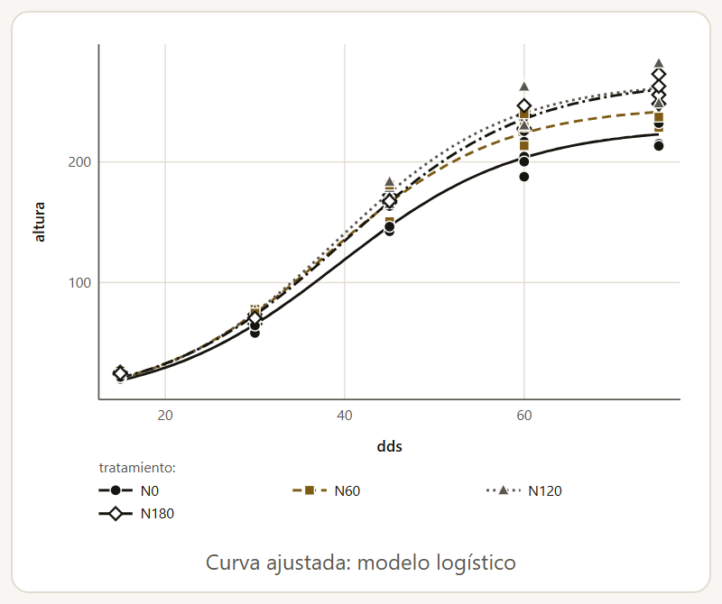
Figura 4.37. Una curva logística por dosis: el nitrógeno cambia la altura final, no el momento del crecimiento.
La comparación por parámetro dice qué cambió: la asíntota (la altura final) difiere entre dosis (F = 9.46, p < 0.001), de 229.3 sin nitrógeno (N0) a 268.0 con N180; el punto de inflexión (cerca de los 39 días en las cuatro) y la escala no difieren (p = 0.414 y 0.895).
El cuadro de parámetros da cada estimado con su EE, su intervalo y su significado, y la gráfica de residuos completa el diagnóstico.
Dosis-respuesta
El modelo log-logístico de 4 parámetros (límites superior d e inferior c, pendiente b y la DE50e) es el estándar para herbicidas, fungicidas y tóxicos (Seefeldt y col., 1995); el de 3 parámetros fija el límite inferior en cero. Los valores derivados son las dosis de 10, 50 y 90 % de efecto, con su EE por el método delta.
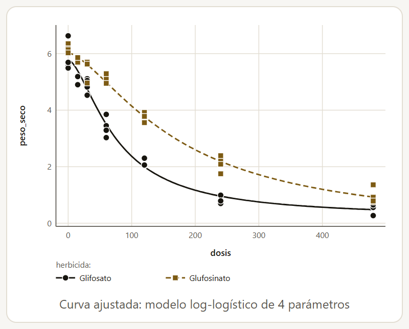
Figura 4.38. El peso seco de la maleza con dos herbicidas: el glifosato llega a la mitad del efecto con menos producto.
La DE50 del glifosato es 75.13 (IC 95 %: 63.32 a 86.94) y la del glufosinato 174.2 (121.6 a 226.7): hace falta 2.3 veces más glufosinato para el mismo efecto. Las curvas difieren (F = 52.14), pero solo por la DE50 (F = 29.45); la pendiente y los dos límites pueden ser comunes (p = 0.732, 0.508 y 0.178).
La DE90 del glufosinato (752.1) cae fuera de las dosis probadas, y su intervalo es muy ancho (237.9 a 1266): extrapolar la curva cuesta precisión.
Los modelos de Brain-Cousens (de 5 parámetros, y de 4 con el límite inferior en cero) agregan un parámetro f para la hormesis: un estímulo a dosis bajas antes de la caída, frecuente con herbicidas en dosis subletales. Con f > 0 y b > 1, los valores derivados son la dosis de máxima respuesta, la respuesta máxima y la DE50, que aquí es la dosis, después del máximo, en que la respuesta baja a la mitad entre d y c; sus EE salen por la derivada implícita, como ED y MAX de drc. En estos modelos el parámetro e ya no es la DE50, y la columna del significado lo dice. Si no hay estímulo, la conclusión lo avisa: en los herbicidas, f sale negativa (−0.027 en el glifosato y −0.017 en el glufosinato), no hay dosis de máxima respuesta y un log-logístico basta.
iEl modelo más sencillo y el intervalo más honesto
Con El de menor AIC (ajusta todos y compara), en los herbicidas gana el log-logístico de 3 parámetros (AIC = 22.56): el de 4 queda a ΔAIC = 2.85, porque sus límites inferiores no se apartan de cero (p = 0.318 y 0.748 en el cuadro de parámetros). Con él, las DE50 son 79.41 (IC 95 %: 70.51 a 88.32) y 166.6 (150.4 a 182.8).
Con Por verosimilitud perfilada, el intervalo del parámetro e del glufosinato (su DE50 en el log-logístico) pasa de 121.6 a 226.7 (Wald) a 137.2 a 294.2: asimétrico, más largo hacia las dosis altas, donde hay menos información. El cuadro de valores derivados sigue con intervalos de Wald por el método delta, simétricos, que con curvas mal acotadas pueden llegar a valores negativos.
Respuesta a la dosis con meseta
Para la fertilización y el riego, cinco modelos que se detienen en un máximo: el lineal-meseta (sube en línea recta hasta la dosis x0 y luego se queda plano), el cuadrático-meseta (una parábola hasta su máximo y plano después), el de Mitscherlich y el de Michaelis-Menten, que se acercan a su asíntota sin llegar; el Michaelis-Menten parte de cero sin dosis y la variante Michaelis-Menten con respuesta sin dosis estima también esa respuesta. Con el maíz y una curva por híbrido, el lineal-meseta explica el 93.7 % de la variación y las curvas difieren (F = 12.38 con 6 y 39 gl).
Cuadro 4.12. La dosis óptima (inicio de la meseta) y el rendimiento en la meseta de cada híbrido, modelo lineal-meseta.
Híbrido
Dosis óptima x0
IC 95 %
Meseta (t/ha)
IC 95 %
H-40
102.1
74.15 – 130.1
6.250
6.051 – 6.449
H-52
84.39
66.81 – 102.0
6.631
6.432 – 6.831
H-66
95.83
75.25 – 116.4
7.191
6.992 – 7.391
La comparación por parámetro precisa la diferencia: entre híbridos cambia el rendimiento sin nitrógeno, a (F = 3.93, p = 0.028); la pendiente y la dosis óptima pueden ser comunes (p = 0.357 y 0.498). Con El de menor AIC (ajusta todos y compara) gana el lineal-meseta (peso de Akaike 0.75), seguido del cuadrático-meseta (ΔAIC = 2.28, peso 0.24), el Mitscherlich (9.13) y el Michaelis-Menten con respuesta sin dosis (12.23). El Michaelis-Menten sin ella queda último, con R² negativo: pasa por cero en la dosis cero, y el maíz rinde más de 4 t/ha sin nitrógeno.
La dosis que da más rendimiento no siempre es la que más conviene: cada kilogramo de nitrógeno cuesta. Con los dos precios, la app calcula la dosis económica óptima, donde la pendiente de la curva iguala la razón de precios (el del insumo entre el del producto): ahí la última unidad de insumo todavía se paga con lo que agrega. Con el grano a 5000 por tonelada y el nitrógeno a 25 por kilogramo, en la misma moneda, la razón es 0.005: cada kilogramo más debe dar al menos 0.005 t (5 kg) de grano. La calculan el cuadrático-meseta, el lineal-meseta, el Mitscherlich y los dos Michaelis-Menten, con su EE por el método delta y la respuesta en esa dosis.
Cuadro 4.13. La dosis óptima y la dosis económica de cada híbrido, modelo cuadrático-meseta, con el grano a 5000 por tonelada y el nitrógeno a 25 por kilogramo.
Híbrido
Dosis óptima
Meseta (t/ha)
Dosis económica
IC 95 %
Respuesta (t/ha)
H-40
147.1
6.246
120.8
85.74 – 155.9
6.180
H-52
127.2
6.628
108.8
78.88 – 138.7
6.582
H-66
154.0
7.241
130.1
98.17 – 162.1
7.181
Con el cuadrático-meseta, la dosis económica queda de 18 a 26 kg/ha por debajo de la óptima y sacrifica menos de 0.07 t/ha de grano. En el lineal-meseta la pendiente es constante: mientras pague el insumo (aquí, de 0.020 a 0.026 t por kilogramo, mucho más que 0.005), la dosis económica es el inicio de la meseta, la misma x0 del cuadro 4.12. Si la curva empieza más plana que la razón de precios, la dosis económica es 0 y la conclusión dice que a esos precios la primera unidad de insumo ya no se paga.
Con la parábola (sección 4.11), el óptimo salía en 147.7 kg/ha; con la meseta, entre 84 y 102. La diferencia es conocida: la parábola obliga a la curva a bajar después del máximo y lo empuja hacia dosis más altas. Cuando los datos se aplanan, como aquí entre 120 y 180 kg, el modelo con meseta suele recomendar menos fertilizante; la comparación por AIC y la gráfica de residuos ayudan a decidir qué forma describe mejor los datos.
4.19Superficies de respuesta
Cuando dos o más factores cuantitativos actúan juntos (nitrógeno y potasio, temperatura y tiempo), la metodología de superficie de respuesta busca la combinación que da la mejor respuesta. Los factores (numéricos, de 2 a 6) se codifican (centro en 0 y paso de 1) para que los coeficientes sean comparables, y la app regresa todo a las unidades originales. La familia trae cinco métodos.
Método
Para qué
Generar un diseño de superficie o de mezclas
Sin datos: las corridas de un central compuesto, un Box-Behnken, un factorial 2k con centros o un simplex para mezclas, en orden al azar y listas para abrir en Datos.
Superficie de respuesta (segundo orden)
Central compuesto o Box-Behnken: falta de ajuste, punto estacionario, análisis canónico y cresta.
Primer orden y ascenso más pronunciado
Factorial con puntos centrales: la curvatura y el camino hacia la mejor respuesta.
Mezclas (modelos de Scheffé)
Componentes que suman lo mismo (sustratos, raciones, formulaciones): la mejor mezcla.
Deseabilidad de varias respuestas
Varias respuestas a la vez (rendimiento alto, costo bajo, una calidad en cierto valor): la combinación más deseable.
Todos corren en el navegador; los modelos están validados contra lm y eigen de R, y los diseños, contra su construcción en R.
Generar el diseño
El generador no necesita datos. Se elige el Diseño (Central compuesto, Box-Behnken, Factorial 2^k con centros, Simplex-látice (mezclas) o Simplex-centroide (mezclas)), el número de Factores o de Componentes (de 2 a 6; de 3 a 5 en el Box-Behnken) y los Puntos centrales o las Repeticiones del centroide (vacío: los de omisión del diseño). En el central compuesto, α fija la distancia de los puntos axiales: Rotable (α = F^¼), con la misma precisión a la misma distancia del centro; Ortogonal; Caras centradas (α = 1), con solo tres niveles por factor, o Dos bloques ortogonales, con la parte factorial y la axial en días o lotes distintos. Desde cinco factores usa la media fracción del factorial. En el simplex-látice se elige además el Grado del látice (2, 3 o 4).
Cuadro 4.14. El tamaño de cada diseño con tres factores o componentes y los puntos centrales de omisión.
Diseño
Corridas
Cómo se forman
Central compuesto rotable
20
8 factoriales, 6 axiales con α = 1.6818 y 6 centros
Central compuesto ortogonal
20
Los mismos, con α = 1.5246
Central compuesto de caras centradas
20
Los mismos, con α = 1
Central compuesto en dos bloques ortogonales
20
Los mismos, con α = 1.8091 y en dos bloques
Box-Behnken
15
3 en el centro; cada factor en −1, 0 y +1
Factorial 23 con centros
12
8 factoriales y 4 centros: para el primer orden y la curvatura
Simplex-látice de grado 2
6
Los vértices y los puntos medios de las aristas
Simplex-látice de grado 3
10
Las mezclas de tercios, una de ellas en el centroide
Simplex-centroide
7
Los vértices, los puntos medios de las aristas y el centroide
La conclusión dice cuántos coeficientes tiene el modelo de segundo orden (o el cuadrático de Scheffé, en las mezclas) y cuántos grados de libertad quedan para el error; si no queda ninguno, pide agregar puntos centrales en los diseños de superficie y repetir algunas mezclas (por ejemplo el centroide) en los de mezclas, como el simplex-látice de grado 2 con tres componentes: 6 mezclas para 6 coeficientes.
Con los Nombres de los factores (opcional), el Nivel bajo (−1) de cada factor (opcional) y el Nivel alto (+1) de cada factor (opcional), separados por comas, el cuadro Corridas del diseño da cada corrida codificada y en unidades originales; si un axial cae en un nivel negativo, la conclusión avisa. En las mezclas, el Total de la mezcla (1 para proporciones, 100 para porcentajes o la masa total) convierte las proporciones en cantidades. Con una Semilla para el orden al azar (opcional), la columna Corrida da el orden de campo al azar, dentro de cada bloque, y la columna Estándar, el orden del diseño; la misma semilla da siempre el mismo orden. Por ejemplo, un central compuesto rotable de dos factores con los nombres «N, K», los niveles bajos «120, 100» y los altos «240, 200» tiene 13 corridas (4 factoriales, 4 axiales con α = 1.4142 y 5 centros), con los axiales en N = 95.15 y 264.85 y en K = 79.29 y 220.71: el diseño del ejemplo del tomate.
El botón Abrir el diseño en Datos (con una columna para la respuesta) lleva las corridas a una hoja nueva (capítulo 2) con las columnas corrida y estandar, el bloque (si hay dos), los factores (en unidades originales si se dieron los niveles o el total; si no, codificados) y una columna «respuesta» vacía para anotar el resultado de cada corrida. La gráfica muestra las corridas en los dos primeros factores codificados o, en una mezcla de tres componentes, en el triángulo.
Superficie de segundo orden
Para diseños central compuesto o Box-Behnken. Se eligen la respuesta, los Factores del diseño (numéricos, de 2 a 6), los Bloques (opcional), el Modelo (Segundo orden (con los cuadráticos) o Primer orden con interacciones) y, en Buscar, La máxima respuesta o La mínima respuesta. Con el tomate en un central compuesto de nitrógeno y potasio, el modelo explica el 97.5 % de la variación y no hay falta de ajuste (F = 0.04 con 3 y 4 gl, p = 0.989).
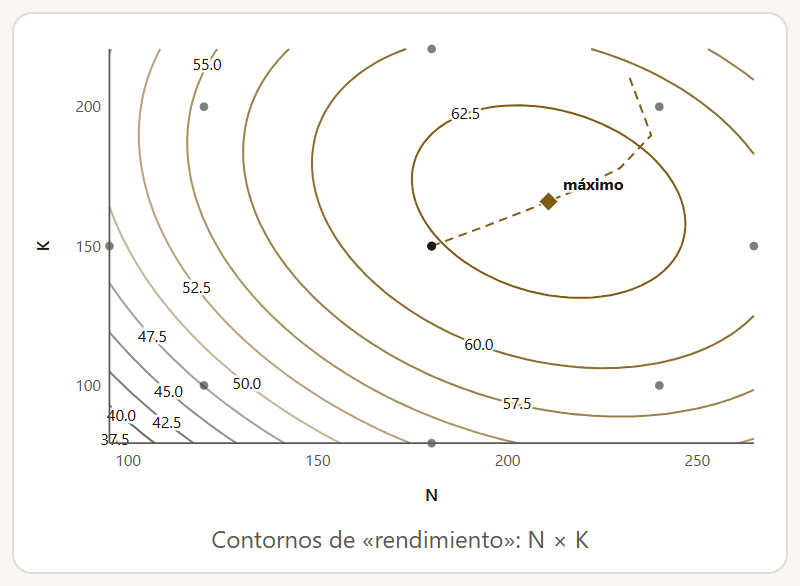
Figura 4.39. Los contornos del rendimiento del tomate: el máximo (rombo) y la cresta (línea discontinua) que sale del centro del diseño.
El punto estacionario es un máximo en N = 210.8 y K = 166.0, con 63.75 de rendimiento estimado (IC 95 %: 62.61 a 64.89). Está dentro de la región experimental: a 0.61 unidades codificadas del centro, cuando los datos llegan a 1.42.
El análisis canónico lo confirma: los dos valores propios son negativos (−2.360 y −4.086); con signos distintos sería un punto de silla, y uno cerca de cero indicaría una cresta, una línea de combinaciones casi igual de buenas.
Los cuadros son el ANOVA por grupos de términos (con la falta de ajuste y el error puro), los coeficientes codificados y en unidades originales, la codificación, el punto estacionario, el análisis canónico y la cresta: la mejor combinación a cada distancia del centro, útil si el óptimo cae fuera de la región o es un punto de silla. Las gráficas son las curvas de nivel de cada par de factores (hasta seis pares), la superficie en 3D de los dos primeros factores, la respuesta sobre la cresta con su banda de confianza y los residuos. Los botones de Girar la superficie en 3D: (⟲, ⟳, ↑ y ↓) la giran a los lados y la muestran desde más arriba o más abajo. Con más de dos factores, los que no están en una gráfica quedan en el punto estacionario si está dentro de la región o, si no, en el centro.
La Codificación de los factores es, por omisión, La del diseño (centro y paso de sus niveles): con cinco niveles simétricos (central compuesto), el paso va del centro al punto factorial y los axiales quedan en ±α. Con A mano: el nivel −1 y el +1 de cada factor aparecen dos campos por factor (N: nivel −1, N: nivel +1…) para usar otra codificación, por ejemplo la del protocolo del ensayo. Las predicciones, el punto estacionario y la cresta en unidades originales no cambian; cambian los coeficientes codificados y las distancias. En el tomate, con N de 100 (−1) a 260 (+1), el coeficiente de N pasa de 4.243 a 5.657 y el punto estacionario queda a 0.50 unidades del centro en lugar de 0.61, pero sigue en N = 210.8 y K = 166.0, con 63.75.
iEl semáforo y lo que se busca
El semáforo tiene tres renglones: la falta de ajuste (en gris si no hay puntos repetidos), los residuos que pasan de 3σ y el punto estacionario, en ámbar si es un punto silla o si cae fuera de la región. Ese último renglón no compara el tipo de punto con lo que se busca: con La mínima respuesta, el máximo del tomate lo deja en verde. Lo que importa entonces está en la conclusión, que busca sobre la cresta: la menor respuesta estimada es 45.66, con N = 102.1 y K = 112.4.
Primer orden y ascenso más pronunciado
Lejos del óptimo, basta un factorial con puntos centrales y un modelo de primer orden: el camino de ascenso más pronunciado dice hacia dónde moverse. Con el tomate, el modelo plano tiene falta de ajuste (F = 11.32, p = 0.017): la respuesta se curva y la app aconseja pasar al segundo orden. El camino sube 51.53 kg de N y 25.62 de K por unidad codificada; su cuadro da las combinaciones y la respuesta predicha.
Mezclas
En una mezcla importan las proporciones, no las cantidades: si sube un componente, baja otro. Los modelos de Scheffé no llevan intercepto y se ajustan sobre las proporciones: cada fila se divide entre su suma, así que sirven proporciones, porcentajes o cantidades, siempre que todas las filas sumen lo mismo (si no, la app lo avisa). Se eligen la respuesta, los Componentes de la mezcla (de 2 a 6; cada fila suma lo mismo), el Modelo de Scheffé (Lineal (cada componente solo), Cuadrático (con las mezclas de dos) o Cúbico especial (con las de tres)) y, en Buscar, La mezcla de mayor respuesta o La mezcla de menor respuesta.
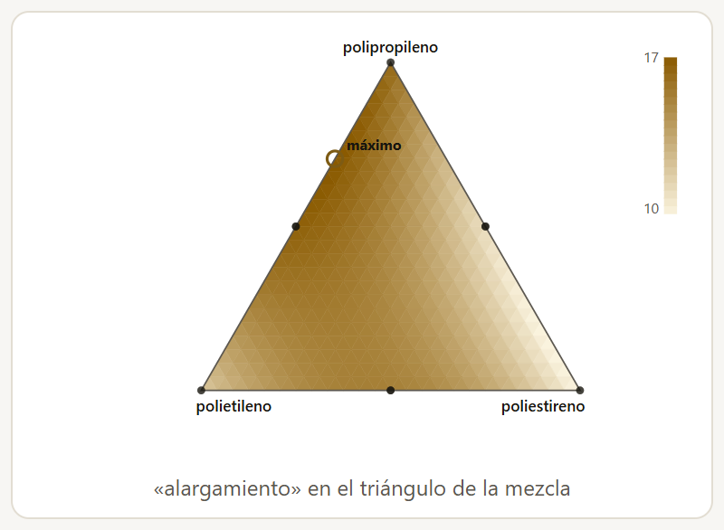
Figura 4.40. El alargamiento del hilo en el triángulo de la mezcla: la mejor mezcla (círculo) junta polietileno y polipropileno, sin poliestireno.
Con el alargamiento del hilo de Cornell (2002), un simplex-látice de polietileno, poliestireno y polipropileno con repeticiones, el modelo cuadrático explica el 95.1 % de la variación. El coeficiente de cada componente es la respuesta del componente puro (11.7, 9.4 y 16.4), y el de cada par, cuánto se aparta la mezcla de lo que suman sus partes: el polietileno con el poliestireno (β = 19.0, p < 0.001) y con el polipropileno (β = 11.4, p = 0.002) son sinergias; el poliestireno con el polipropileno, un antagonismo (β = −9.6, p = 0.005).
La mejor mezcla del modelo, buscada en todo el triángulo, lleva 29.4 % de polietileno y 70.6 % de polipropileno, sin poliestireno: 17.38 de alargamiento estimado (IC 95 %: 16.36 a 18.41), más que cualquier componente puro.
El ANOVA prueba el modelo contra la media (las proporciones suman 1, así que la media ya está en el modelo) y la falta de ajuste contra el error puro de las mezclas repetidas. En el hilo, el cuadrático tiene tantos coeficientes como mezclas distintas (6) y ese renglón del semáforo queda en gris: no hay con qué probarla. El lineal sí la tiene (F = 32.32 con 3 y 9 gl, p < 0.001) y explica solo el 42.7 %. El cúbico especial no se puede estimar con este diseño: la app dice «Las mezclas no permiten estimar el modelo cúbico especial» y explica que necesita el centroide de cada cara de tres componentes. Además del triángulo (con tres componentes), la traza de Cox mueve cada componente de 0 a 1 desde el centroide y reparte el resto por igual entre los demás: la pendiente de cada línea dice cuánto pesa ese componente. El método no trae gráfica de residuos.
Deseabilidad de varias respuestas
Casi nunca interesa una sola respuesta: se quiere rendimiento alto, costo bajo y una calidad en cierto valor. La deseabilidad de Derringer y Suich ajusta a cada respuesta su modelo de segundo orden (con el mismo diseño y la misma codificación), convierte cada predicción en una d entre 0 (inaceptable) y 1 (lo que se busca) y las combina en una deseabilidad globalD, su media geométrica: basta una respuesta fuera de sus límites para que D sea 0. La combinación con la mayor D se busca con el método de Nelder-Mead desde cada punto del diseño y desde el centro.
Se eligen los Factores del diseño (numéricos, de 2 a 6) y las Respuestas que combinar (de 1 a 6). Cada respuesta tiene su recuadro: Buscar (La mayor, La menor o Un valor meta), el Límite inferior y el Límite superior (con el Valor meta entre ellos, si se busca un valor), el Exponente (1: lineal; mayor que 1 exige acercarse más a la meta; con un valor meta, el Exponente (arriba de la meta) rige el otro lado) y la Importancia, que pesa la respuesta en la media geométrica. Al elegirla, cada respuesta busca la mayor, con los límites en su mínimo y su máximo: hay que ajustarlos a lo que se pide de cada una. La Región de búsqueda es El cubo de los niveles del diseño o La esfera del diseño (central compuesto rotable).
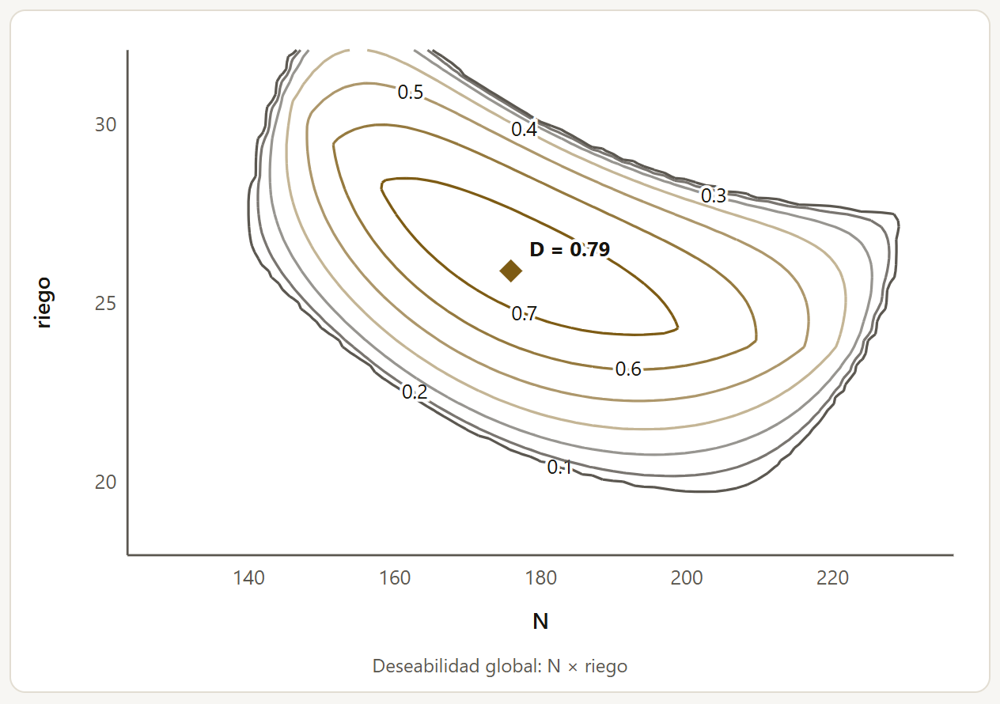
Figura 4.41. La deseabilidad global del fruto: el rombo marca la combinación de nitrógeno y riego que mejor equilibra rendimiento, costo y pH.
En el fruto (un central compuesto de nitrógeno y lámina de riego), con el rendimiento mayor entre 70 y 86, el costo menor entre 11 y 15 y el pH con meta de 6.5 entre 6 y 7, la combinación más deseable es N = 175.9 y riego = 25.89, con D = 0.786. Ahí el rendimiento estimado es 79.50 (d = 0.593), el costo 11.72 (d = 0.819) y el pH 6.500 (d = 1.000). Con la esfera sale el mismo punto, porque queda cerca del centro.
Los cuadros dan la combinación (codificada y original), cada respuesta en ese punto con su d y el R² de su modelo (0.995, 0.992 y 0.976) y la D de cada corrida, con las respuestas predichas: las ocho corridas de la orilla quedan en D = 0, porque alguna respuesta se sale de sus límites, y las cinco del centro, en 0.743.
El método no tiene semáforo: si el modelo de alguna respuesta tiene R² menor que 0.7, la conclusión avisa que su predicción, y con ella la deseabilidad, es poco confiable.
4.20Ensayos en varios ambientes
Los mismos genotipos evaluados en varias localidades o años responden distinto a cada ambiente: es la interacción genotipo × ambiente (G × A). Los cinco métodos de la familia la miden, la describen y ayudan a elegir genotipos estables o adaptados a cada región.
Método
Para qué
Análisis conjunto de varios ambientes
El ANOVA conjunto con la interacción G × A, el análisis de cada ambiente y la homogeneidad de sus errores.
Análisis en dos etapas (una varianza por ambiente)
Las medias ajustadas de cada ambiente y el análisis conjunto ponderado: para errores distintos entre ambientes o genotipos que faltan.
Estabilidad
La regresión sobre el índice ambiental y seis medidas más: Wricke, Shukla, Lin y Binns, Huehn, Kang y Annicchiarico.
AMMI
Los ejes de la interacción con sus pruebas, el ASV, el WAAS y los biplots AMMI1 y AMMI2.
Biplot GGE
Quién ganó dónde, media contra estabilidad, el genotipo y el ambiente ideales y la comparación de dos genotipos.
Todos piden la Variable de respuesta, los Genotipos (variedades, híbridos, líneas), los Ambientes (localidades, años, fechas) y, si los hay, las Repeticiones o bloques (opcional); sin ellas (— una media por celda —), cada fila es la media de un genotipo en un ambiente. También piden si Lo mejor esLa mayor respuesta o La menor respuesta, y el nivel de significancia. Hacen falta al menos 3 genotipos y 3 ambientes (2 en el GGE). Corren en el navegador y se validaron contra lm y svd de R. Al pie del análisis conjunto y de la estabilidad, la franja «Continúa en la suite LABG» sugiere ClusteringPro, para agrupar genotipos o ambientes; al pie del AMMI y del GGE, también PCAPro (capítulo 10).
iCuando falta un genotipo en un ambiente
Salvo el análisis en dos etapas, los métodos necesitan la tabla genotipo × ambiente completa. La casilla Imputar las celdas genotipo × ambiente vacías (EM-AMMI), marcada por omisión, llena cada celda vacía con el modelo aditivo más los ejes de la interacción que se pidan en Ejes de la imputación (de 0, solo efectos aditivos, a 3; 1 por omisión) y repite hasta que el valor deja de cambiar. Si en la avena faltaran G2 en E5 y G7 en E12, se imputarían 4.173 y 1.660 en 31 vueltas: la conclusión y el cuadro Celdas imputadas por EM-AMMI los listan, la interacción pierde un grado de libertad por celda (115 en lugar de 117) y el semáforo lo marca en ámbar (en rojo si pasa del 10 % de las celdas). Sin la casilla, la app se detiene y dice qué combinaciones faltan.
Análisis conjunto
Con la avena de Olivoto y Lúcio (2020), 10 genotipos en 14 ambientes con tres repeticiones, el ANOVA conjunto encuentra la interacción (F = 2.76, p < 0.001): el orden de los genotipos cambia entre ambientes. Los genotipos se prueban de dos maneras: contra el error (F = 14.93) y contra la interacción, como corresponde si los ambientes son una muestra de muchos posibles (F = 5.41, la misma del modelo mixto de la sección 4.15). G8 tiene la mayor media general (3.004).
El método analiza además cada ambiente por separado (media, CME, CV y la F de los genotipos) y revisa la homogeneidad de los errores: en la avena, el mayor CME es 6.71 veces el menor (Bartlett p < 0.001), así que las pruebas del análisis conjunto son aproximadas, y el semáforo lo dice. Con 12 genotipos o menos, la gráfica Cada genotipo en los ambientes une las medias de cada genotipo en los ambientes ordenados de menor a mayor media: las líneas que se cruzan son la interacción.
Análisis en dos etapas
Cuando los errores de los ambientes difieren tanto como en la avena, o faltan genotipos en algunos ambientes, conviene el análisis en dos etapas. En la primera, cada ambiente se analiza solo y da la media ajustada de cada genotipo con su varianza; en la segunda, esas medias se combinan por mínimos cuadrados generalizados, cada una pesada según su precisión, y la varianza de la interacción se estima por REML. No imputa: usa las medias que hay. Cada ambiente necesita error propio, así que hacen falta repeticiones o varias parcelas por genotipo.
En la avena, los genotipos difieren (Wald: F = 5.99 con 9 y 117 gl, p < 0.001), G8 tiene la mayor media ajustada (3.016 ± 0.07732) y la varianza de la interacción, ya sin el error de cada ambiente, es 0.05407. El semáforo de los errores queda en ámbar (razón máxima/mínima de 6.71): es justo el caso para el que sirve. Los cuadros son la primera etapa (media, CME, CV y genotipos de cada ambiente), las medias ajustadas junto a la media simple y la prueba de los genotipos; la gráfica da cada media ajustada con su intervalo de 95 %. Cuando hay repeticiones, el asistente (sección 4.2) lo incluye entre los pasos siguientes de cualquier análisis de esta familia.
Estabilidad
Varias maneras de medirla. La regresión sobre el índice ambiental (Finlay y Wilkinson; Eberhart y Russell) da a cada genotipo una pendiente b (1: responde como el promedio; mayor: aprovecha los buenos ambientes; menor: se adapta a los malos) y una varianza de las desviaciones S²d (0: su respuesta es predecible). La ecovalencia de Wricke y la varianza de Shukla dicen cuánto aporta cada genotipo a la interacción, y la superioridad de Lin y Binns (Pi) cuánto se aleja del mejor de cada ambiente. Las estadísticas no paramétricas de Huehn trabajan con rangos: S1 y S2 miden cuánto cambia de lugar cada genotipo entre ambientes (con su prueba Z), y S3 y S6 juntan respuesta y estabilidad. El YS de Kang da puntos a cada genotipo por su rango de rendimiento, le resta por su varianza de Shukla y selecciona los que pasan del promedio; necesita repeticiones. El índice de confianza de Annicchiarico (Wi) pone la respuesta en % de la media de cada ambiente y castiga la inestabilidad (Wi = media − z·DE), en todos los ambientes, en los favorables y en los desfavorables; solo se calcula cuando lo mejor es la mayor respuesta.
Las opciones son el Error estándar de b, De la regresión de cada genotipo o Del error combinado de los ambientes, y el Riesgo del índice de Annicchiarico (0.25, 0.10 o 0.05): un riesgo menor castiga más la inestabilidad.
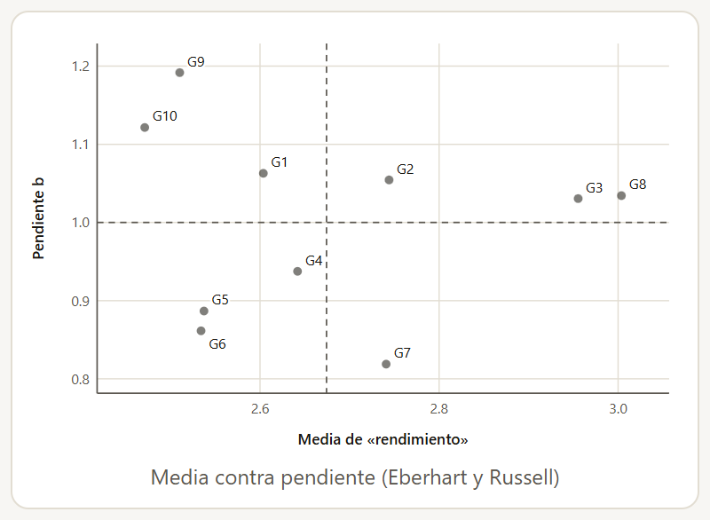
Figura 4.42. Media contra pendiente: a la derecha y cerca de la línea de b = 1 están los genotipos buenos en todas partes.
Cuadro 4.15. Tres genotipos de avena según cada medida de estabilidad.
G8
G3
G10
Media
3.004
2.955
2.471
b
1.034
1.031
1.122
p de S²d = 0
0.013
0.840
< 0.001
Wricke (% de G × A)
8.23
2.32
25.48
Lin y Binns Pi
0.04117
0.04099
0.3437
Huehn S1
2.97
2.70
4.57
Kang YS
5
12
−9
Annicchiarico Wi (%)
107.41
107.98
77.54
ASV (AMMI)
0.574
0.113
1.225
WAAS (AMMI)
0.327
0.106
0.652
G8 tiene la media más alta pero desviaciones significativas (S²d > 0): rinde mucho, aunque no siempre lo esperado. G3, casi igual de productivo, cumple b = 1 y S²d = 0, es el más estable por Wricke y el mejor por Lin y Binns: el genotipo ideal de Eberhart y Russell. Las demás medidas coinciden: G3 es el que menos cambia de lugar entre ambientes (Huehn), el de mayor YS de Kang y el de mayor Wi de Annicchiarico, apenas arriba de G8. Kang selecciona siete genotipos (G1 a G6 y G8). G10, el de menor media, es también el que más aporta a la interacción. Este resultado no repite el ANOVA conjunto: si hay interacción se ve en el análisis conjunto.
Biplot GGE
El biplot GGE junta el efecto del genotipo y su interacción (G + G × A), que es lo que importa para elegir. Se elige la Tabla (Centrada por ambiente o Centrada y dividida por la desviación de cada ambiente) y la Partición del valor singular: Simétrica, Por genotipo (para comparar genotipos) o Por ambiente (para comparar ambientes). En la avena, los dos primeros ejes explican el 64.34 % de G + G × A.
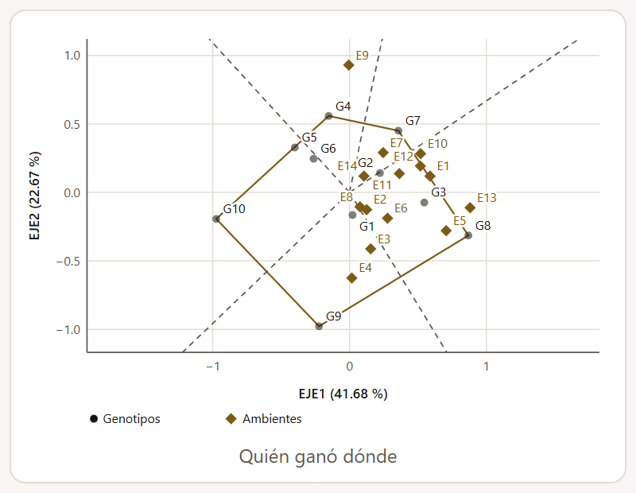
Figura 4.43. Quién ganó dónde: el genotipo del vértice de cada sector es el mejor en los ambientes que caen en él.
En quién ganó dónde, el polígono une los genotipos más alejados del origen y los rayos dividen el plano en sectores. En la avena hay 4 sectores, que la conclusión llama «megaambientes posibles»: G8 gana en nueve ambientes, G9 en E3 y E4, G7 en E7 y E14 y G4 en E9. Con los datos de un solo ciclo no son más que eso: para declararlos megaambientes, el patrón tiene que repetirse entre años (Yan y col., 2000).
La segunda gráfica, media contra estabilidad, ordena los genotipos sobre el eje del ambiente promedio: G8 tiene el mejor desempeño y, entre los tres mejores, G3 es el más estable.
Dos gráficas más ponen un genotipo ideal (alto y estable) y un ambiente ideal (que discrimina mucho entre genotipos y representa a los demás) sobre el eje del ambiente promedio, con anillos de distancia, y sus cuadros ordenan genotipos y ambientes por su distancia a ellos. En la avena, el genotipo más cercano al ideal es G8 y el ambiente, E13, con cualquiera de las tres particiones (las notas de los cuadros recomiendan la partición por genotipo para el primero y por ambiente para el segundo). Con Comparar dos genotipos (opcional) y … con, una gráfica traza la recta que los une y la perpendicular que divide a los ambientes, y un cuadro compara en cada ambiente la diferencia que predice el biplot con la observada: G8 supera a G3 en 13 de los 14 ambientes según el biplot (todos menos E9), pero en solo 9 según las medias. El biplot resume dos ejes; las decisiones finas se toman con los datos.
AMMI
El modelo de efectos principales aditivos e interacción multiplicativa descompone la interacción en ejes (componentes principales de la tabla de interacciones). La app prueba cada eje con la F de Gollob y, con la FR de Cornelius, la interacción que queda después de n ejes, que es más confiable: en la avena, Cornelius retiene 3 ejes y Gollob 4; los dos primeros explican el 66.22 % de la interacción. Los cuadros dan los puntajes de genotipos y ambientes y el ASV de Purchase (menor, más estable: G3, con 0.11), y las gráficas son los biplots AMMI1 (media contra el eje 1) y AMMI2 (eje 1 contra eje 2).
El WAAS promedia los puntajes absolutos de cada genotipo en varios ejes, pesados por el % de la interacción de cada uno (menor, más estable), y el WAASY lo combina con la respuesta, las dos reescaladas de 0 (la peor) a 100 (la mejor). Las opciones son los Ejes del WAAS (Los significativos (F de Gollob), o de 1 a 5) y el Peso de la respuesta en el WAASY (%) (0: solo estabilidad; 100: solo la respuesta; 50 por omisión). En la avena, con los 4 ejes significativos, G3 es el más estable (WAAS = 0.106) y el mejor por WAASY (95.46), seguido de G8 (79.81). La gráfica Respuesta contra estabilidad (WAAS) cruza la media general con el WAAS medio: el cuadrante de abajo a la derecha junta respuesta alta y estabilidad.
iDos maneras de contar los ejes
La conclusión del AMMI cuenta los ejes significativos por Gollob seguidos desde el primero; el WAAS cuenta todos los ejes con p menor que el nivel de significancia y usa ese número de ejes, desde el primero (sin repeticiones no hay error para probarlos y usa todos). Si un eje no significativo quedara entre dos significativos, los dos números diferirían; en la avena coinciden (4). Para fijar otro número, elige los ejes en Ejes del WAAS.
4.21Análisis multivariado
Cuando en cada unidad se miden varias variables a la vez (el largo, el ancho, el peso y la pared de un fruto), analizarlas una por una repite pruebas y desperdicia la relación entre ellas. La MANOVA prueba los tratamientos sobre el conjunto, y el análisis discriminante busca la combinación de variables que mejor separa los grupos. Los dos corren en el navegador, validados contra manova y summary.manova de R y contra lda del paquete MASS.
MANOVA
Se eligen las Variables respuesta (de 2 a 10), los Factores de tratamiento (hasta 3, cruzados), los Bloques (opcional), la Prueba principal y el Nivel de significancia. La prueba principal es la que usa la conclusión: Pillai, la más robusta y la que se usa por omisión; Wilks; Hotelling-Lawley; o Roy, que da una cota superior de F y un p optimista. El cuadro MANOVA: las cuatro pruebas trae las cuatro. Las sumas de cuadrados son secuenciales (tipo I), como en summary.manova: entra primero el bloque y después los factores, en el orden de sus columnas en la tabla (no en el orden en que se marcan); con datos desbalanceados, ese orden cambia la prueba de cada término.
Con cuatro variedades de chile en tres bloques, cinco frutos por parcela, la variedad cambia el conjunto de las cuatro medidas (Pillai = 2.668, F(12, 159) = 106.40, p < 0.001). El bloque queda en el límite: Pillai da p = 0.063, y Roy, con su p optimista, 0.005; por eso conviene decidir con la prueba principal y no con la más favorable. El semáforo revisa que haya suficientes grados de libertad del error para el número de respuestas (verde con al menos el triple; aquí, 54 para 4) y la igualdad de las matrices de covarianza con la prueba M de Box entre las combinaciones de tratamientos, sin los bloques (χ²(30) = 30.13, p = 0.459). Los otros cuadros dan el ANOVA de cada respuesta por separado, la prueba M de Box grupo por grupo y las medias de cada factor; la gráfica muestra el perfil de las medias estandarizadas (con 12 niveles o menos).
!Los frutos de una parcela no son repeticiones
El ejemplo trae los cinco frutos de cada parcela en filas separadas, y la MANOVA toma cada fruto como una repetición: el error queda con 54 grados de libertad cuando el experimento solo tiene 12 parcelas. Es la pseudorrepetición que advierte la ficha del método (capítulo 9), y hace las pruebas demasiado optimistas. Para probar las variedades con el error correcto, promedia los frutos de cada parcela en tu hoja de cálculo e importa la tabla de medias (SigmaPro no tiene una herramienta para promediar filas). El cuadro de abajo compara los dos análisis.
Cuadro 4.16. La MANOVA del chile con cada fruto como repetición y con las medias de las parcelas (prueba de Pillai).
Cada fruto como repetición (60 filas)
Medias de las parcelas (12 filas)
Error
54 gl
6 gl
Variedad
Pillai = 2.668, F(12, 159) = 106.40, p < 0.001
Pillai = 2.969, F(12, 15) = 120.26, p < 0.001
Bloque
Pillai = 0.258, F(8, 104) = 1.93, p = 0.063
Pillai = 1.106, F(8, 8) = 1.24, p = 0.386
Semáforo: grados de libertad
Verde: 54 gl para 4 respuestas
Ámbar: 6 gl para 4 respuestas
Semáforo: M de Box
Verde: χ²(30) = 30.13, p = 0.459
Gris: con 3 parcelas por variedad y 4 respuestas, ningún grupo tiene más unidades que variables y la prueba no se calcula (tampoco sale su cuadro)
Las variedades difieren de todos modos, pero con las medias el bloque deja de estar en el límite y el semáforo pide prudencia: con 6 grados de libertad del error, cuatro respuestas son muchas. Con pocas parcelas conviene analizar menos respuestas, las más importantes o las menos redundantes.
Debajo de la gráfica, dos botones, CSV para PCAPro (componentes principales) y CSV para ClusteringPro (conglomerados), bajan solo las variables del análisis con su grupo (en la MANOVA, con el bloque y los factores), listas para abrirlas en esas apps de la suite desde su bloque de datos. Al pie del resultado, la franja Continúa en la suite LABG sugiere las mismas dos apps (sección 10.2); su botón Enviar datos a … baja, en cambio, la tabla completa del bloque Datos (sección 10.4).
Análisis discriminante lineal
Se eligen los Grupos que se quieren separar y las Variables que los describen (de 2 a 15). El resultado da las funciones discriminantes con la proporción de la separación que explica cada una, sus coeficientes, los centroides de los grupos y la clasificación con validación cruzada: cada unidad se clasifica con la función ajustada sin ella, lo que da una tasa de acierto honesta (la que usa los mismos datos del ajuste es optimista). El semáforo revisa que el grupo más chico tenga más unidades que variables y la igualdad de las covarianzas entre los grupos (M de Box), que también trae su cuadro.
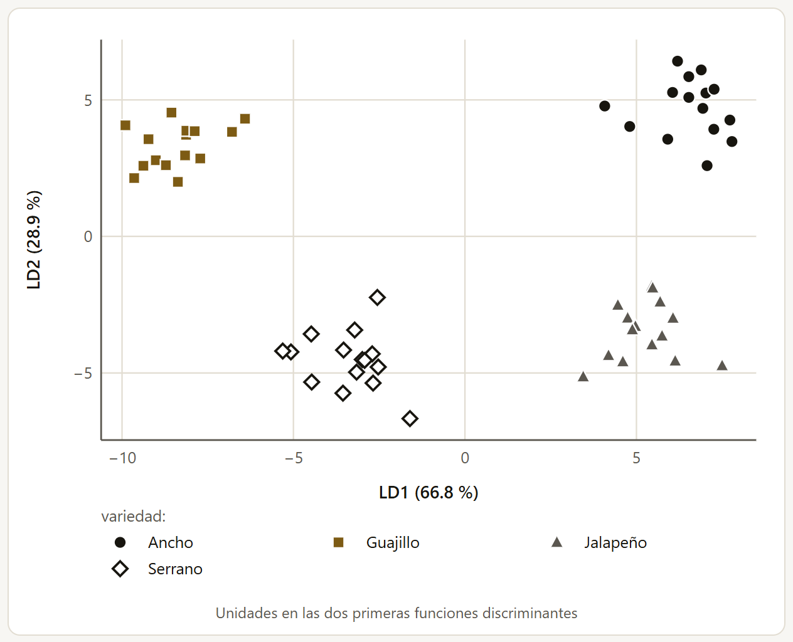
Figura 4.44. Los 60 frutos en las dos primeras funciones discriminantes: cuatro nubes sin traslape.
Con los chiles hay tres funciones; la primera explica el 66.8 % de la separación y la segunda el 28.9 %. Con validación cruzada, los 60 frutos quedan en su variedad (100 %). Aquí cada fruto sí es una unidad: lo que se quiere es clasificar frutos.
Los coeficientes no están estandarizados: solo se comparan entre variables de escalas parecidas. La app lo advierte al nombrar las variables de más peso en la primera función.
La franja de la suite propone ClusteringPro, para buscar primero los grupos naturales de los datos, y PCAPro; los dos botones de CSV son los mismos de la MANOVA.
4.22Potencia, repeticiones y muestreo
Antes del ensayo: cuántas repeticiones, cuántas plantas o cuántas semillas hacen falta para detectar una diferencia que importa o para estimar con el error que se acepta. Seis de los ocho métodos de la familia Tamaño de muestra, potencia y muestreo no necesitan datos. Con datos cargados están en el catálogo como cualquier otro, con la marca No necesita datos; con la hoja vacía, el botón Calcular un tamaño de muestra o una potencia del bloque Explorar los habilita, y el catálogo del bloque Análisis muestra entonces solo esta familia.
Los cálculos de potencia preguntan ¿Qué quieres calcular?: el tamaño de muestra, la potencia de un tamaño dado o el efecto que se puede detectar (la diferencia entre medias, la variación entre las medias del ANOVA o la correlación; en dos proporciones, solo el tamaño o la potencia). Usan las mismas fórmulas que R (power.t.test, power.anova.test, power.prop.test y pwr.r.test del paquete pwr) y dibujan la potencia según el tamaño de muestra. La Hipótesis alternativa puede ser bilateral o unilateral; con la unilateral, la app prueba la dirección positiva, así que la diferencia o la correlación se escriben como números positivos (con un número negativo, la potencia sale en 0 % y el tamaño de muestra no tiene sentido).
Figura 4.45. Para detectar una diferencia de 0.5 con una desviación estándar de 0.4, hacen falta 12 unidades por grupo.
Cuadro 4.17. Los seis cálculos sin datos, con un ejemplo de cada uno.
Método
Con
Resultado
Medias (prueba t)
Diferencia 0.5, DE 0.4, potencia 0.8
12 unidades por grupo (11.09)
ANOVA de varios tratamientos
Medias 4.2, 4.8, 5.1 y 5.6; DE del error 0.6
5 repeticiones por tratamiento (4.915)
Dos proporciones
65 % contra 80 %
138 unidades por grupo (137.9)
Correlación
40 pares, potencia 0.8
Se detecta una correlación de 0.4265
Repeticiones de un experimento
CV 12 %, diferencia de 15 % de la media, 6 tratamientos en bloques
11 repeticiones
Tamaño de muestra para estimar
Proporción 0.3 con error ± 0.05, población de 900
238 unidades (323 sin la población finita)
En el ANOVA, las Medias esperadas de los tratamientos (opcional), separadas por comas, sustituyen al número de tratamientos y a la varianza de las medias. Para despejar La variación entre medias que se puede detectar, deja vacías las medias y escribe los Tratamientos: en ese modo las medias no se usan. Con 4 tratamientos, 5 repeticiones, una DE del error de 0.6 y potencia de 0.8, se detecta una varianza entre medias de 0.3349 (f de Cohen = 0.8352); el código R deja en NULL lo que se despeja.
Las repeticiones de un experimento usan la fórmula de Cochran y Cox (1957) con el Coeficiente de variación esperado (%) de ensayos anteriores, la Diferencia que interesa detectar (% de la media), los Tratamientos y el Diseño (bloques completos al azar o completamente al azar). Los grados de libertad del error dependen de las repeticiones, así que la app las busca hasta que la fórmula se cumple: el cuadro Búsqueda de las repeticiones muestra cada paso y la gráfica compara las repeticiones requeridas con las puestas. En el ANOVA y en las repeticiones, la franja Continúa en la suite LABG propone AgriDesign para sortear el ensayo y hacer su croquis.
El tamaño de muestra para estimar pregunta ¿Qué se quiere estimar? (una media o una proporción), la variación esperada, el error que se acepta y el Tamaño de la población (0 si es muy grande). Usa las fórmulas de Cochran (1977): n₀ = (z·S/e)² para la media y n₀ = z²·p(1 − p)/e² para la proporción. Con una población finita, la media se corrige con n = n₀/(1 + n₀/N) y la proporción con n = n₀/[1 + (n₀ − 1)/N], porque la varianza de una proporción lleva el factor (N − n)/(N − 1). En el ejemplo del cuadro, n₀ = 322.7 y n = 237.7, que se redondea hacia arriba a 238. La gráfica muestra cuántas unidades hacen falta para cada error: reducir el error a la mitad cuadruplica la muestra cuando la población es grande.
Estimar con una muestra
Los otros dos métodos analizan una muestra ya tomada, en la Variable medida en la muestra. El muestreo aleatorio simple estima la media o la proporción (Estimar: automático, que da la proporción si la columna es 0/1) y, con el Tamaño de la población (0 si es muy grande o desconocido), el total, con la corrección por población finita; su gráfica muestra cómo se estrecha el intervalo al crecer la muestra. El muestreo estratificado pide además los Estratos (huertas, lotes, regiones, tipos de suelo) y el Tamaño de la población de cada estrato (N_h), un campo por estrato con todas las unidades que hay en él, no solo las muestreadas. Con Repartir una muestra nueva de (opcional), propone cómo repartirla entre los estratos: proporcional y de Neyman.
Con el aguacate de tres huertas (1580 árboles), la estimación simple da una media de 51.89 kg por árbol (EE = 1.975) y la estratificada 54.32 (IC 95 %: 52.00 a 56.65), con un error estándar bastante menor (1.142) y 32.29 grados de libertad efectivos (Satterthwaite). La diferencia tiene explicación: la muestra tomó 16 árboles de la Planicie, que tiene el 57 % de los árboles y los más productivos, y 20 de las otras dos huertas, que tienen el 43 %; la estimación simple los pesa igual y se va hacia abajo, la estratificada pesa cada huerta por su tamaño. Por eso este ejemplo sirve para comparar los dos métodos, pero la estimación correcta para estos datos es la estratificada.
Figura 4.46. El aguacate por huerta: la media estratificada pesa cada huerta por su tamaño, y la asignación de Neyman avisa cuando el redondeo pasa del total pedido.
Para una muestra nueva de 60, Neyman toma 17 en la Ladera, 29 en la Planicie y 16 en la Vega: más en los estratos grandes y en los variables. Cada estrato se redondea hacia arriba, así que la suma puede pasar del total; cuando pasa, la conclusión lo dice («Al redondear hacia arriba suman 62»). El cuadro Cómo repartir una muestra de 60 trae los valores sin redondear de las dos asignaciones (proporcional: 15.95, 34.18 y 9.87; Neyman: 16.14, 28.22 y 15.63) para ajustarlos a mano. Si todos los estratos se midieron completos (cada Nh igual a lo muestreado), es un censo: no hay error de muestreo, el EE es 0, el intervalo se reduce al valor estimado y la conclusión lo explica.
4.23Análisis de supervivencia
Cuando la respuesta es el tiempo hasta que algo ocurre (germinar, florecer, morir) y en algunas unidades no ocurrió antes de terminar el ensayo, esas unidades están censuradas: se sabe que su tiempo es mayor que el observado, pero no cuánto. Promediar los días sin ellas, o con ellas como si hubieran germinado el último día, sesga el resultado; el análisis de supervivencia las usa correctamente. Los dos métodos se validaron contra el paquete survival de R.
Ambos piden el Tiempo hasta el evento (o hasta la censura) y el Evento (1 = ocurrió, 0 = censura): 0 si la unidad terminó el ensayo sin el evento o se perdió. Los Estratos (opcional) (lotes, sitios, fechas de siembra) dan a cada estrato su propio riesgo base, y los grupos se comparan dentro de ellos. El Nivel de confianza cambia los intervalos; las conclusiones y el semáforo deciden siempre con α = 0.05.
Curvas de Kaplan-Meier
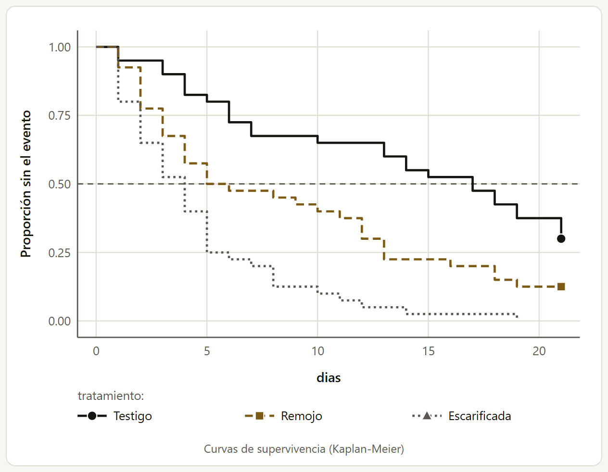
Figura 4.47. La proporción de semillas sin germinar en el tiempo: la escarificación acelera la germinación.
Con 120 semillas de frijol en tres tratamientos, revisadas cada día hasta el día 21, la mediana de los días a germinar es 17 en el testigo, 5.5 con remojo y 4 con escarificación, y las curvas difieren (log-rank χ²(2) = 37.89, p < 0.001). 17 semillas (14.2 %) no germinaron: están censuradas, y el semáforo lo informa (se pone en ámbar si pasan de la mitad).
La línea discontinua marca el 0.5: donde la cruza cada curva está su mediana. Las marcas al final de las curvas son las unidades censuradas.
Los Grupos que se comparan (opcional) pueden ser hasta 12; sin ellos sale una sola curva, con su banda. Las opciones son el Intervalo de la curva (log, el de survival; log-log; o lineal) y, con grupos, la Prueba para comparar las curvas: log-rank, con el mismo peso a todos los tiempos, o Peto-Peto, que pesa más los tiempos tempranos (con el frijol, χ²(2) = 31.47); los estratos aparecen al elegir los grupos (estratificada por lote, χ²(2) = 32.81). Los cuadros dan la mediana de cada grupo con su intervalo y los cuartiles 25 % y 75 % (un «—» cuando la curva no baja hasta ahí, como el 75 % del testigo, que se queda en 0.30), la tabla de la prueba (eventos observados contra esperados) y la tabla de supervivencia en cada tiempo con eventos.
Modelo de Cox
El modelo de riesgos proporcionales de Cox mide el efecto de los Factores (tratamientos, variedades) y de las Covariables numéricas sobre el riesgo instantáneo del evento, como una razón de riesgos (HR): mayor que 1, el evento llega antes. En los factores, cada nivel se compara con el primero. Los Tiempos empatados se tratan con Efron (el de survival, mejor con días enteros) o con Breslow.
Con el frijol, el tratamiento y el peso de la semilla, estratificado por lote: la escarificación multiplica el riesgo de germinar por 4.459 (IC 95 %: 2.628 a 7.568) y el remojo por 2.096, frente al testigo. El HR del peso es 0.02058 por gramo; como las semillas pesan alrededor de 0.4 g, conviene leerlo por décima de gramo: 0.020580.1 = 0.678, un tercio menos de riesgo por cada 0.1 g más. El semáforo revisa la proporcionalidad de los riesgos (como cox.zph: p = 0.753, sin evidencia de que los efectos cambien con el tiempo), que haya al menos 10 eventos por coeficiente (aquí, 103 eventos para 3 coeficientes: 34.33) y que el ajuste haya convergido. Los cuadros incluyen las tres pruebas globales y la concordancia C de Harrell (0.690); la gráfica pone cada HR con su intervalo en escala logarítmica, con la línea de HR = 1.
4.24Series de tiempo
Una serie de tiempo es una variable medida a intervalos iguales (cada mes, cada semana, cada año), donde los valores cercanos se parecen. Los cuatro métodos piden la Variable medida en el tiempo y la Columna del tiempo (para ordenar la serie), y se validaron contra R (acf, pacf, Box.test, decompose, arima y el paquete trend). El ejemplo es una estación meteorológica con la lluvia y la temperatura de cada mes de 2017 a 2024.
La columna del tiempo es numérica (1, 2, 3…, o un número de periodo) o de tipo fecha, y cada tiempo debe aparecer una sola vez; si las filas ya están en orden, basta con — las filas ya están en orden —. La columna solo ordena la serie: los cálculos suponen intervalos iguales, así que con fechas debe haber una por periodo (por ejemplo, una por mes). Cuidado con una tabla de años × meses pasada a larga con Ancha ⇄ larga… (sección 2.11): queda ordenada por mes y luego por año, así que «las filas ya están en orden» analizaría una serie desordenada. Crea antes una columna de tiempo continua y úsala como columna del tiempo; como el año suele quedar como factor, la expresión lo convierte en número: (as.numeric(anio) - 2017) * 12 + mes da 1 en enero de 2017 y 96 en diciembre de 2024. La autocorrelación y la descomposición necesitan la serie completa, sin faltantes; Mann-Kendall los omite y el ARIMA los deja en su lugar.
Autocorrelación: la ACF y la PACF con su banda, y las pruebas de Ljung-Box y Box-Pierce. Los Rezagos de las pruebas de Ljung-Box y Box-Pierce (0 = 10) conviene ponerlos en 12 o 24 con datos mensuales; con 12, la lluvia mensual está muy autocorrelacionada (Ljung-Box Q(12) = 427.37, p < 0.001), con el ciclo anual a la vista: positiva a 1 mes, negativa a 6. La conclusión nombra solo los primeros ocho rezagos fuera de la banda; el 12 (0.76), el del ciclo anual, está en el cuadro y en la gráfica. Para revisar los residuos de un modelo ARMA, los Parámetros ajustados antes (fitdf) descuentan sus grados de libertad.
Descomposición: separa la tendencia (media móvil de un ciclo), el componente estacional y el residuo, aditiva o multiplicativa (Tipo), con las Observaciones por ciclo (frecuencia): 12 para meses. En la temperatura, la estacionalidad explica el 96.01 % de la variación sin tendencia. Las gráficas muestran la serie con su tendencia, el componente estacional y el residuo.
Tendencia monótona: la prueba de Mann-Kendall (no supone normalidad) y la pendiente de Sen, resistente a valores extremos, con el Nivel de confianza de la pendiente. La temperatura no muestra tendencia en los ocho años (τ = 0.058, p = 0.403; pendiente de Sen de 0.008333 por mes, IC 95 %: −0.01364 a 0.02881).
Como en la supervivencia, las conclusiones de la autocorrelación deciden con α = 0.05; el nivel elegido cambia la banda.
ARIMA y pronóstico
El modelo ARIMA describe la serie con sus valores pasados (autorregresivos, p), sus errores pasados (medias móviles, q) y las diferencias que la vuelven estable (d), con su versión estacional (P, D, Q y el Periodo estacional (1 = sin parte estacional)). En el Orden del modelo se elige Lo elijo yo y se escriben p y q, o se pide Buscar el de menor AIC (p, q = 0…2; P, Q = 0…1), que usa la d y la D que se pongan y, con periodo, prueba 36 modelos en unos segundos. Sin diferencias, la Media de la serie se estima o se omite. Al final van los Pasos a pronosticar (hasta 120) y el Nivel del intervalo de pronóstico.
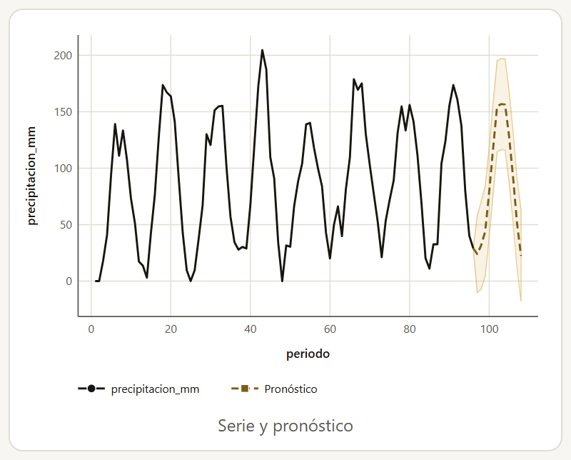
Figura 4.48. La lluvia mensual y su pronóstico a doce meses con el ARIMA(1, 0, 0)(0, 1, 1)12.
Con la lluvia, el ARIMA(1, 0, 0)(0, 1, 1)12 deja residuos sin autocorrelación (Ljung-Box Q(22) = 15.46, p = 0.842): el semáforo en verde. Es también el que elige la búsqueda por AIC con d = 0 y D = 1 (AIC = 739.14, el menor de los 36). El pronóstico repite el pico del verano, cerca de 157 mm.
Los límites inferiores de algunos meses secos son negativos (−10.33 mm en el primero): el modelo no sabe que la lluvia no baja de cero. Para respetarlo, conviene modelar una transformación de la variable (sección 2.9).
Los cuadros dan los coeficientes con su EE, el ajuste (σ², log-verosimilitud, AIC, BIC y la prueba de Ljung-Box de los residuos, con 2 periodos de rezagos si hay parte estacional y 10 si no), el pronóstico paso a paso con su intervalo y, si se buscó el orden, los modelos comparados por AIC. Una segunda gráfica muestra la autocorrelación de los residuos: si el modelo captó la estructura, sus barras quedan dentro de la banda.
5
Bloque 5 · Resultados
Resultados: el Reporte LABG
Cada análisis que vale la pena conservar va al reporte, donde se junta con los demás en orden, con los cuadros y las figuras numerados de corrido, sus supuestos, un párrafo para la tesis o el artículo, los detalles técnicos y el código R. El reporte no guarda resultados fijos: guarda los pedidos, y se recalcula con los datos que haya, así que corregir un dato corrige todo el reporte.
5.1Agregar al reporte
5.2La cabecera y el índice
5.3Cada análisis del reporte
5.4El párrafo para la tesis o el artículo
5.5Detalles técnicos y código R
5.6Un reporte vivo
5.1Agregar al reporte
En Explorar y en Análisis, cada resultado trae en su cabecera, a la derecha de ⓘ ¿Qué es este análisis?, el botón Agregar al reporte. Al pulsarlo, un aviso confirma cuántos análisis lleva el reporte («Agregado al reporte (3 análisis). Míralo en el bloque Resultados.») y el botón cambia a En el reporte ✓; si se pulsa de nuevo, lleva al bloque Resultados en lugar de repetir el análisis.
Lo que se agrega es el pedido: el método, las variables con su papel y las opciones. Si después se cambia una opción (otra prueba de comparación, otro nivel de confianza), es otro pedido: el botón vuelve a decir Agregar al reporte y, si se pulsa, los dos quedan en el reporte.
Con el reporte vacío, el bloque ofrece ir a Análisis o a Explorar, o Abrir un proyecto .labg: un proyecto guardado trae los datos y el reporte completo (sección 7.5).
5.2La cabecera y el índice
Figura 5.1. La cabecera de un reporte con tres análisis del maíz, su índice y el principio del primer análisis.
Título del reporte y Autor o autores: van en la portada del documento exportado. El autor se recuerda en el navegador para el próximo reporte.
El resumen: cuántos análisis, cuadros y figuras tiene el reporte y de qué datos salen (y cuántos análisis no se pudieron calcular, si hay alguno).
Copiar todos los párrafos (sección 5.4), Ver las figuras (capítulo 6) y Exportar (capítulo 7).
El índice: un enlace a cada análisis, con su número.
5.3Cada análisis del reporte
Cada análisis ocupa una tarjeta con su número y su título (el método y la respuesta: «Bloques completos al azar · rend»). La barra de la derecha tiene cuatro botones:
Acción
Qué hace
↑ y ↓
Suben o bajan el análisis en el reporte; los cuadros y las figuras se vuelven a numerar.
Abrir en Análisis
En los análisis que vienen del bloque Análisis: lleva el pedido a ese bloque con sus variables y sus opciones y lo vuelve a calcular, para revisarlo o cambiarlo. Lo que se cambie ahí es un pedido nuevo: se agrega al reporte y el anterior se quita si ya no sirve.
Abrir en Explorar
En los resúmenes que vienen de Explorar, el mismo botón lleva a ese bloque, pero no vuelve a poner las variables: un aviso recuerda que el resumen se ajusta ahí y se agrega de nuevo.
Quitar
Lo saca del reporte. Ctrl+Z no lo regresa: se vuelve a agregar desde su bloque.
Figura 5.2. Un análisis del reporte con su título y su nota desplegados, la conclusión y el primer cuadro. Los cuadros del reporte se numeran de corrido, del primer análisis al último.
Debajo de la barra, Título y nota se despliega para cambiar el título con que el análisis aparece en el reporte (el propuesto queda de guía, en gris) y escribir una nota, que va en los detalles técnicos: de dónde salieron los datos, qué se quitó, qué se decidió y por qué.
Luego viene lo mismo que en el bloque de origen, en este orden:
La conclusión en palabras.
Los cuadros, cada uno con su botón Copiar cuadro y su número (Copiar cuadro 1, Copiar cuadro 2…), que lo copia separado por tabuladores para pegarlo en una hoja de cálculo o en una tabla de un procesador de textos. En el reporte no está Bajar en CSV: ese botón está en el resultado de Análisis o de Explorar (sección 4.5), y la hoja de cálculo del capítulo 7 trae todos los cuadros con sus cifras completas.
Las figuras, también numeradas de corrido, con el selector Tema de las gráficas encima. Es el mismo de Análisis: cambia el tema de todas las gráficas de la app.
Los Supuestos: el semáforo del análisis, si lo tiene (sección 4.5), con el recuadro Qué hacer y su recomendación. Los diseños completamente al azar y de bloques completos al azar no traen semáforo en Análisis; en el reporte, SigmaPro revisa por su cuenta los supuestos del mismo modelo (normalidad de los residuos, varianzas iguales entre tratamientos, aditividad bloque × tratamiento en los bloques, independencia de los residuos y valores atípicos) y agrega su semáforo. Con el maíz, las cinco luces quedan en verde y Qué hacer dice: «Los supuestos se cumplen razonablemente: el análisis de varianza y las comparaciones de medias serán confiables.»
Para tu tesis o artículo (sección 5.4) y, plegados, los Detalles técnicos y el Código R equivalente (sección 5.5).
5.4El párrafo para la tesis o el artículo
Cada análisis trae, en la sección Para tu tesis o artículo, un párrafo de Métodos y uno de Resultados redactados con sus números y con la cita del método cuando la hay. Son un punto de partida: la app lo dice al lado del botón, y conviene revisar la redacción y agregar la interpretación agronómica.
Figura 5.3. El párrafo de Métodos y Resultados del análisis de varianza del maíz y, debajo, sus detalles técnicos.
Copiar el párrafo copia los dos párrafos de un análisis. Copiar todos los párrafos, en la cabecera, junta los de todo el reporte en un texto con dos apartados: Métodos, con el de cada análisis y al final una oración que cita SigmaPro y R con sus versiones y el número de casos de la validación (si algún análisis corrió en el motor R, otra oración lo dice, con la versión de R que se usó dentro del navegador); y Resultados, con el de cada análisis numerado. Con el maíz, los resultados de los dos primeros análisis quedan así:
✎Resultados (texto copiado de SigmaPro)
1. El efecto de bloque fue significativo (F(3, 33) = 10.40; p < 0.001); el efecto de hibrido fue significativo (F(2, 33) = 60.63; p < 0.001); el efecto de dosis fue significativo (F(3, 33) = 292.15; p < 0.001); la interacción hibrido × dosis no fue significativa (F(6, 33) = 1.47; p = 0.220). La media general fue 5.938, con un coeficiente de variación de 3.6 % y R² = 0.969.
2. Las medias, de mayor a menor, fueron H-66 (6.359 a), H-52 (5.922 b) y H-40 (5.533 c); medias con una letra en común no difieren.
Los párrafos usan los nombres de las columnas tal como están en la tabla («rend», «hibrido»): conviene cambiarlos por los nombres completos al pegarlos, o ponerle a las columnas nombres claros desde el bloque Datos (sección 2.7). Las referencias que citan los párrafos van completas en el reporte exportado.
Los párrafos, como los cuadros, salen en el idioma de la interfaz: con el selector en EN (sección I.5) se escriben y se copian en inglés, con las mismas cifras.
5.5Detalles técnicos y código R
Al final de cada análisis, dos secciones plegadas guardan lo necesario para que otra persona pueda repetirlo.
Los Detalles técnicos (figura 5.3) dicen el método con su nombre interno; las entradas (qué columna hizo cada papel); todas las opciones, también las que se dejaron como venían; los datos (su origen, el número de filas y el filtro, si había uno); las filas que de verdad entraron al cálculo; el programa: la versión de SigmaPro, cuántos casos de la validación contra R tiene la app y cuántos de ellos son de ese método (si corrió en el motor R, las versiones de webR, de R y de sus paquetes); el tiempo de cálculo; y la nota, si se escribió una.
El Código R equivalente es el mismo de la sección 4.5: un guion que, con los datos exportados, da en R los mismos números. Copiar el código lo copia. El proyecto .labg (sección 7.5) junta el código de todo el reporte en un solo guion, con los datos.
5.6Un reporte vivo
Como el reporte guarda pedidos y no resultados, cada análisis se calcula con los datos actuales cada vez que se muestra o se exporta.
Si se corrige un valor de la hoja, se agrega una fila o se activa un filtro (sección 2.10), todos los análisis del reporte se recalculan, y los detalles técnicos dicen el filtro con que se calcularon.
Si un análisis ya no se puede calcular (se borró o se renombró una columna que usaba), su tarjeta lo dice con el mensaje del problema y cómo arreglarlo, el resumen de la cabecera lo cuenta, y los demás siguen bien. Al regresar la columna, el análisis vuelve.
Los análisis del motor R muestran «Calculando en el motor R…» mientras corren; la exportación los espera.
iEl reporte no se pierde al cerrar
El reporte, con los datos, se guarda solo en el navegador mientras se trabaja (sección 7.6) y se puede guardar en un proyecto .labg para llevarlo a otra computadora o compartirlo (sección 7.5).
6
Bloque 6 · Figuras
Figuras: listas para publicar
Las gráficas de los análisis del reporte se juntan en este bloque, numeradas y con su leyenda, en el orden del reporte. Desde aquí se eligen las barras de error, el tema de las gráficas y el ancho, se descargan en SVG, PDF vectorial, PNG o TIFF a 600 ppp, se retocan con el editor ✎ y, para el tamaño exacto que pide una revista, se abren en el Estudio de figuras.
6.1Las figuras del reporte
6.2Barras de error, tema y ancho
6.3Las descargas
6.4El editor ✎
6.5El Estudio de figuras
6.1Las figuras del reporte
El bloque muestra todas las figuras de los análisis del reporte que tienen gráficas (diseños, comparaciones, regresión, correlación, contingencia y casi todos los demás), en una galería de tarjetas. Si el reporte no tiene ninguna, el bloque lo dice y ofrece ir a Resultados.
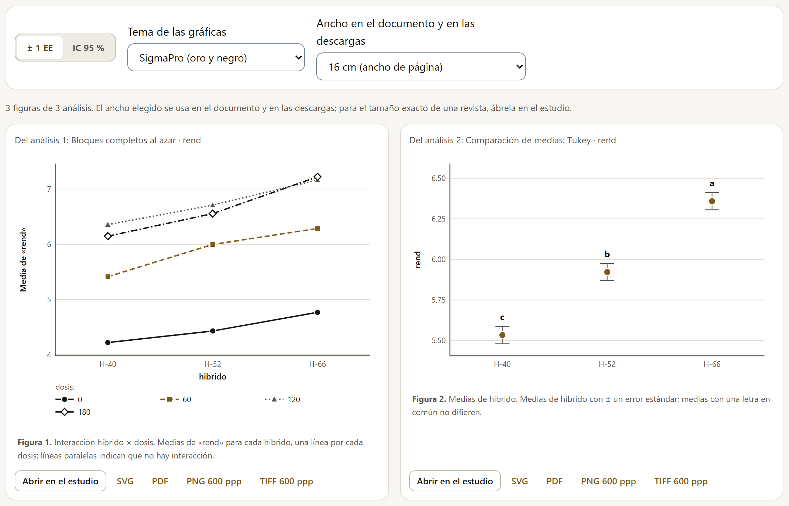
Figura 6.1. Las figuras del reporte del maíz. Cada tarjeta dice de qué análisis viene y trae su leyenda numerada y sus descargas.
Cada tarjeta dice de qué análisis viene («Del análisis 2: Comparación de medias: Tukey · rend») y trae la figura con su leyenda: el número (el mismo que tiene en el reporte y en el documento exportado), el título y una descripción de lo que muestra, que también es el texto alternativo de la figura para los lectores de pantalla. En las gráficas de medias, la leyenda declara las barras de error («con ± un error estándar»), como piden las revistas.
6.2Barras de error, tema y ancho
Arriba de la galería, tres ajustes valen para todas las figuras del reporte, en la pantalla, en el documento exportado y en las descargas. La app los recuerda en el navegador.
Barras de error: ± 1 EE (el error estándar de cada media, la opción por omisión) o IC 95 % (el intervalo de confianza). Al cambiarlas, las gráficas de medias se redibujan y sus leyendas cambian.
Tema de las gráficas: el aspecto de las figuras, entre los seis del cuadro 6.1. El tema vale para todas las gráficas de la app: el mismo selector aparece encima de las gráficas de cada análisis en Análisis y en Resultados (también en Revisar los supuestos del modelo), y cambiar cualquiera de ellos los cambia todos.
Ancho en el documento y en las descargas: 8.5 cm (una columna), 12 cm, 16 cm (ancho de página, la opción por omisión) o 17.5 cm (dos columnas). El alto sale de la proporción de cada figura.
Cuadro 6.1. Los temas de las gráficas.
Tema
Cómo se ven las figuras
SigmaPro (oro y negro)
El de omisión: textos y trazos en negro (en blanco con la app en oscuro), acentos dorados y rejilla tenue.
Minimalista (grises, sin rejilla)
Solo grises, sin rejilla y con ejes finos.
Cuadrícula (panel gris)
El área de la gráfica en gris con la rejilla en blanco y sin línea de ejes; acentos en azul.
Revista (blanco y negro, serifas)
Blanco y negro, letra con serifas (Times New Roman), sin rejilla y con ejes negros: el estilo que piden muchas revistas impresas.
Daltonismo (paleta Okabe-Ito)
Las series con la paleta de Okabe e Ito (azul, naranja, verde, rosa y celeste), que se distinguen con cualquier tipo de daltonismo.
Presentación (letras grandes)
Letras más grandes y trazos más gruesos, para proyectar en una sala.
El tema cambia los colores, las letras y los trazos, no los números: cada figura muestra los mismos datos con cualquiera de los seis. Lo que se haya retocado con el editor ✎ (sección 6.4) se conserva al cambiar de tema.
6.3Las descargas
Cada tarjeta descarga su figura al ancho elegido en cuatro formatos. Todas salen con el tema de las gráficas elegido, en su versión clara aunque la app esté en oscuro, y con lo que se haya cambiado con el editor ✎ o el estudio.
Formato
Qué es y para qué
SVG
Vectorial, con el tamaño en milímetros. Se abre y se edita en cualquier programa de dibujo vectorial y se amplía sin perder nitidez.
PDF
Vectorial, con trazos y texto en una de las letras estándar de PDF (Helvetica; Times con el tema Revista): pesa poco, se amplía sin perder nitidez y el texto se puede buscar. Es el formato que prefieren muchas revistas.
PNG 600 ppp
Imagen a 600 puntos por pulgada, con la resolución escrita dentro del archivo: se inserta en un procesador de textos con su tamaño correcto.
TIFF 600 ppp
La misma imagen en TIFF, el formato que algunas revistas y editoriales exigen.
Para descargar todas las figuras a la vez, en un ZIP con los cuatro formatos, está el bloque Exportar (capítulo 7).
6.4El editor ✎
Cada figura de SigmaPro, aquí, en Análisis y en Resultados, tiene en su esquina un botón ✎ que abre un panel flotante para retocar esa figura, como en un programa de gráficas.
Figura 6.2. El editor ✎ con la figura de las medias de los híbridos: la figura que se edita queda marcada con un borde discontinuo.
Pestaña
Qué se cambia
General
Un título, un subtítulo y una nota al pie dentro de la figura; la familia tipográfica, el tamaño y el color de todos los textos; el grosor de las líneas y el tamaño de los puntos; el fondo y un marco.
Ejes y rejilla
Los títulos de los ejes, las etiquetas de las marcas, el color y el grosor de los ejes, la rejilla y el recuadro del área de la gráfica.
Series
Cada color que usa la figura, con el nombre de su entrada en la leyenda: color, grosor, trazo, opacidad u ocultarla.
Leyenda
Mostrarla u ocultarla, ocho posiciones, como está, en fila o en columna, su tamaño y su recuadro; también se arrastra sobre la figura.
Textos
Cada texto de la figura uno por uno: su redacción, tamaño, negritas, cursivas, color u ocultarlo.
Anotaciones
Notas, flechas, líneas de referencia en un valor de cualquiera de los ejes, bandas sombreadas y la letra del panel (A, B…); las notas y las flechas se arrastran.
Los cambios se escriben en la propia figura, así que lo que se ve es lo que se exporta. El navegador los recuerda por figura y los vuelve a poner cada vez que la figura se redibuja (al cambiar los datos, las barras de error o el tema). Deshacer todo en esta figura la regresa a como la dibujó SigmaPro, y Copiar el estilo a todas las figuras lleva a las demás lo general: la tipografía, los tamaños, el color de los textos, el fondo, el marco y el estilo de los ejes y de la rejilla.
6.5El Estudio de figuras
Para dejar una figura del tamaño exacto que pide una revista, Abrir en el estudio la lleva al Estudio de figuras LABG, el mismo de todas las apps de la suite: una pantalla dividida con la figura a la izquierda, a escala y con la silueta de su tamaño de salida, y el inspector a la derecha.
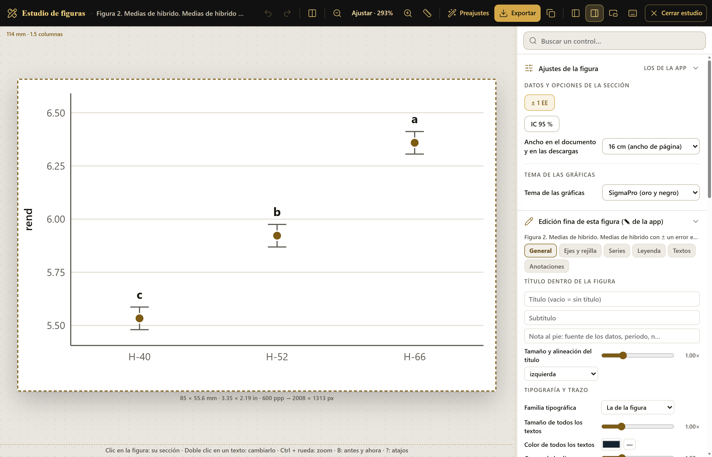
Figura 6.3. El Estudio de figuras: la figura a escala de salida a la izquierda y el inspector a la derecha, con los ajustes que la figura tiene en SigmaPro y el editor ✎ acoplado.
Tamaños de revista: una, una y media o dos columnas, en milímetros o pulgadas, con la letra y el grosor de las líneas pensados para el tamaño de salida. Debajo de la figura, el tamaño final y los pixeles que tendrá.
Paletas científicas, con una simulación de cómo vería la figura una persona con daltonismo.
La leyenda dentro de la gráfica (ocho lugares), fuera a la derecha, debajo en fila u oculta, y se arrastra sobre la figura.
Lo de SigmaPro, dentro: las barras de error, el ancho y el tema de las gráficas del bloque Figuras aparecen en el inspector, en Ajustes de la figura (cada cambio se hace en la app), y el editor ✎ se acopla como «Edición fina de esta figura».
Trabajo cómodo: deshacer y rehacer, comparar antes y ahora con una cortina (tecla B), zoom, doble clic en un texto para cambiarlo, un buscador de controles, preajustes de un clic (y propios, que se guardan en JSON) y la tecla ? para ver los atajos.
Exportar: PNG, SVG, PDF y TIFF, a 300, 600 o 1200 ppp, con fondo transparente si se quiere. Para el PDF, el estudio le pide a SigmaPro la figura vectorial en lugar de una imagen.
El estudio recuerda sus ajustes en el navegador y no cambia nada de la app: al cerrarlo, la figura vuelve a su lugar con lo que se le haya hecho. Si por alguna razón no puede abrirse, la app sigue funcionando igual, con el editor ✎ y las descargas del bloque.
7
Bloque 7 · Exportar
Exportar y guardar el trabajo
El reporte sale de SigmaPro como documento para editar o imprimir, sus cuadros como hoja de cálculo o LaTeX y sus figuras en un solo archivo comprimido. El proyecto .labg guarda todo el trabajo para reabrirlo, compartirlo o repetirlo en R, y el guardado automático lo cuida mientras se trabaja. Todo se arma en el navegador: nada sale del equipo.
7.1El bloque Exportar
7.2El reporte completo
7.3Los cuadros
7.4Las figuras
7.5El proyecto .labg
7.6El guardado automático
7.1El bloque Exportar
Un aviso dice cuántos análisis tiene el reporte; debajo hay cinco tarjetas. Cada botón arma su archivo en el navegador y lo descarga; si hay análisis del motor R calculando, los espera.
Figura 7.1. El bloque Exportar con el reporte del maíz.
7.2El reporte completo
El reporte sale en tres formatos con el mismo contenido: Documento .docx, para editarlo en un procesador de textos; PDF (imprimir), que abre el cuadro de impresión del navegador con el reporte paginado (ahí se elige «Guardar como PDF»); y Página HTML, un solo archivo que se abre en cualquier navegador, con las figuras vectoriales.
Se elige el Tamaño de hoja (carta o A4) y si van en anexos el Código R y los Detalles técnicos de cada análisis (las dos casillas vienen marcadas). El documento tiene:
Una portada con el título, el autor, la fecha, los datos y la versión de SigmaPro.
Métodos: el párrafo de métodos de cada análisis, con sus citas, y la oración que cita SigmaPro y R (sección 5.4).
Resultados: cada análisis con su número y su título, la conclusión, el párrafo de resultados, sus cuadros y sus figuras numerados de corrido y, si los tiene, sus supuestos con el semáforo.
Referencias: las obras citadas por los métodos, completas.
Anexos: el código R y los detalles técnicos de cada análisis.
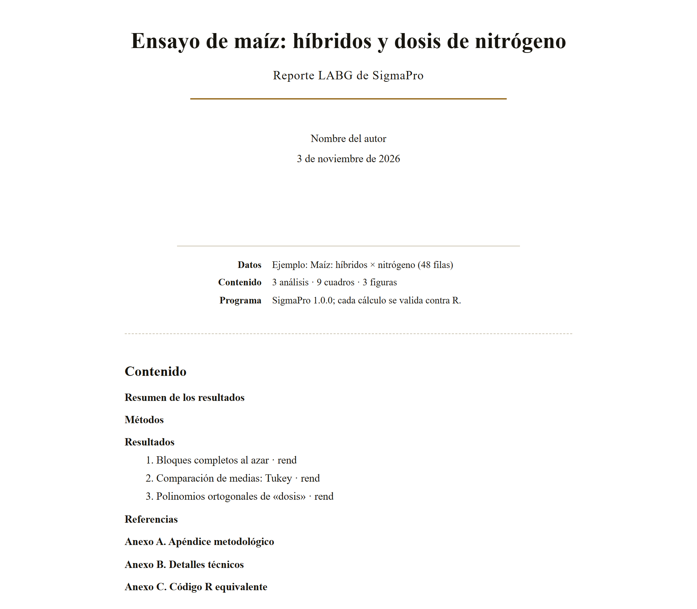
Figura 7.2. El principio del reporte del maíz exportado como página HTML: la portada y los métodos.
Los cuadros del .docx son tablas del procesador de textos, con las reglas horizontales de las revistas, y se pueden editar; las figuras van como imágenes a 300 ppp del ancho elegido en Figuras, con el tema de las gráficas que esté puesto (cuadro 6.1). La batería de pruebas abre cada .docx con un lector independiente y comprueba que sus partes sean válidas y que el texto de cada cuadro sea exactamente el de la app (capítulo 8).
El documento sale en el idioma de la interfaz: con el selector en EN (sección I.5), la portada, los títulos, las conclusiones, los cuadros y los párrafos salen en inglés, con las mismas cifras; los comentarios del código R quedan en español.
7.3Los cuadros
Hoja de cálculo .xlsx: cada cuadro del reporte en su propia hoja, con todas sus cifras, sin el redondeo de la pantalla, y una primera hoja con el índice. Sirve para hacer otros cálculos o rearmar un cuadro con otro formato sin volver a teclear un número. Para bajar un solo cuadro en CSV, sin armar la hoja de cálculo, está el botón Bajar en CSV del resultado en Análisis o Explorar (sección 4.5).
LaTeX .tex: los cuadros como tablas de LaTeX con las tres reglas de revista del paquete booktabs, uno por entorno table, con su título y sus notas, listos para pegar en una tesis o un artículo escrito en LaTeX.
7.4Las figuras
Todas las figuras (.zip) descarga un archivo comprimido con cada figura del reporte en SVG, PDF vectorial y PNG a 600 ppp, del ancho elegido en el bloque Figuras y con los cambios del editor ✎, más un índice con el número y la leyenda de cada una. Con También en TIFF a 600 ppp, agrega el TIFF. Las figuras salen con el tema de las gráficas que esté puesto. Una figura sola se descarga desde su tarjeta en el bloque Figuras (sección 6.3).
7.5El proyecto .labg
El proyecto guarda todo el trabajo en un solo archivo: los datos, el reporte y los ajustes de las figuras. Sirve para seguir otro día, llevarlo a otra computadora, mandarlo a un asesor o a un revisor, o repetir todos los análisis en R.
Guardar proyecto descarga un archivo con terminación .labg, que es un ZIP con estos archivos:
Archivo
Qué guarda
manifiesto.json
El formato, la versión de SigmaPro y la huella SHA-256 de cada archivo.
datos/hoja.json
La hoja completa: los tipos de las columnas, los niveles de los factores, las columnas calculadas y el filtro.
datos/datos.csv
Las filas que usan los análisis, en texto, para R o para cualquier programa.
analisis.json
El reporte: cada análisis con sus entradas, sus opciones, su título y su nota.
estilos.json
Los ajustes de las figuras.
codigo/analisis.R
El código R que repite todo: se descomprime el proyecto y se corre source("codigo/analisis.R") desde su carpeta.
LEAME.txt
Qué es el archivo y cómo se abre.
Los resultados no se guardan: se recalculan al abrir, así que salen exactamente los mismos (la batería de pruebas lo comprueba, cuadro por cuadro) y un proyecto nunca trae números viejos.
Abrir un proyecto
Un proyecto se abre con Abrir un proyecto en Exportar, o con Abrir un proyecto .labg en Resultados cuando el reporte está vacío. La app comprueba la huella SHA-256 de cada archivo contra el manifiesto. Si coinciden y no hay otro trabajo en la app, lo abre directamente; si hay datos o análisis cargados, pregunta primero, porque abrirlo los reemplaza.
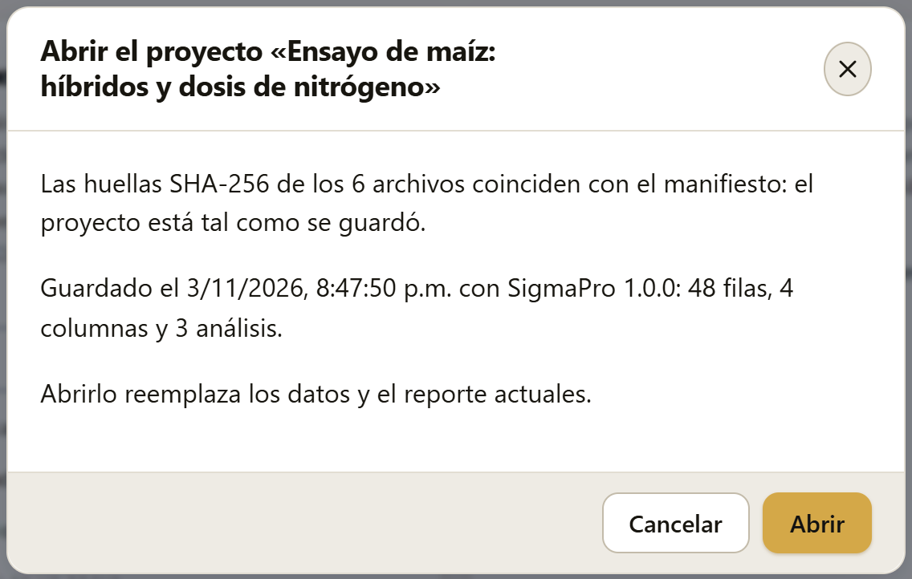
Figura 7.3. Al abrir un proyecto con otro trabajo en la app: las huellas coinciden y la app pide confirmar.
Si algún archivo cambió después de guardarse (alguien editó el CSV o el reporte a mano), su huella no coincide: el diálogo lo dice con el nombre de cada archivo cambiado y el botón cambia a Abrir de todos modos. Un archivo que no es un proyecto de SigmaPro, o que viene de otra app de la suite o de una versión más nueva de SigmaPro, no se abre, y un aviso dice por qué. Al abrirlo, la app pasa a Resultados con el reporte ya recalculado.
7.6El guardado automático
Mientras se trabaja, los datos (con sus tipos, sus columnas calculadas y su filtro), los análisis del reporte y los ajustes de las figuras se guardan en el almacenamiento del propio navegador, dos segundos después del último cambio y al cambiar de pestaña o cerrarla. Nada sale del equipo. Cómo se recupera un trabajo al volver a abrir SigmaPro está en la sección 1.4.
La tarjeta Guardado automático del bloque Exportar dice cuándo se guardó por última vez y qué («Guardado a las 12:28 p.m.: …, 48 filas y 4 columnas, 3 análisis en el reporte»). Tiene dos controles:
Guardar el trabajo en este navegador: viene marcada. Desmarcarla borra lo guardado y deja de guardar; volver a marcarla guarda de inmediato.
Borrar lo guardado: lo borra ahora; se vuelve a guardar con el próximo cambio.
Si el navegador no deja guardar (una ventana privada, el almacenamiento bloqueado o lleno), la app sigue igual y la tarjeta lo dice: en ese caso conviene guardar el proyecto .labg. Si SigmaPro está abierto en dos pestañas, la tarjeta avisa cuando el almacenamiento está ocupado por la otra.
!En una computadora compartida
Lo guardado se queda en ese navegador, y la siguiente persona que abra SigmaPro verá el aviso para recuperarlo. En una computadora de laboratorio o de un centro de cómputo, desmarca el guardado automático o usa Borrar lo guardado al terminar, y lleva tu trabajo en el proyecto .labg.
8
Bloque 8 · Validación
Validación: cada número, contra R
SigmaPro no pide que se le crea: cada resultado del programa se compara contra R, con datos publicados o clásicos, y el reporte de esa comparación viene dentro de la app. Este capítulo explica el criterio, cómo se lee el bloque, qué más se comprueba además de los números y cómo repetir toda la validación en otra computadora.
8.1El criterio
8.2El bloque Validación
8.3Cinco clases de resultados
8.4Más allá de los números
8.5La regla de liberación
8.6Cómo repetir la validación
8.1El criterio
Un caso de validación es un conjunto de datos (de un libro, un artículo o un paquete de R), un cálculo de SigmaPro y la respuesta de R al mismo cálculo. El caso aprueba si cada número que trae la respuesta de R coincide con el de SigmaPro:
|SigmaPro − R| ≤ 10−6 · máx(1, |R|)
Es decir, seis cifras: absolutas para los números menores que 1 y relativas para los mayores. Algunas reglas lo afinan: un valor p diminuto (menor que 10−6) debe coincidir además en sus cifras relativas, para que un p de 10−20 no apruebe solo por ser «casi cero»; los faltantes y los infinitos de R se esperan como faltantes e infinitos; y los textos se comparan exactos. Se comparan todas las claves que trae la respuesta de R, y todas deben existir en el resultado de SigmaPro.
Las respuestas de R las calculan guiones de R que están junto a la app (tests/r/), con R 4.4.2 y los paquetes de referencia de cada método (car, emmeans, lme4, survival, agricolae y otros). SigmaPro no usa R para calcular, salvo en los métodos del motor R (sección 4.6): su núcleo es propio, y R es el juez.
8.2El bloque Validación
El bloque muestra el último reporte de validación, el mismo que se genera al correr las pruebas, con su fecha arriba a la derecha.
Figura 8.1. El bloque Validación: el resumen, los filtros y los primeros casos, con los detalles de uno abiertos.
El resumen: cuántos casos aprobaron de cuántos hay, cuántos números se compararon, la mayor diferencia escalada y la versión de R de las referencias, con cuántas funciones y métodos cubren los casos. Si la mayor diferencia pasa de 10−6, la teja dice cuántos casos tienen una tolerancia propia documentada (sección 8.3).
Los filtrosTodos, Aprobados y Con fallas, y un buscador por función, método o fuente de los datos.
El cuadro de los casos, agrupados por la función o el método que prueban. Cada caso dice qué prueba, de dónde salen sus datos, su clase (sección 8.3), cuántos números compara, la diferencia más grande y si aprobó.
Detalles abre lo que hay detrás de cada caso: la función de R y las versiones de sus paquetes, la regla de comparación (con su tolerancia; si el caso tiene tolerancias propias en algunas rutas, lo dice), el valor que más se alejó y el código R que calculó la referencia, para repetirlo.
Debajo del cuadro, una tarjeta resume las otras comprobaciones (sección 8.4), cada una con su fecha, su resultado y su detalle.
8.3Cinco clases de resultados
No todos los números se pueden comparar de la misma manera. Cada caso lleva una clase que dice qué tipo de cálculo es y cómo se valida.
Clase
Qué es
Cómo se valida
A
Fórmula cerrada o algoritmo exacto: sumas de cuadrados, F, t, estimadores, sus valores p.
Contra R, con 10−6.
B
R usa una aproximación publicada: el p de Shapiro-Wilk, los cuantiles del rango estudentizado.
Se programa el mismo algoritmo publicado. Si R mismo es menos preciso por diseño, la referencia se calcula en R con más precisión y el hallazgo se documenta.
C
R usa azar: Dunnett por omisión, la prueba de Fisher simulada.
Una referencia sin azar, por integración numérica de alta precisión; el valor por omisión de R, aparte, con la tolerancia de su propio error.
D
Optimización iterativa: Box-Cox, REML, modelos generalizados, no lineales, ARIMA.
Los dos programas con criterios de convergencia ajustados; 10−6 sobre el resultado convergido, o la tolerancia documentada de la ruta cuando el propio R no da más cifras.
E
Cuadros de libros y artículos, impresos con 2 a 4 decimales.
Media unidad del último dígito impreso. Se cita el libro o el artículo, no el programa con que se calculó.
Cuando la tolerancia de una ruta no es 10−6, el motivo está escrito en el caso y aparece en el reporte de validación publicado; nunca se afloja una tolerancia sin decir por qué. Los hallazgos de la clase B (funciones de R que, por diseño o por redondeo, dan menos cifras que las que se piden) están descritos uno por uno en el documento de validación que acompaña a la app.
8.4Más allá de los números
Además de los casos contra R, la batería de pruebas comprueba otras diez cosas, cada una con su programa independiente. Cada una deja su resultado, con su fecha, en la tarjeta de otras comprobaciones del bloque Validación.
Comprobación
Qué se revisa
El código R equivalente
El código que muestra la app (sección 4.5) se corre en R, escenario por escenario, y debe dar los mismos números que la app.
Las exportaciones
La hoja de cálculo se lee con R celda por celda; el .docx, con un lector de XML; los PDF, los PNG y los TIFF, con lectores de imágenes; el proyecto, con sus huellas, su código R corrido completo y reabierto con los mismos cuadros; y el guardado automático, recuperado en una página nueva.
Rendimiento
Con cerca de 100 000 filas, cada análisis común dentro de su meta de tiempo.
Privacidad y uso sin conexión
Con datos, análisis y exportaciones, ningún dato sale del navegador; sin red, la app abre, calcula y exporta.
Accesibilidad
Cada bloque y los análisis de todas las familias, a lo ancho de una pantalla y de un teléfono, en claro y en oscuro: contraste AA de los textos, nombres y etiquetas para lectores de pantalla, sin desborde lateral y con el teclado.
La interfaz en inglés
Cada texto de la interfaz, de los resultados y de los ejemplos tiene su traducción; cada caso de validación da los mismos números en español y en inglés; y ningún resultado armado en inglés deja textos sin traducir.
Regresión de resultados y reportes
La huella de cada resultado (todos sus números) y de su reporte (cuadros, conclusiones, semáforo y notas) se compara con la guardada: un número o un texto que cambia sin querer se ve antes de publicar una versión.
Secuencia de apertura
La pantalla de apertura (sección 1.6) aparece antes que la interfaz, termina en Start, se quita con Esc, respeta la preferencia de reducir el movimiento, cabe en un teléfono y corre fluida.
Fundamentos de cada análisis
Cada análisis tiene su ficha (capítulo 9) con sus nueve apartados en español y en inglés; sus análisis relacionados, su conjunto de ejemplo y sus columnas existen en la app; el ejemplo corre con el método; y cada fórmula se convierte para mostrarse.
Enlaces y logos de la suite LABG
Cada app de la suite (capítulo 10) tiene su logo y sus datos, o «PENDIENTE» declarado; las reglas de sugerencia nombran apps que existen; y la página, el repositorio y el manual de cada app publicada responden. Necesita internet: revisa las páginas de las otras apps, algo que la app nunca hace.
8.5La regla de liberación
Un método no aparece en la app hasta que tiene casos de validación y todos aprueban. La app lo comprueba sola al abrir, con el reporte de validación que trae: si un caso de un método fallara, el método dejaría de aparecer en el catálogo y, si el asistente lo propusiera, la app diría que todavía no tiene su validación aprobada en lugar de calcularlo. Por eso todo lo que este manual describe está validado.
8.6Cómo repetir la validación
La validación no depende de quien la hizo: con R y node instalados, cualquiera puede regenerar las referencias con su propio R y volver a comparar.
Hacen falta R (4.4 o posterior) con los paquetes que pide cada caso y node (20 o posterior; no hace falta instalar nada con npm). Desde la carpeta de SigmaPro:
Rscript tests/r/generar-todo.R # regenera las referencias con tu R
node tests/motor-r.mjs # los métodos del motor R, en el navegador
node tests/correr.mjs # compara y escribe los reportes
node tests/navegador.mjs # lo mismo en el navegador, por file://
node tests/codigo-r.mjs # el código R de la app da lo mismo en R
node tests/exportar.mjs # las exportaciones, con lectores independientes
motor-r.mjs abre la app en el navegador y descarga el motor R, así que necesita internet; va antes de correr.mjs, que integra sus casos al reporte. correr.mjs escribe el reporte que muestra el bloque Validación y una versión para publicar, en HTML y en CSV. Las demás comprobaciones de la sección 8.4 tienen su propio programa en tests/: idioma.mjs, regresion.mjs, intro.mjs, fundamentos.mjs, suite-enlaces.mjs (con internet), sin-conexion.mjs, rendimiento/medir.mjs y accesibilidad/auditar.mjs.
En Windows, tests/pruebas.ps1 busca R, node y el navegador y corre la comparación contra R, el código R equivalente, la interfaz en inglés, la regresión, las fichas, la prueba en el navegador y la secuencia de apertura. Con -R, antes regenera las referencias; con -Completo agrega las exportaciones, la privacidad, el rendimiento y la accesibilidad (unos 15 minutos), y con -Red, las dos que necesitan internet: el motor R y los enlaces de la suite.
9
Bloque 9 · Fundamentos
Fundamentos: qué hace cada análisis y qué datos pide
Cada uno de los 78 análisis de SigmaPro tiene una ficha: para qué sirve, el modelo y sus hipótesis, los supuestos y cómo revisarlos en la app, los datos que necesita, cómo se lee el resultado, sus límites y de dónde viene. Este capítulo explica cómo se llega a las fichas, cómo se buscan y qué trae cada una.
9.1Tres maneras de llegar a una ficha
9.2El catálogo y sus filtros
9.3El mapa de métodos
9.4Una ficha, apartado por apartado
9.5Datos necesarios y las plantillas
9.6Fórmulas, idioma y sin conexión
9.7Cómo se revisaron las fichas
9.1Tres maneras de llegar a una ficha
Las fichas viven en el bloque 9, pero están a un clic desde donde se necesitan: al elegir qué analizar, al tener un resultado delante y al empezar.
Desde
Cómo
La barra de bloques
Fundamentos abre el catálogo de las 78 fichas, con su buscador y sus filtros (9.2).
Un análisis
En el catálogo del bloque Análisis, cada análisis lleva el ícono ⓘ (¿Qué es este análisis?); con un análisis abierto, el botón ⓘ ¿Qué es este análisis? está en la cabecera de su resultado, también en los cuatro resúmenes del bloque Explorar. Los dos abren su ficha.
El bloque Inicio
La tarjeta Qué puedes analizar lista los 78 análisis por familia; cada nombre abre su ficha.
Desde la ficha se vuelve al trabajo con Abrir este análisis, que abre el método en el bloque Análisis (o, para descriptivos, frecuencias, proporciones y bondad de ajuste, en el bloque Explorar), y con Cargar los datos de ejemplo, que además carga el conjunto de ejemplo de la ficha y llena el formulario con sus columnas. Así, cada ficha se puede comprobar con un clic.
9.2El catálogo y sus filtros
El catálogo agrupa las fichas por familia, como el catálogo del bloque Análisis. Cada tarjeta dice para qué sirve el análisis y lleva dos etiquetas: el tipo de respuesta que mide y cómo se organizan sus grupos o factores.
Control
Qué hace
Buscar
Busca en el nombre, el resumen, la familia, el «para qué sirve» y los otros nombres de cada análisis (por ejemplo, «RCBD», «Tukey», «heredabilidad»). Varias palabras deben aparecer todas; no distingue acentos ni mayúsculas.
Familia
Las 18 familias: las 17 del bloque Análisis y Descriptivos e intervalos, la de los cuatro resúmenes de Explorar.
Tipo de respuesta
Medida continua, conteos, sí / no (0/1), proporciones, categorías (tablas), tiempo hasta un evento, serie de tiempo, varias respuestas o sin datos (planeación).
Grupos y factores
Una muestra, dos grupos, tres o más grupos, factores cruzados, bloques, parcelas divididas, predictores continuos, efectos aleatorios, varios ambientes o sin factores.
Diseño
El diseño experimental en que se usa: completamente al azar, bloques completos al azar, cuadro latino, parcelas divididas y franjas, látice, bloques incompletos, medidas repetidas, varios ambientes, muestreo, superficies de respuesta o sin diseño experimental.
Los filtros se combinan y el conteo de arriba dice cuántos análisis quedan; si ninguno cumple, Quitar los filtros los regresa a Todas. Al pie de algunas familias aparece la franja Herramientas relacionadas con las apps de la suite LABG que continúan ese trabajo (capítulo 10).
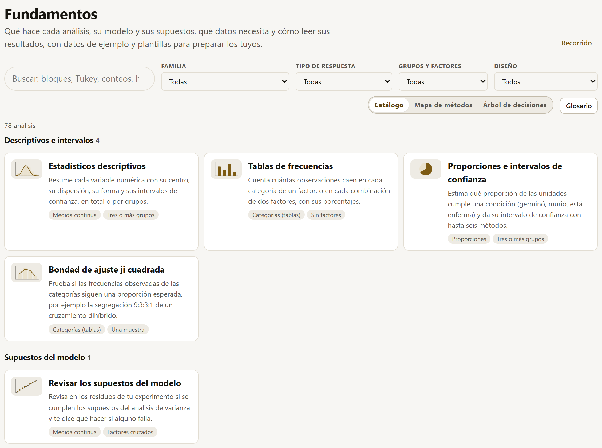
Figura 9.1. El catálogo de Fundamentos: el buscador, los cuatro filtros y las primeras familias.
9.3El mapa de métodos
Mapa de métodos muestra los mismos análisis en un cuadro: el tipo de respuesta en los renglones y la estructura de los grupos y factores en las columnas. Sirve para encontrar el análisis a partir de la pregunta: «mido conteos en bloques», «comparo dos grupos con una respuesta sí / no».
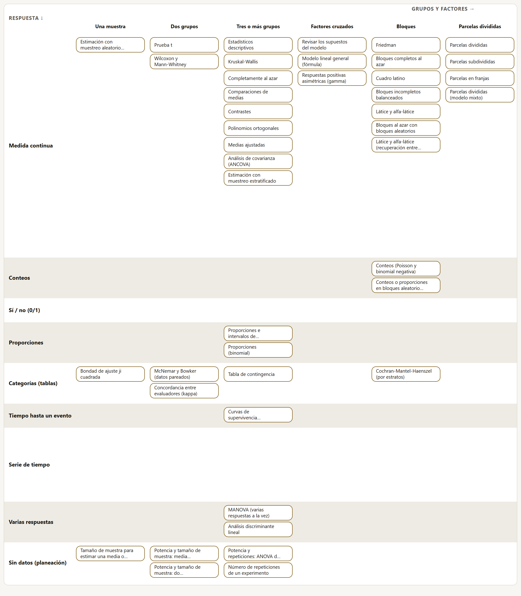
Figura 9.2. El mapa de métodos (las columnas de la derecha, como predictores continuos y efectos aleatorios, se ven al desplazar el cuadro a los lados).
Cada nombre es un enlace a su ficha: se abre con un clic o con el teclado (Tab y Entrar). Los filtros del catálogo también se aplican al mapa, y el mapa recuerda la vista elegida mientras la pestaña siga abierta. En pantallas angostas, el cuadro se desplaza a los lados dentro de su marco.
9.4Una ficha, apartado por apartado
Todas las fichas tienen los mismos nueve apartados, en el mismo orden, y un índice a la izquierda para saltar entre ellos. Cada apartado se pliega o se despliega con un clic en su título.
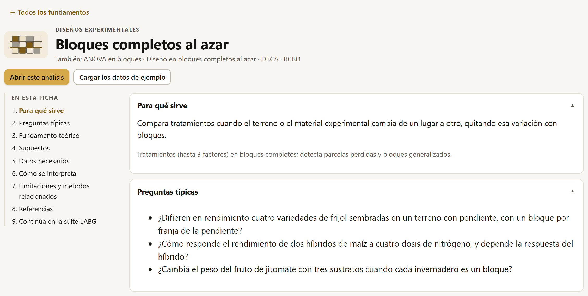
Figura 9.3. La ficha de bloques completos al azar: la cabecera, el índice y los dos primeros apartados.
Cuadro 9.1. Los nueve apartados de una ficha.
#
Apartado
Qué trae
1
Para qué sirve
En una frase, qué pregunta responde; los otros nombres con que se le conoce y la familia.
2
Preguntas típicas
Dos o tres preguntas agronómicas o biológicas que se responden con el análisis.
3
Fundamento teórico
La idea del método en 150 a 300 palabras, el modelo con sus términos explicados, las hipótesis H₀ y H₁ y con qué estadístico se prueban.
4
Supuestos
Cada supuesto, cómo se revisa en SigmaPro (el semáforo, Revisar los supuestos del modelo, una gráfica) y qué hacer si no se cumple, con botones que abren la revisión o la alternativa.
5
Datos necesarios
El recuadro dorado de la sección 9.5.
6
Cómo se interpreta
Qué mirar en el resultado y en qué orden, un ejemplo de redacción para la tesis o el artículo y las guías de lectura de cada estadístico.
7
Limitaciones y métodos relacionados
Cuándo no usarlo y qué análisis de SigmaPro conviene en su lugar, con enlaces a sus fichas.
8
Referencias
De 3 a 5 referencias en formato APA: el artículo o libro original y los textos de consulta.
9
Continúa en la suite LABG
Las apps de la suite que siguen el trabajo de ese análisis, con el motivo (capítulo 10). Si ninguna aplica, lo dice.
El fundamento teórico termina con el modelo, cada uno de sus términos y las hipótesis que se prueban, con el estadístico que las decide (figura 9.4).
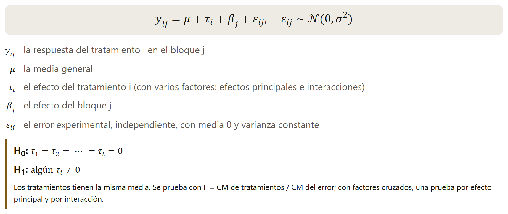
Figura 9.4. El modelo, sus términos y las hipótesis en la ficha de bloques completos al azar.
✎Ejemplo
Los ejemplos de redacción de cada ficha usan las cifras que da la app con su conjunto de ejemplo; cuando la ficha no tiene uno, las cifras se presentan como ilustrativas. Antes de copiarlos, cambia las cifras por las de tu resultado.
9.5Datos necesarios y las plantillas
El apartado 5 va en un recuadro dorado porque responde la pregunta que más detiene un análisis: ¿cómo deben estar mis datos? Trae seis partes (figura 9.5).
Columnas que necesita: cada columna con su tipo (numérica continua, factor con k niveles, conteo, 0/1, fecha) y su papel en el análisis (respuesta, tratamientos, bloque…). Los nombres son los del conjunto de ejemplo.
Tamaño mínimo: lo que el método necesita para correr y lo que conviene para que la prueba tenga sentido.
Faltantes y desbalance: qué hace SigmaPro si falta un dato o los grupos no tienen el mismo tamaño.
Formato: casi siempre largo (una fila por parcela, planta o fecha). Cuando el formato ancho es una confusión común, la ficha muestra los mismos datos en formato ancho, marcados «no así»; el bloque Datos los pasa a largo con Ancha ⇄ larga (sección 2.11).
Ejemplo: las primeras filas reales del conjunto de ejemplo, hasta 8.
Errores frecuentes al preparar los datos: los que hacen que el análisis corra pero responda otra pregunta (promedios en lugar de parcelas, dosis numéricas como si fueran continuas, frutos de una parcela como repeticiones).
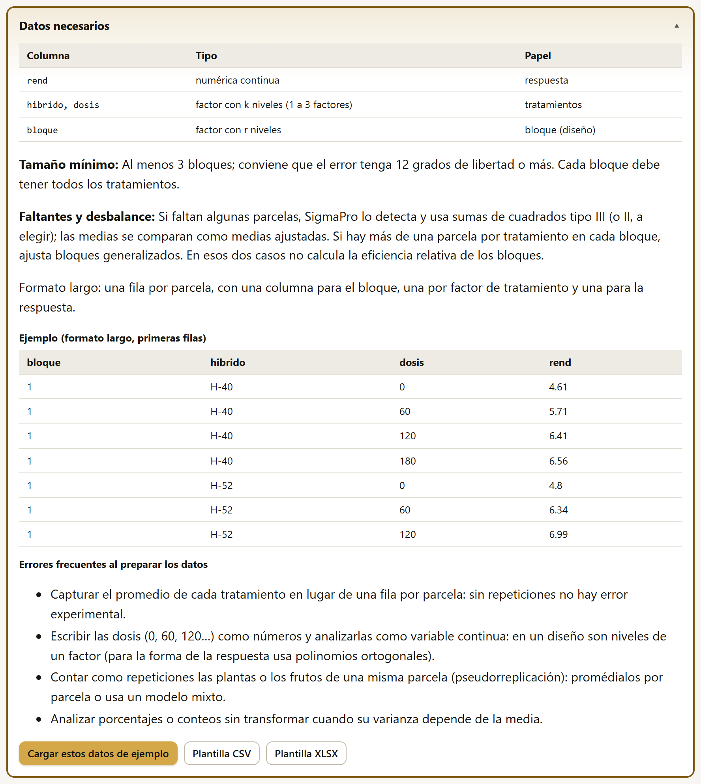
Figura 9.5. «Datos necesarios» en la ficha de bloques completos al azar.
Plantilla CSV y Plantilla XLSX descargan la tabla de ejemplo de la ficha (plantilla-<análisis>.csv o .xlsx) para llenarla con los datos propios y después importarla en el bloque Datos. Cargar estos datos de ejemplo carga el conjunto completo y abre el análisis con sus columnas ya elegidas. Las fichas de planeación (potencia, número de repeticiones, tamaño de muestra y diseño de superficies) no usan datos: su cuadro de columnas lista, en su lugar, los valores que pide el formulario.
9.6Fórmulas, idioma y sin conexión
Las fórmulas de las fichas son texto matemático, no imágenes: se leen con un lector de pantalla, se amplían sin perder nitidez y se copian.
SigmaPro las escribe con su propio convertidor a MathML, el lenguaje de fórmulas que entienden los navegadores, sin descargar ninguna biblioteca. Cada ficha está en español y en inglés, con las mismas cifras en los dos; cambia con el selector ES · EN como el resto de la app, y en inglés la notación sigue la costumbre de ese idioma (SE, SS y MS en lugar de EE, SC y CM).
Las 78 fichas son archivos de la app (data/fundamentos/) que se cargan cuando se abren. Funcionan con doble clic sobre index.html, en la versión publicada y sin conexión: la app instalada las guarda con todo lo demás.
9.7Cómo se revisaron las fichas
Una ficha que describe algo que la app no hace es peor que no tener ficha. Por eso cada una se contrastó con el código y con la app funcionando, en seis revisiones independientes de 13 fichas cada una.
Cada revisión comprobó el modelo, las hipótesis, los supuestos (y que la revisión y la alternativa que propone existan), los datos y la tabla de ejemplo, que el ejemplo corra y dé las cifras de la redacción, la interpretación y las referencias (autor, año, título, revista, páginas y DOI). 49 de las 78 fichas cambiaron en la revisión. En el camino aparecieron también 18 errores de la app misma, desde un cálculo (la kappa ponderada cuando un evaluador no usa alguna categoría) hasta etiquetas y mensajes; se corrigieron, y los de cálculo tienen su caso nuevo contra R. El detalle está en docs/revision-fundamentos.md, y la lista de análisis con el estado de su ficha, en docs/inventario-analisis.md.
Además, una prueba automática (node tests/fundamentos.mjs, parte de la batería de liberación del capítulo 8) revisa en cada versión que todos los análisis tengan su ficha con los nueve apartados en los dos idiomas, que los ejemplos corran, que las fórmulas se conviertan y que ninguna ficha nombre una opción o una columna que no exista.
10
Bloque 10 · Suite LABG
Suite LABG: dónde sigue el trabajo
SigmaPro es parte de la LABG Suite, un conjunto de apps libres que corren en el navegador. Algunos trabajos empiezan o terminan fuera de SigmaPro: planear y sortear el diseño, explorar muchas variables a la vez, reducir dimensiones, formar grupos. Este capítulo explica el bloque Suite LABG, las sugerencias que aparecen dentro del trabajo y cómo llevar los datos de una app a otra.
10.1El bloque Suite LABG
10.2Las sugerencias dentro del trabajo
10.3Dónde aparece cada app
10.4Enviar los datos a otra app
10.5Ocultar una sugerencia
10.6Cómo citar las apps
10.1El bloque Suite LABG
El bloque presenta cuatro apps hermanas de SigmaPro, las que más a menudo continúan un análisis agronómico. El mismo recuadro, «Explora la suite LABG», aparece también al final del bloque Inicio.
Figura 10.1. El bloque Suite LABG.
Cada tarjeta trae:
El logo oficial de la app, que es también un enlace a ella, su nombre y su versión publicada.
Su lema y de cuatro a seis funciones, tomadas de la documentación publicada de cada app.
Abrir app y Manual, que abren la app o su manual en una pestaña nueva del navegador.
Citar, que despliega la cita en formato APA y en BibTeX, con botones para copiarla (sección 10.6).
Al pie, Ver las 15+ aplicaciones de la suite abre el portal con todas las apps. Una app que todavía no tiene versión pública aparece con su marca provisional, sus datos marcados como PENDIENTE y el botón Próximamente en lugar de los enlaces; hoy es el caso de CorrelationPro.
iNota
Las apps de la suite se abren en tu navegador, sin instalar nada, y procesan los datos en tu equipo, como SigmaPro. Abrir una de ellas no le manda nada: SigmaPro no envía tus datos a ninguna parte.
10.2Las sugerencias dentro del trabajo
Fuera del bloque 10, las apps de la suite solo aparecen donde continúan lo que estás haciendo, en una franja discreta titulada Continúa en la suite LABG. Nunca en ventanas emergentes y nunca como publicidad.
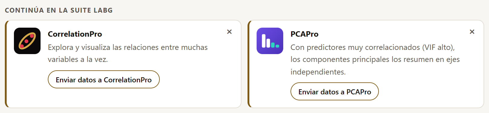
Figura 10.2. Al pie de una regresión lineal con los datos del café: las dos apps que siguen ese trabajo.
Cada tarjeta lleva el logo de la app como enlace (se abre en una pestaña nueva), una frase que dice por qué conviene ahí, Enviar datos a … cuando la app ya está publicada (10.4) y un botón ✕ para ocultarla (10.5). Las franjas aparecen en tres lugares:
Al pie del resultado de un análisis, en el bloque Análisis, y en el apartado 9 de su ficha de Fundamentos.
Al pie de una familia en el catálogo de Fundamentos, como Herramientas relacionadas.
En el bloque Datos, cuando la tabla cargada tiene una estructura que otra app aprovecha: un diseño con tratamientos y bloques, muchas variables numéricas, coordenadas o fechas. La tarjeta dice qué vio en la tabla («La tabla tiene 8 variables numéricas»).
10.3Dónde aparece cada app
Las reglas están escritas en un archivo de la app (data/suite-rules.js) y son las mismas para todos: no dependen de lo que hayas usado antes.
Cuadro 10.1. Qué app se sugiere y dónde.
App
Al pie de estos análisis
En el bloque Datos, si la tabla…
AgriDesign
Los diseños experimentales (completamente al azar, bloques, cuadro latino, parcelas divididas, subdivididas y en franjas, bloques incompletos, látice) y sus versiones mixtas: para sortear el diseño, el croquis y la hoja de campo. El número de repeticiones y la potencia del ANOVA: para planear el ensayo.
tiene tratamientos y bloques o repeticiones
CorrelationPro
Correlación de dos variables, matriz de correlación, correlación parcial, regresión lineal, selección paso a paso y mejores subconjuntos.
tiene 8 o más variables numéricas
PCAPro
Las mismas correlaciones y regresiones (en regresión, por la colinealidad), MANOVA, discriminante, AMMI y GGE.
tiene 8 o más variables numéricas
ClusteringPro
MANOVA, discriminante, ensayos multiambiente, estabilidad, AMMI y GGE: para clasificar genotipos, sitios o individuos en grupos.
tiene 8 o más variables numéricas
BioModellingPro
—
tiene columnas de latitud y longitud
PhenologyPro
—
tiene fechas
En el catálogo de Fundamentos, la franja Herramientas relacionadas sigue la misma lógica por familia: AgriDesign al pie de los diseños, las comparaciones de medias y la potencia; CorrelationPro y PCAPro al pie de la correlación y la regresión; PCAPro y ClusteringPro al pie del multivariado y de los ensayos multiambiente. Un análisis sin app relacionada lo dice en el apartado 9 de su ficha y remite a este bloque.
10.4Enviar los datos a otra app
Enviar datos a … no envía nada por internet: guarda la tabla del bloque Datos como un archivo CSV en tu equipo y abre la otra app en una pestaña nueva.
Con la tabla cargada, pulsa Enviar datos a PCAPro (o a la app que corresponda).
El navegador descarga sigmapro-para-pcapro.csv y abre PCAPro; un aviso recuerda el nombre del archivo.
En la otra app, abre ese archivo desde su bloque de datos.
El archivo lleva la tabla que SigmaPro está usando (con el filtro activo, si hay uno): los números con todas sus cifras, cada factor con el nombre de su nivel y los faltantes como celdas vacías, en UTF-8 para que los acentos lleguen bien. Para las apps que trabajan con variables numéricas, como PCAPro, el archivo lleva una columna de etiquetas (la primera que no es numérica) y todas las numéricas. Si no hay datos cargados, el botón lo dice y no descarga nada.
10.5Ocultar una sugerencia
El botón ✕ de una tarjeta la oculta en ese lugar (por ejemplo, PCAPro al pie de la regresión) y SigmaPro lo recuerda en este navegador. La misma app sigue apareciendo en los demás lugares.
Para que vuelvan todas, el bloque Suite LABG tiene, debajo de las tarjetas, Volver a mostrar las sugerencias que ocultaste. Si se ocultan todas las tarjetas de una franja, la franja desaparece completa.
10.6Cómo citar las apps
Si usaste otra app de la suite en tu trabajo, cítala como se cita SigmaPro: con su versión y su DOI.
Citar despliega la cita de la app en formato APA y en BibTeX, armada con su versión, su año y su DOI publicados; Copiar APA y Copiar BibTeX la copian al portapapeles. Una app sin DOI se cita con su dirección. Por ejemplo, para PCAPro:
✎Ejemplo
Barrera-Guzmán, L. Á. (2026). PCAPro: an offline, browser-based platform for guided principal component analysis (Versión 1.1.0) [Software]. Zenodo. https://doi.org/10.5281/zenodo.22649709
Las citas salen de los datos publicados de cada app (su archivo de cita y sus metadatos), así que cambian con cada versión. La de SigmaPro está en el bloque Inicio y en el apéndice E.
A
Apéndices
Apéndices
Lo que conviene tener a la mano y no cabía en ningún capítulo: qué archivos lee y escribe la app, qué hacer cuando algo no sale como se esperaba, un glosario de los términos que usa el manual, las referencias de los métodos y los datos, y la licencia del programa con la manera de citarlo.
ALos archivos que la app lee y escribe
BCuando algo no sale
CGlosario
DReferencias
ELa licencia y cómo citar SigmaPro
ALos archivos que la app lee y escribe
SigmaPro corre en el navegador y no envía nada a ningún servidor: los archivos entran desde la computadora y salen a la carpeta de descargas. El trabajo en curso se guarda solo en el almacenamiento del propio navegador (sección 7.6).
A.1 · Lo que la app lee
Formato
Extensión
Qué toma
Texto delimitado
.csv, .tsv, .txt
Separado por comas, punto y coma o tabuladores, con punto o coma decimal y los códigos de faltante que se indiquen (sección 2.3).
Libro de hoja de cálculo
.xlsx, .xlsm, .ods
Una hoja a la vez. Los libros del formato viejo (.xls) no se abren: se guardan antes como .xlsx o .csv.
Tabla pegada
—
Lo copiado de una hoja de cálculo o de un documento (sección 2.4).
Proyecto
.labg
Los datos, el reporte y los ajustes de las figuras, con la verificación de sus huellas (sección 7.5).
A.2 · Lo que la app escribe
Bloque
Archivo
Qué contiene
249
.csv
Enviar datos a … en la franja de la suite: la tabla en uso, con el filtro activo, como sigmapro-para-pcapro.csv (o la app que corresponda), para abrirla en otra app de la suite (sección 10.4).
34
.csv
Bajar en CSV: un cuadro de un resultado, con los valores sin redondear (secciones 3.2 y 4.5).
4
.csv
Desde la MANOVA y el discriminante, las variables con su grupo, para abrirlas en PCAPro o en ClusteringPro (sección 4.21).
6
.svg · .pdf · .png · .tif
Una figura, al ancho elegido; los PNG y TIFF a 600 ppp (sección 6.3).
7
.docx · .html · PDF
El reporte completo; el PDF se guarda desde el cuadro de impresión del navegador (sección 7.2).
7
.xlsx · .tex
Los cuadros del reporte con todas sus cifras, o en LaTeX con booktabs (sección 7.3).
7
.zip
Todas las figuras en SVG, PDF y PNG (y TIFF, si se pide), con un índice (sección 7.4).
7
.labg
El proyecto: datos, reporte, ajustes de las figuras y el código R que repite todo (sección 7.5).
BCuando algo no sale
Los mensajes de la app dicen qué pasó y, casi siempre, cómo arreglarlo. Estos son los casos más comunes.
Lo que pasa
Qué hacer
Los números se leyeron como texto, o salieron muchos faltantes al importar
Revisa el Separador decimal (coma o punto) y el de columnas. Si la columna tiene textos sueltos («ND», «s/d»), ponlos en Códigos de faltante; la app dice cuántos valores no pudo convertir (sección 2.3).
Una columna de números de bloque o de dosis no se toma como factor
Cámbiale el tipo a factor en la lista de variables o en su menú ⋮ (sección 2.7). En los análisis, las numéricas con pocos valores aparecen como «(numérica)» y se pueden usar como factor.
Las mediciones de varias fechas están en columnas separadas
Pasa la tabla a forma larga con Ancha ⇄ larga… (sección 2.11).
«No existe la columna…» al escribir una fórmula
Revisa cómo está escrito el nombre (mayúsculas, acentos); los nombres con espacios van entre comillas invertidas: `peso seco`.
«No se pudo cargar el motor R» o «No se pudo instalar el paquete…»
Con la app abierta con doble clic, la primera vez el motor R se descarga de internet (unos 25 MB): revisa la conexión y vuelve a intentarlo. Después queda guardado en el navegador (sección 4.6).
Un modelo mixto dice «Ajuste singular»
Algún componente de varianza quedó en cero: los datos no dan para estimarlo. Quita ese efecto aleatorio o simplifica el modelo (secciones 4.15 y 4.17).
«Este análisis todavía no tiene su validación contra R aprobada»
El método no pasó su validación y la app no lo calcula (sección 8.5). No debería verse en una versión publicada.
Un análisis del reporte dice que no se pudo calcular
Se borró o se renombró una columna que usaba, o el filtro dejó muy pocas filas. Regrésala o ajusta el filtro, y el análisis vuelve (sección 5.6).
Al abrir un proyecto, «Algunos archivos cambiaron después de guardarse»
Alguien editó el .labg por fuera. Ábrelo de todos modos solo si sabes qué se cambió (sección 7.5).
La tarjeta del guardado automático dice que el navegador no deja guardar
Es una ventana privada o el almacenamiento está bloqueado o lleno: guarda el proyecto .labg para no perder el trabajo (sección 7.6).
«El Estudio de figuras todavía está cargando»
Espera un momento y vuelve a pulsar Abrir en el estudio.
CGlosario
Bloque
Un grupo de unidades experimentales parecidas entre sí (un tramo del terreno, un invernadero, un día de trabajo) que recibe todos los tratamientos; la variación entre bloques sale del error.
BLUE
Mejor estimador lineal insesgado: la media ajustada de un genotipo tomado como efecto fijo.
BLUP
Mejor predictor lineal insesgado: el valor predicho de un efecto aleatorio (un genotipo, un bloque), encogido hacia la media en proporción a lo poco que se sabe de él.
Censura
En supervivencia, una unidad que terminó el ensayo sin el evento: se sabe que su tiempo es mayor que el observado.
Coeficiente de variación (CV)
La desviación estándar del error como porcentaje de la media; mide la precisión de un ensayo. En los descriptivos de Explorar es la desviación estándar de la variable como porcentaje de su media.
Componente de varianza
La parte de la variación total que aporta un factor aleatorio.
Covariable
Una variable numérica que no es tratamiento pero explica parte de la respuesta (el número de plantas, la altitud).
DE50
En una curva dosis-respuesta, la dosis que da la mitad del efecto entre los límites de la curva; en el modelo log-logístico es el parámetro e. La DE10 y la DE90 dan el 10 y el 90 %.
Efecto fijo y aleatorio
Fijo: los niveles se eligieron a propósito y se quiere concluir sobre ellos. Aleatorio: los niveles son una muestra de muchos posibles (bloques, localidades, años).
Error estándar (EE)
La desviación estándar de un estimador: cuánto variaría si se repitiera el ensayo.
Estrato de error
Cada tamaño de unidad de un diseño con parcelas de varios tamaños (parcelas grandes, subparcelas), con su propio error.
Factor y nivel
Una variable de clasificación (el híbrido, la dosis como tratamiento) y cada uno de sus valores.
Falta de ajuste
La parte de la variación de las medias de los puntos repetidos que el modelo no explica; si es significativa, el modelo no tiene la forma correcta.
Grados de libertad (gl)
El número de piezas de información independientes con que se estima algo; Satterthwaite y Kenward-Roger los aproximan en los modelos mixtos.
Heredabilidad
La proporción de la variación (entre las medias de los genotipos o entre parcelas) que es genética.
Interacción
Cuando el efecto de un factor depende del nivel de otro (un híbrido responde más al nitrógeno que otro). Si es significativa, conviene comparar un factor dentro de cada nivel del otro.
Intervalo de confianza (IC)
El rango de valores compatibles con los datos para un parámetro, al nivel elegido (por ejemplo, 95 %).
Letras de las comparaciones
En las comparaciones de medias, dos medias con una letra en común no difieren al nivel α elegido; la a va con la media más alta.
Media marginal
La media que predice el modelo para un nivel, con pesos iguales sobre los demás factores; con covariables o datos desbalanceados, es la que se publica (media ajustada).
Megaambiente
Un grupo de ambientes en que gana el mismo genotipo, de forma repetida entre años. Con los datos de un solo ciclo, los sectores del biplot GGE son megaambientes posibles.
Potencia
La probabilidad de detectar una diferencia que existe; se fija antes del ensayo (lo usual, 80 %).
Razón de momios y de riesgos
Cuántas veces más (o menos) favorable es un resultado en un grupo que en otro (momios), o cuántas veces mayor es el riesgo instantáneo de que ocurra un evento (riesgos, en el modelo de Cox).
REML
Máxima verosimilitud restringida: estima los componentes de varianza descontando los grados de libertad que gastan los efectos fijos, y así corrige el sesgo hacia abajo de la máxima verosimilitud.
Residuo
Lo que queda de cada observación después de restarle lo que predice el modelo.
Riesgo relativo
El cociente de las proporciones de un resultado en dos grupos (por ejemplo, la germinación de la semilla tratada entre la de la no tratada).
Semáforo
El recuadro que dice si se cumplen los supuestos de un análisis: verde, bien; ámbar, revisar; rojo, problema; gris, no aplica o no hay datos suficientes para revisarlo. No todos los análisis lo traen (sección 4.5).
Sobredispersión
Más variación de la que admite la distribución supuesta (Poisson, binomial).
Suma de cuadrados tipo I, II y III
Tres maneras de probar cada término con datos desbalanceados: en orden, ajustado por los que no lo contienen o ajustado por todos (sección 4.10).
Valor p
La probabilidad de obtener un resultado tan extremo como el observado, o más, si no hubiera efecto.
DReferencias
Las obras de los métodos que explica el manual, de los paquetes de R contra los que se validó y de los datos publicados de los ejemplos. El reporte exportado trae, en su propia lista, las que citan sus análisis.
Diseños experimentales y comparaciones de medias
Benjamini, Y. y Hochberg, Y. (1995). Controlling the false discovery rate: a practical and powerful approach to multiple testing. Journal of the Royal Statistical Society B, 57(1), 289–300.
Cochran, W. G. y Cox, G. M. (1957). Experimental designs (2.ª ed.). Wiley.
Duncan, D. B. (1955). Multiple range and multiple F tests. Biometrics, 11(1), 1–42.
Dunnett, C. W. (1955). A multiple comparison procedure for comparing several treatments with a control. Journal of the American Statistical Association, 50(272), 1096–1121.
Gomez, K. A. y Gomez, A. A. (1984). Statistical procedures for agricultural research (2.ª ed.). John Wiley & Sons.
Holm, S. (1979). A simple sequentially rejective multiple test procedure. Scandinavian Journal of Statistics, 6(2), 65–70.
Kenward, M. G. y Roger, J. H. (1997). Small sample inference for fixed effects from restricted maximum likelihood. Biometrics, 53(3), 983–997.
Patterson, H. D. y Williams, E. R. (1976). A new class of resolvable incomplete block designs. Biometrika, 63(1), 83–92.
Satterthwaite, F. E. (1946). An approximate distribution of estimates of variance components. Biometrics Bulletin, 2(6), 110–114.
Scheffé, H. (1953). A method for judging all contrasts in the analysis of variance. Biometrika, 40(1/2), 87–110.
Searle, S. R., Speed, F. M. y Milliken, G. A. (1980). Population marginal means in the linear model: an alternative to least squares means. The American Statistician, 34(4), 216–221.
Tukey, J. W. (1949). Comparing individual means in the analysis of variance. Biometrics, 5(2), 99–114.
Yates, F. (1936). A new method of arranging variety trials involving a large number of varieties. Journal of Agricultural Science, 26(3), 424–455.
Supuestos, descriptivos y pruebas
Agresti, A. y Coull, B. A. (1998). Approximate is better than "exact" for interval estimation of binomial proportions. The American Statistician, 52(2), 119–126.
Brown, L. D., Cai, T. T. y DasGupta, A. (2001). Interval estimation for a binomial proportion. Statistical Science, 16(2), 101–133.
Brown, M. B. y Forsythe, A. B. (1974). Robust tests for the equality of variances. Journal of the American Statistical Association, 69(346), 364–367.
Dunn, O. J. (1964). Multiple comparisons using rank sums. Technometrics, 6(3), 241–252.
Friedman, M. (1937). The use of ranks to avoid the assumption of normality implicit in the analysis of variance. Journal of the American Statistical Association, 32(200), 675–701.
Hyndman, R. J. y Fan, Y. (1996). Sample quantiles in statistical packages. The American Statistician, 50(4), 361–365.
Joanes, D. N. y Gill, C. A. (1998). Comparing measures of sample skewness and kurtosis. Journal of the Royal Statistical Society D, 47(1), 183–189.
Kruskal, W. H. y Wallis, W. A. (1952). Use of ranks in one-criterion variance analysis. Journal of the American Statistical Association, 47(260), 583–621.
Levene, H. (1960). Robust tests for equality of variances. En I. Olkin (Ed.), Contributions to probability and statistics (pp. 278–292). Stanford University Press.
Shapiro, S. S. y Wilk, M. B. (1965). An analysis of variance test for normality (complete samples). Biometrika, 52(3/4), 591–611.
Steiger, J. H. y Fouladi, R. T. (1997). Noncentrality interval estimation and the evaluation of statistical models. En L. L. Harlow, S. A. Mulaik y J. H. Steiger (eds.), What if there were no significance tests? (pp. 221–257). Lawrence Erlbaum.
Welch, B. L. (1947). The generalization of "Student's" problem when several different population variances are involved. Biometrika, 34(1/2), 28–35.
Wilcoxon, F. (1945). Individual comparisons by ranking methods. Biometrics Bulletin, 1(6), 80–83.
Wilson, E. B. (1927). Probable inference, the law of succession, and statistical inference. Journal of the American Statistical Association, 22(158), 209–212.
Regresión, correlación y contingencia
Agresti, A. (2002). Categorical data analysis (2.ª ed.). Wiley.
Akaike, H. (1974). A new look at the statistical model identification. IEEE Transactions on Automatic Control, 19(6), 716–723.
Belsley, D. A., Kuh, E. y Welsch, R. E. (1980). Regression diagnostics: identifying influential data and sources of collinearity. Wiley.
Bowker, A. H. (1948). A test for symmetry in contingency tables. Journal of the American Statistical Association, 43(244), 572–574.
Breslow, N. E. y Day, N. E. (1980). Statistical methods in cancer research. Volume I: The analysis of case-control studies. International Agency for Research on Cancer.
Cohen, J. (1960). A coefficient of agreement for nominal scales. Educational and Psychological Measurement, 20(1), 37–46.
Cohen, J. (1968). Weighted kappa: Nominal scale agreement provision for scaled disagreement or partial credit. Psychological Bulletin, 70(4), 213–220.
Cook, R. D. (1977). Detection of influential observation in linear regression. Technometrics, 19(1), 15–18.
Durbin, J. y Watson, G. S. (1950). Testing for serial correlation in least squares regression. I. Biometrika, 37(3/4), 409–428.
Fleiss, J. L., Cohen, J. y Everitt, B. S. (1969). Large sample standard errors of kappa and weighted kappa. Psychological Bulletin, 72(5), 323–327.
Kendall, M. G. (1938). A new measure of rank correlation. Biometrika, 30(1/2), 81–93.
Koenker, R. (1981). A note on studentizing a test for heteroscedasticity. Journal of Econometrics, 17(1), 107–112.
Landis, J. R. y Koch, G. G. (1977). The measurement of observer agreement for categorical data. Biometrics, 33(1), 159–174.
Mallows, C. L. (1973). Some comments on CP. Technometrics, 15(4), 661–675.
Mantel, N. y Haenszel, W. (1959). Statistical aspects of the analysis of data from retrospective studies of disease. Journal of the National Cancer Institute, 22(4), 719–748.
McNemar, Q. (1947). Note on the sampling error of the difference between correlated proportions or percentages. Psychometrika, 12(2), 153–157.
Ramsey, J. B. (1969). Tests for specification errors in classical linear least-squares regression analysis. Journal of the Royal Statistical Society B, 31(2), 350–371.
Schwarz, G. (1978). Estimating the dimension of a model. The Annals of Statistics, 6(2), 461–464.
Spearman, C. (1904). The proof and measurement of association between two things. The American Journal of Psychology, 15(1), 72–101.
Tarone, R. E. (1985). On heterogeneity tests based on efficient scores. Biometrika, 72(1), 91–95.
Modelos mixtos, genética cuantitativa y modelos generalizados
Bates, D., Mächler, M., Bolker, B. y Walker, S. (2015). Fitting linear mixed-effects models using lme4. Journal of Statistical Software, 67(1), 1–48.
Cruz, C. D., Regazzi, A. J. y Carneiro, P. C. S. (2012). Modelos biométricos aplicados ao melhoramento genético (4.ª ed., vol. 1). Editora UFV.
Cullis, B. R., Smith, A. B. y Coombes, N. E. (2006). On the design of early generation variety trials with correlated data. Journal of Agricultural, Biological, and Environmental Statistics, 11(4), 381–393.
Falconer, D. S. y Mackay, T. F. C. (1996). Introduction to quantitative genetics (4.ª ed.). Longman.
Firth, D. (1993). Bias reduction of maximum likelihood estimates. Biometrika, 80(1), 27–38.
Harrison, X. A. (2014). Using observation-level random effects to model overdispersion in count data in ecology and evolution. PeerJ, 2, e616.
Holland, J. B., Nyquist, W. E. y Cervantes-Martínez, C. T. (2003). Estimating and interpreting heritability for plant breeding: an update. Plant Breeding Reviews, 22, 9–112.
Kuznetsova, A., Brockhoff, P. B. y Christensen, R. H. B. (2017). lmerTest package: tests in linear mixed effects models. Journal of Statistical Software, 82(13), 1–26.
Lenth, R. V. (2016). Least-squares means: the R package lsmeans. Journal of Statistical Software, 69(1), 1–33.
Nelder, J. A. y Wedderburn, R. W. M. (1972). Generalized linear models. Journal of the Royal Statistical Society A, 135(3), 370–384.
Piepho, H.-P. y Möhring, J. (2007). Computing heritability and selection response from unbalanced plant breeding trials. Genetics, 177(3), 1881–1888.
Pinheiro, J. C. y Bates, D. M. (2000). Mixed-effects models in S and S-PLUS. Springer.
Schmidt, P., Hartung, J., Rath, J. y Piepho, H.-P. (2019). Estimating broad-sense heritability with unbalanced data from agricultural cultivar trials. Crop Science, 59(2), 525–536.
Wolfinger, R. D. (1993). Covariance structure selection in general mixed models. Communications in Statistics – Simulation and Computation, 22(4), 1079–1106.
No lineal, superficies y ensayos multiambiente
Annicchiarico, P. (1992). Cultivar adaptation and recommendation from alfalfa trials in Northern Italy. Journal of Genetics and Breeding, 46, 269–278.
Box, G. E. P. y Behnken, D. W. (1960). Some new three level designs for the study of quantitative variables. Technometrics, 2(4), 455–475.
Box, G. E. P. y Wilson, K. B. (1951). On the experimental attainment of optimum conditions. Journal of the Royal Statistical Society B, 13(1), 1–45.
Brain, P. y Cousens, R. (1989). An equation to describe dose responses where there is stimulation of growth at low doses. Weed Research, 29(2), 93–96.
Cerrato, M. E. y Blackmer, A. M. (1990). Comparison of models for describing corn yield response to nitrogen fertilizer. Agronomy Journal, 82(1), 138–143.
Cornelius, P. L., Seyedsadr, M. y Crossa, J. (1992). Using the shifted multiplicative model to search for «separability» in crop cultivar trials. Theoretical and Applied Genetics, 84(1–2), 161–172.
Cornell, J. A. (2002). Experiments with mixtures: designs, models, and the analysis of mixture data (3.ª ed.). Wiley.
Derringer, G. y Suich, R. (1980). Simultaneous optimization of several response variables. Journal of Quality Technology, 12(4), 214–219.
Eberhart, S. A. y Russell, W. A. (1966). Stability parameters for comparing varieties. Crop Science, 6(1), 36–40.
Finlay, K. W. y Wilkinson, G. N. (1963). The analysis of adaptation in a plant-breeding programme. Australian Journal of Agricultural Research, 14(6), 742–754.
Gauch, H. G. (1988). Model selection and validation for yield trials with interaction. Biometrics, 44(3), 705–715.
Gauch, H. G. y Zobel, R. W. (1990). Imputing missing yield trial data. Theoretical and Applied Genetics, 79(6), 753–761.
Gollob, H. F. (1968). A statistical model which combines features of factor analytic and analysis of variance techniques. Psychometrika, 33(1), 73–115.
Huehn, M. (1990). Nonparametric measures of phenotypic stability. Part 1: Theory. Euphytica, 47(3), 189–194.
Kang, M. S. (1993). Simultaneous selection for yield and stability in crop performance trials: consequences for growers. Agronomy Journal, 85(3), 754–757.
Lin, C. S. y Binns, M. R. (1988). A superiority measure of cultivar performance for cultivar × location data. Canadian Journal of Plant Science, 68(1), 193–198.
Myers, R. H., Montgomery, D. C. y Anderson-Cook, C. M. (2016). Response surface methodology: process and product optimization using designed experiments (4.ª ed.). Wiley.
Nassar, R. y Huehn, M. (1987). Studies on estimation of phenotypic stability: tests of significance for nonparametric measures of phenotypic stability. Biometrics, 43(1), 45–53.
Olivoto, T., Lúcio, A. D. C., da Silva, J. A. G., Marchioro, V. S., de Souza, V. Q. y Jost, E. (2019). Mean performance and stability in multi-environment trials I: combining features of AMMI and BLUP techniques. Agronomy Journal, 111(6), 2949–2960.
Piepho, H.-P., Möhring, J., Schulz-Streeck, T. y Ogutu, J. O. (2012). A stage-wise approach for the analysis of multi-environment trials. Biometrical Journal, 54(6), 844–860.
Purchase, J. L., Hatting, H. y van Deventer, C. S. (2000). Genotype × environment interaction of winter wheat (Triticum aestivum L.) in South Africa: II. Stability analysis of yield performance. South African Journal of Plant and Soil, 17(3), 101–107.
Scheffé, H. (1958). Experiments with mixtures. Journal of the Royal Statistical Society B, 20(2), 344–360.
Seefeldt, S. S., Jensen, J. E. y Fuerst, E. P. (1995). Log-logistic analysis of herbicide dose-response relationships. Weed Technology, 9(2), 218–227.
Shukla, G. K. (1972). Some statistical aspects of partitioning genotype-environmental components of variability. Heredity, 29(2), 237–245.
Smith, A., Cullis, B. y Gilmour, A. (2001). The analysis of crop variety evaluation data in Australia. Australian and New Zealand Journal of Statistics, 43(2), 129–145.
Wricke, G. (1962). Über eine Methode zur Erfassung der ökologischen Streubreite in Feldversuchen. Zeitschrift für Pflanzenzüchtung, 47, 92–96.
Yan, W. y Kang, M. S. (2003). GGE biplot analysis: a graphical tool for breeders, geneticists, and agronomists. CRC Press.
Yan, W. y Tinker, N. A. (2006). Biplot analysis of multi-environment trial data: principles and applications. Canadian Journal of Plant Science, 86(3), 623–645.
Yan, W., Hunt, L. A., Sheng, Q. y Szlavnics, Z. (2000). Cultivar evaluation and mega-environment investigation based on the GGE biplot. Crop Science, 40(3), 597–605.
Multivariado, potencia, muestreo, supervivencia y series
Box, G. E. P. (1949). A general distribution theory for a class of likelihood criteria. Biometrika, 36(3–4), 317–346.
Box, G. E. P. y Jenkins, G. M. (1976). Time series analysis: forecasting and control (ed. revisada). Holden-Day.
Champely, S. (2020). pwr: basic functions for power analysis (versión 1.3-0) [paquete de R].
Cochran, W. G. (1977). Sampling techniques (3.ª ed.). Wiley.
Cohen, J. (1988). Statistical power analysis for the behavioral sciences (2.ª ed.). Lawrence Erlbaum.
Cox, D. R. (1972). Regression models and life-tables. Journal of the Royal Statistical Society B, 34(2), 187–220.
Fisher, R. A. (1936). The use of multiple measurements in taxonomic problems. Annals of Eugenics, 7(2), 179–188.
Grambsch, P. M. y Therneau, T. M. (1994). Proportional hazards tests and diagnostics based on weighted residuals. Biometrika, 81(3), 515–526.
Harrell, F. E., Califf, R. M., Pryor, D. B., Lee, K. L. y Rosati, R. A. (1982). Evaluating the yield of medical tests. JAMA, 247(18), 2543–2546.
Kaplan, E. L. y Meier, P. (1958). Nonparametric estimation from incomplete observations. Journal of the American Statistical Association, 53(282), 457–481.
Ljung, G. M. y Box, G. E. P. (1978). On a measure of lack of fit in time series models. Biometrika, 65(2), 297–303.
Mann, H. B. (1945). Nonparametric tests against trend. Econometrica, 13(3), 245–259.
Pillai, K. C. S. (1955). Some new test criteria in multivariate analysis. The Annals of Mathematical Statistics, 26(1), 117–121.
Pohlert, T. (2023). trend: non-parametric trend tests and change-point detection (versión 1.1.8) [paquete de R].
Sen, P. K. (1968). Estimates of the regression coefficient based on Kendall's tau. Journal of the American Statistical Association, 63(324), 1379–1389.
Therneau, T. M. (2024). A package for survival analysis in R (versión 3.7-0) [paquete de R].
Programas y datos de los ejemplos
Box, G. E. P. y Cox, D. R. (1964). An analysis of transformations. Journal of the Royal Statistical Society B, 26(2), 211–252.
Mendel, G. (1866). Versuche über Pflanzen-Hybriden. Verhandlungen des naturforschenden Vereines in Brünn, 4, 3–47.
Olivoto, T. y Lúcio, A. D. (2020). metan: an R package for multi-environment trial analysis. Methods in Ecology and Evolution, 11(6), 783–789.
R Core Team (2024). R: A language and environment for statistical computing. R Foundation for Statistical Computing, Viena, Austria. https://www.R-project.org/
Yates, F. (1935). Complex experiments. Supplement to the Journal of the Royal Statistical Society, 2(2), 181–247.
ELa licencia y cómo citar SigmaPro
E.1 · Qué lleva la app por dentro
SigmaPro está escrita en HTML, CSS y JavaScript. Su núcleo de cálculo es propio: la lectura de archivos, el álgebra de los modelos, las distribuciones, los métodos, las gráficas, las exportaciones (.docx, .xlsx, PDF, ZIP) y la validación. Para que sus números coincidan con los de R, algunos algoritmos se tradujeron de su código fuente público, que es software libre; cada uno está declarado, con su publicación y su licencia, en el archivo LICENSES-TERCEROS.md de la carpeta del programa. Los íconos de los módulos comunes de la suite son de Lucide (licencia ISC).
Los métodos del motor R usan webR (R compilado para el navegador) y paquetes de R, que se descargan la primera vez o se sirven desde la carpeta motor-r/, cada uno con su propia licencia libre; no viajan dentro del programa.
Barrera-Guzmán, L. Á. (2026). SigmaPro: estadística para la investigación agronómica y biológica (versión 1.0.0) [Programa de cómputo]. LABG Suite.
Barrera-Guzmán, L. Á. (2026). SigmaPro. Manual de usuario (1.ª ed.). Distribuido con SigmaPro, versión 1.0.
El párrafo de métodos que arma el reporte (sección 5.4) ya cita el programa con la versión que tengas abierta, junto con R. Si usaste un método en particular, cita también su artículo original: el reporte exportado trae la referencia completa de cada método que usaron sus análisis.
 1234567891011121314
1234567891011121314


![La revisión de los supuestos del maíz: la cabecera con el modelo rend ~ bloque + hibrido * dosis, n = 48, y los botones ¿Qué es este análisis? y Agregar al reporte; el semáforo en verde con normalidad (Shapiro-Wilk p = 0.366), varianzas iguales (Brown-Forsythe p = 0.538), aditividad (Tukey p = 0.671), independencia (Durbin-Watson = 1.981, p = 0.331) y valores atípicos en BIEN; qué hacer; y las tres gráficas: Q-Q normal de los residuos con su banda, residuos contra valores ajustados y residuos en el orden de las filas](../img/b4-sup-verde.png)


![La prueba t de Welch con los venenos, tratamientos A y B: el formulario con tipo de comparación, variable de respuesta tiempo, columna de los grupos, grupos A y B, diferencia bajo H0, hipótesis bilateral, confianza 95 % y la casilla de varianzas iguales sin marcar; el resultado: la media de A (0.314) difiere de la de B (0.677), diferencia −0.362, t = −3.729, gl = 13.21, p = 0.002; tamaño del efecto grande, g de Hedges −1.470; el semáforo de normalidad y varianzas; el selector del tema de las gráficas y la gráfica de cajas de los dos grupos con sus puntos y su media](../img/b4-t.png)


![Las parcelas subdivididas del arroz: la conclusión con riego (F = 95.839, p = 0.010), variedad (F = 36.254, p menor que 0.001), riego × variedad sin evidencia (p = 0.060), nitrógeno (F = 459.841), riego × nitrógeno con diferencias (F = 23.273, p menor que 0.001) y las otras dos interacciones sin evidencia; el aviso de que la interacción riego × nitrógeno es significativa y conviene comparar un factor dentro de cada nivel del otro con Dentro de cada nivel de; media general 5.938 y CV(a) 8.5 %, CV(b) 3.1 %, CV(c) 2.2 %; el botón para comparar las medias (la gráfica de la interacción riego × variedad, que va entre la conclusión y el cuadro, no se muestra); y el análisis de varianza con bloque, riego, error a (2 gl), variedad, riego × variedad, error b (8 gl), nitrógeno, sus interacciones, error c (12 gl) y total](../img/b4-subdivididas.png)


![Las dos gráficas de los mejores subconjuntos del café y los botones que siguen. A la izquierda, el BIC del mejor modelo con cada número de predictores, de 1 a 7: baja de −17.76 a −58.21 en cinco predictores, el punto resaltado, y vuelve a subir a −57.51 y −54.36. A la derecha, la Cp de Mallows contra el número de coeficientes, de 2 a 8, con la recta Cp = p: el primer punto queda muy arriba (102.94) y el de 7 coeficientes, resaltado, queda debajo de la recta (6.44); el modelo completo cae sobre ella (8.00). Debajo, los botones Analizar el modelo de BIC (5 predictores) y Analizar el modelo de Cp (6 predictores)](../img/b4-subconjuntos.png)


![El resultado de la regresión logística con la corrección de Firth en el frijol: el título Modelo lineal generalizado: binomial, enlace logit (Firth); la conclusión, que dice que el ajuste ordinario tenía separación (40 probabilidades en 0 o 1) y que la verosimilitud penalizada da estimados finitos, el lote sin efecto (χ² = 1.97, 2 gl, p = 0.373), el tratamiento con efecto (χ² = 15.15, 2 gl, p < 0.001), el peso de la semilla sin efecto (χ² = 1.00, 1 gl, p = 0.317) y la probabilidad más alta con Escarificada (0.9876) y la más baja con el Testigo (0.7057); debajo, el semáforo en verde con las observaciones atípicas y el ajuste de Firth](../img/b4-glm-firth.png)
![Parte del formulario del modelo mixto generalizado en bloques aleatorios con los trips del aguacate: Familia Poisson; Enlace logaritmo; Aproximación de la verosimilitud en Laplace (1 nodo), con la ayuda que dice que con un solo efecto aleatorio la cuadratura es más exacta; la casilla Probar cada efecto aleatorio (razón de verosimilitudes) marcada; Efecto por observación (sobredispersión) en Automático: si la prueba de Pearson lo pide, con su ayuda; y Pruebas de los efectos fijos en χ² de Wald tipo II](../img/b4-glmm-form.png)
![El cálculo del tamaño de muestra de una prueba t sin datos: el formulario con El tamaño de muestra, dos grupos independientes, la diferencia de 0.5, la desviación estándar de 0.4, la hipótesis bilateral, la potencia de 0.8 y el nivel de significancia de 0.05; la cabecera del resultado con ¿Qué es este análisis? y Agregar al reporte; la conclusión, 12 unidades por grupo (n exacta 11.09); el selector Tema de las gráficas; la curva de la potencia según el tamaño de muestra, con las líneas discontinuas en 0.8 y en 11.09; y debajo, el comienzo del cuadro de parámetros](../img/b4-potencia.png)
![El resultado del muestreo estratificado del aguacate: la conclusión con la media estratificada de 54.32 kg por árbol (IC 95 %: 52.00 a 56.65; EE = 1.142, 32.29 gl efectivos), el total estimado de 85832 kg en los 1580 árboles (IC: 82157 a 89507) y la asignación de Neyman para una muestra de 60, 17 en Ladera, 29 en Planicie y 16 en Vega, que al redondear hacia arriba suman 62; el selector Tema de las gráficas; y la gráfica Media de cada estrato, con Ladera en 46.17 (IC 41.53 a 50.81), Planicie en 62.01 (59.00 a 65.03) y Vega en 40.88 (32.61 a 49.15), y la línea discontinua de la media estratificada](../img/b4-estratificado.png)


![El editor ✎ abierto sobre la figura de las medias de los híbridos: el panel Editar esta figura con sus seis pestañas, General, Ejes y rejilla, Series, Leyenda, Textos y Anotaciones; en General, el título, el subtítulo y la nota al pie dentro de la figura, la tipografía, el tamaño de los textos, el color, el grosor de las líneas, el tamaño de los puntos, el fondo y el marco, y los botones Deshacer todo en esta figura y Copiar el estilo a todas las figuras; a la derecha, la figura marcada con un borde discontinuo](../img/b6-editor.png)
![El bloque Exportar con el reporte del maíz: el aviso El reporte tiene 3 análisis y cinco tarjetas: Reporte completo, con el tamaño de hoja, las casillas Código R en un anexo y Detalles técnicos en un anexo y los botones Documento .docx, PDF (imprimir) y Página HTML; Cuadros, con Hoja de cálculo .xlsx y LaTeX .tex; Figuras, con la casilla También en TIFF y Todas las figuras (.zip); Proyecto .labg, con Guardar proyecto y Abrir un proyecto; y Guardado automático, con su casilla, la hora del último guardado y Borrar lo guardado](../img/b7-bloque.png)